원본 캡처 이미지와 인공지능 정제 한국어 번역 가이드
SERVICENOW 개발 핸드북
ServiceNow 개발자를 위한 지침 및 모범 사례 모음집
제4판
TIM WOODRUFF 저
SERVICENOW 개발 핸드북
제4판
ServiceNow 개발자, 관리자 및 설계자를 위한 전문가 팁, 지침 및 모범 사례 모음집
Tim Woodruff 저
기여자 포함
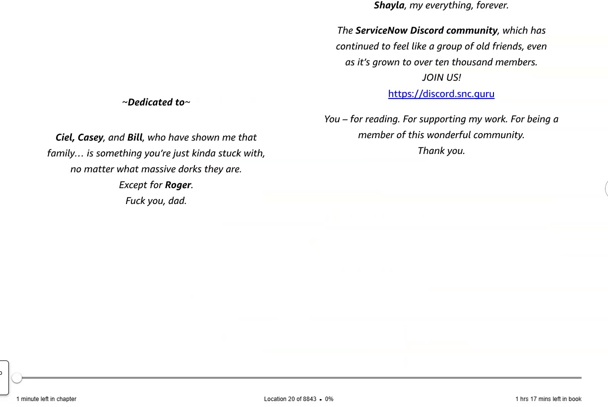
~헌정~
Shayla, 영원히 나의 모든 것.
Ciel, Casey, 그리고 Bill에게 — 가족이란 어떤 바보짓을 하든 떼려야 뗄 수 없는 사이라는 것을 보여준 이들.
Roger만 빼고.
꺼져, 아빠.
ServiceNow Discord 커뮤니티 — 만 명 이상의 회원으로 성장하면서도 오랜 친구 모임 같은 느낌을 유지해온 커뮤니티.
함께해요! https://discord.snc.guru
독자 여러분 — 읽어주셔서, 제 작업을 지원해주셔서, 이 멋진 커뮤니티의 일원이 되어주셔서 감사합니다.
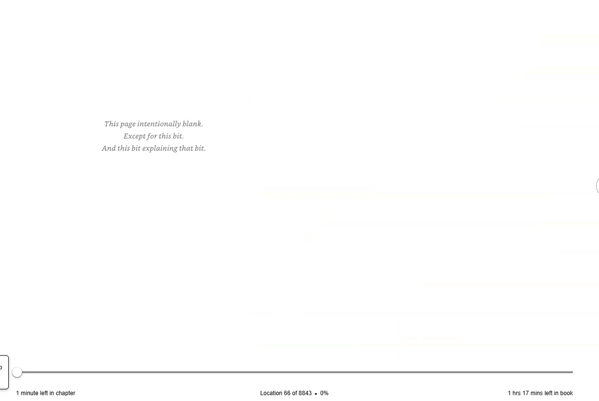
이 페이지는 의도적으로 비워둔 페이지입니다.
이 부분을 제외하고요.
그리고 저 부분을 설명하는 이 부분도요.
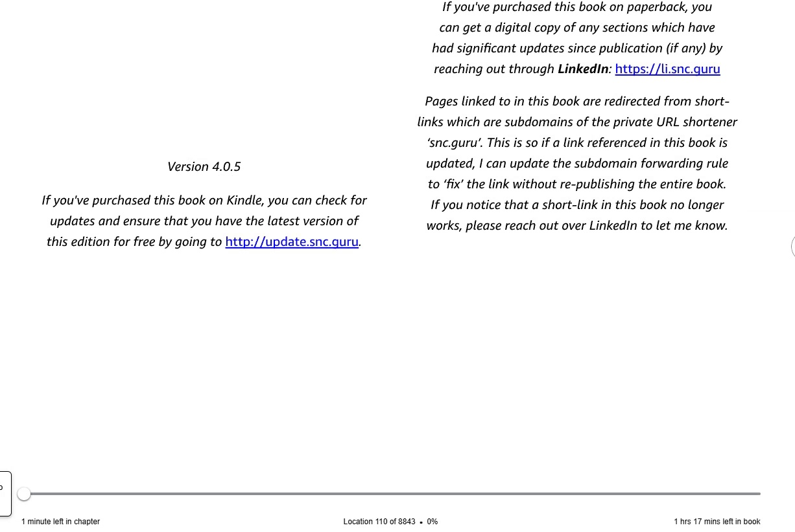
버전 4.0.5
이 단행본을 구매하셨다면 출판 이후 중요한 업데이트가 있는 섹션의 디지털 사본을 LinkedIn을 통해 연락하여 받으실 수 있습니다: https://li.snc.guru
이 책에 링크된 페이지들은 비공개 URL 단축기 'snc.guru'의 하위 도메인인 짧은 링크에서 리디렉션됩니다. 따라서 이 책에서 참조된 링크가 업데이트되면, 전체를 다시 게시하지 않고도 하위 도메인 포워딩 규칙을 업데이트하여 링크를 '수정'할 수 있습니다.
이 책의 짧은 링크가 더 이상 작동하지 않는 경우, LinkedIn을 통해 연락해 주세요.
Kindle로 이 책을 구매하셨다면, http://update.snc.guru로 이동하여 최신 버전이 있는지 무료로 확인하실 수 있습니다.
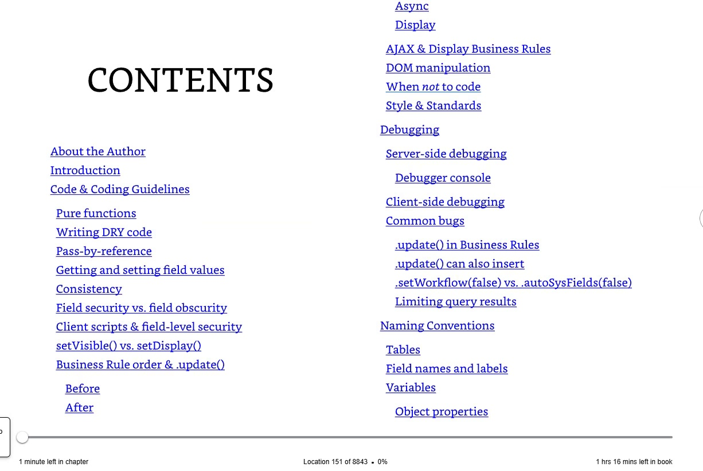
목차
저자 소개 / 소개 / 코드 및 코딩 지침
순수 함수 / DRY 코드 작성 / 참조에 의한 전달 / 필드 값 가져오기 및 설정 / 일관성 / 필드 보안 vs. 필드 가림 / 클라이언트 스크립트 및 필드 수준 보안 / setVisible() vs. setDisplay() / 비즈니스 규칙 순서 및 .update()
이전(Before) / 이후(After) / 비동기(Async) / 표시(Display) / AJAX 및 표시 비즈니스 규칙 / DOM 조작 / 코딩하지 않아야 할 때 / 스타일 및 표준
디버깅
서버 측 디버깅 / 디버거 콘솔 / 클라이언트 측 디버깅 / 일반적인 버그 / 비즈니스 규칙에서의 .update() / .update()는 삽입도 가능 / .setWorkflow(false) vs. .autoSysFields(false) / 쿼리 결과 제한
명명 규칙
테이블 / 필드 이름 및 레이블 / 변수 / 객체 속성
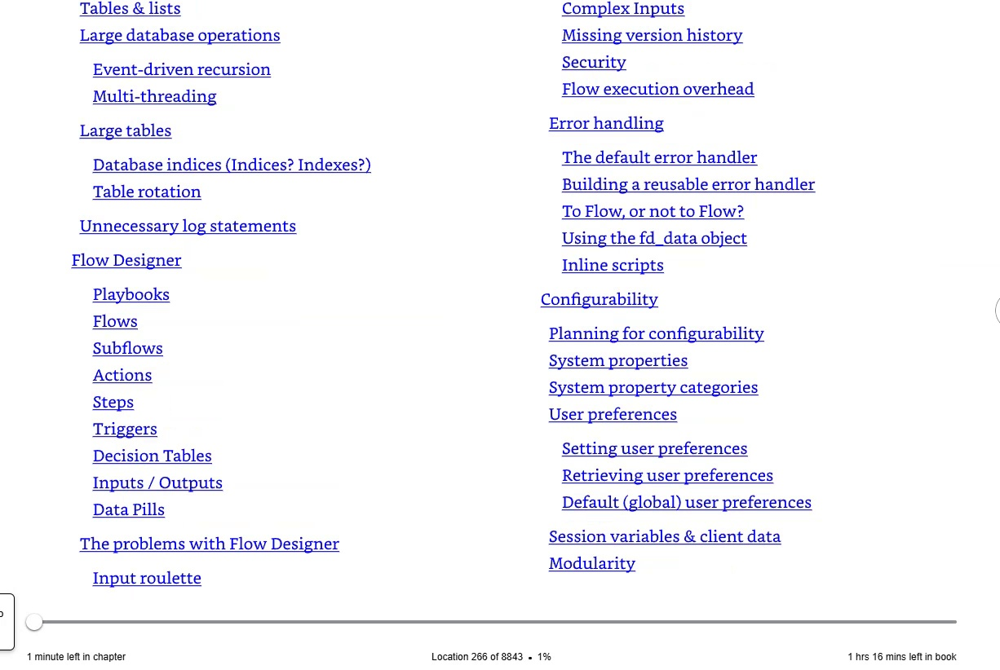
목차 (계속)
테이블 및 목록 / 대규모 데이터베이스 작업
이벤트 기반 재귀 / 멀티스레딩
대형 테이블
데이터베이스 인덱스(Indices? Indexes?) / 테이블 회전
불필요한 로그 구문
Flow Designer
플레이북 / 흐름(Flows) / 하위 흐름(Subflows) / 작업(Actions) / 단계(Steps) / 트리거(Triggers) / 결정 테이블(Decision Tables) / 입력/출력(Inputs/Outputs) / 데이터 필(Data Pills)
Flow Designer의 문제점
입력 룰렛 / 복잡한 입력 / 누락된 버전 기록 / 보안 / 흐름 실행 오버헤드
오류 처리
기본 오류 처리기 / 재사용 가능한 오류 처리기 구축 / Flow를 쓸 것인가, 말 것인가? / fd_data 객체 사용 / 인라인 스크립트
구성 가능성(Configurability)
구성 가능성 계획 / 시스템 속성 / 시스템 속성 카테고리 / 사용자 기본 설정
사용자 기본 설정 설정 / 사용자 기본 설정 검색 / 기본(글로벌) 사용자 기본 설정
세션 변수 및 클라이언트 데이터 / 모듈성
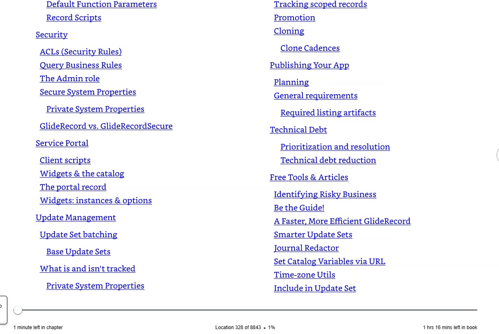
목차 (계속)
기본 함수 매개변수 / 레코드 스크립트
보안
ACL(보안 규칙) / 쿼리 비즈니스 규칙 / 관리자 역할 / 보안 시스템 속성
비공개 시스템 속성
GlideRecord vs. GlideRecordSecure
서비스 포털(Service Portal)
클라이언트 스크립트 / 위젯 및 카탈로그 / 포털 레코드 / 위젯: 인스턴스 및 옵션
업데이트 관리
업데이트 세트 배치 처리 / 기본 업데이트 세트
추적되는 항목과 추적되지 않는 항목
비공개 시스템 속성 / 범위 지정된 레코드 추적
승격 / 복제
복제 주기(Cadences)
앱 게시
계획 / 일반 요구 사항
필수 목록 아티팩트
기술 부채(Technical Debt)
우선순위 지정 및 해결 / 기술 부채 감소
무료 도구 및 기사
위험한 비즈니스 식별 / 가이드가 되세요! / 더 빠르고 효율적인 GlideRecord / 스마트한 업데이트 세트 / 저널 편집기 / URL을 통한 카탈로그 변수 설정 / 시간대 유틸리티 / 업데이트 세트에 포함
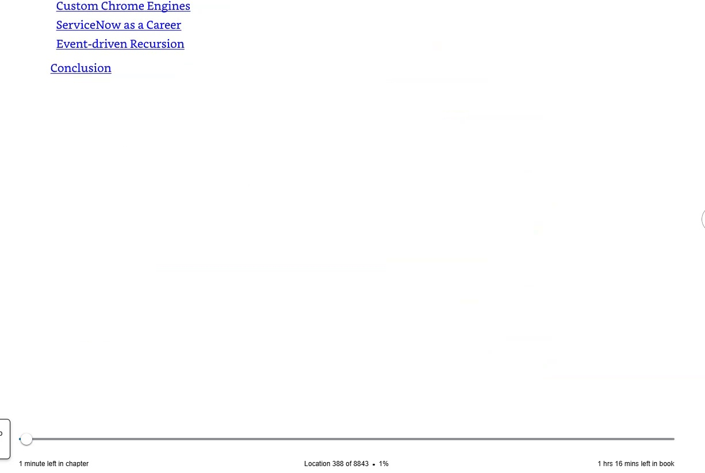
목차 (계속)
맞춤형 Chrome 엔진 / ServiceNow를 직업으로 / 이벤트 기반 재귀 / 결론
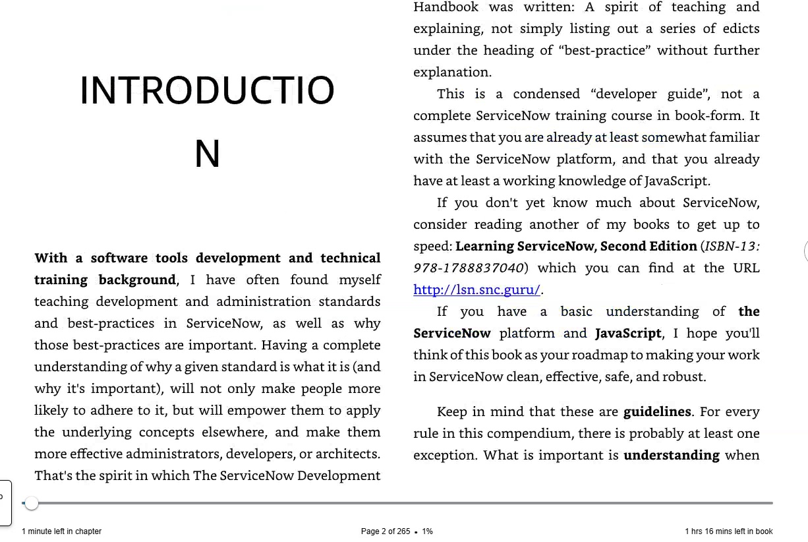
소개
ServiceNow 개발 핸드북은 가르치고 설명하는 정신으로 작성되었습니다. 단순히 '모범 사례'라는 제목 아래 일련의 규칙을 나열하는 것이 아니라, 그 이유까지 설명합니다.
이것은 책 형태의 완전한 ServiceNow 교육 과정이 아닌, 요약된 '개발자 가이드'입니다. 독자가 ServiceNow 플랫폼에 대해 이미 어느 정도 익숙하고, JavaScript에 대한 최소한의 실무 지식을 보유하고 있다고 가정합니다.
ServiceNow에 대해 아직 잘 모른다면, 제 다른 책 「Learning ServiceNow, 제2판」(ISBN-13: 978-1788837040)을 읽어보시기 바랍니다. URL http://lsn.snc.guru/에서 찾으실 수 있습니다.
ServiceNow 플랫폼과 JavaScript에 대한 기본적인 이해가 있다면, 이 책을 ServiceNow에서의 작업을 깔끔하고, 효과적이고, 안전하고, 견고하게 만들기 위한 로드맵으로 활용하시기 바랍니다.
이것은 지침(guidelines)이라는 점을 명심하세요. 이 개요서의 모든 규칙에는 최소 하나의 예외가 있을 수 있습니다. 중요한 것은 주어진 표준이 왜 그런지를 이해하는 것이며, 이를 통해 규칙을 더 잘 따를 뿐만 아니라 적절히 적용할 수 있는 역량을 갖추게 됩니다.
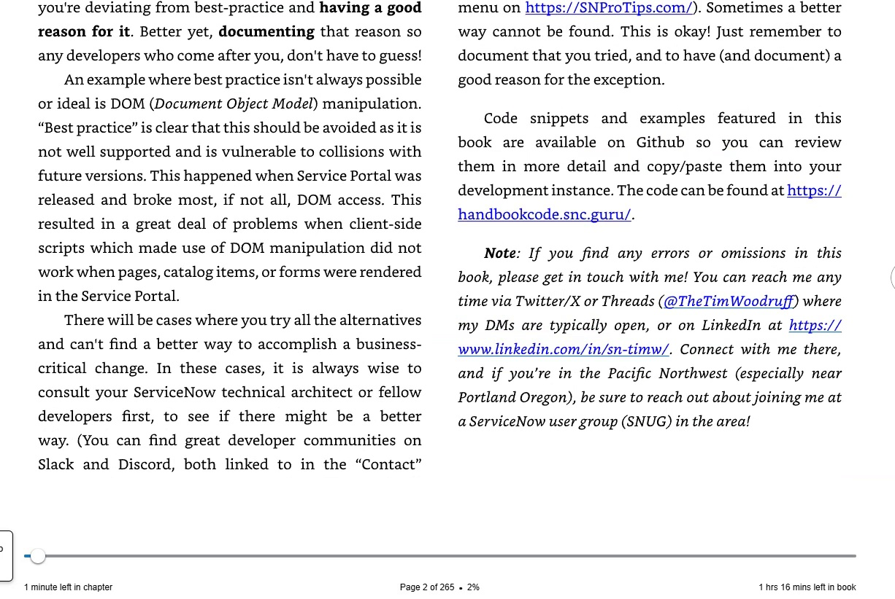
소개 (계속)
모범 사례에서 벗어나는 것이 더 나은 이유가 있을 때도 있지만, 그 이유를 문서화하는 것이 중요합니다. 이후의 개발자가 추측할 필요가 없도록 하세요. 당신이 시도한 것과 그 결과를 문서화하세요.
모범 사례가 항상 가능하지는 않은 예외의 한 가지 좋은 사례는 DOM(Document Object Model) 조작입니다. 이는 지원되지 않으며 향후 버전에서 깨질 수 있으므로 피해야 합니다. 그러나 Service Portal 개발에서는 대부분의 DOM 접근이 차단되지만, 클라이언트 측 스크립트에서 DOM 조작을 활용할 때 작동하는 경우도 있습니다.
이 핸드북에 포함된 코드 조각 및 예제는 GitHub에서도 제공되므로, 더 자세히 검토하고 복사/붙여넣기할 수 있습니다. 이 코드는 https://handbookcode.snc.guru/에서 찾을 수 있습니다.
이 작업에서 오류나 누락을 발견하면 연락해 주세요! Twitter/X 또는 Threads @TheTimWoodruff, LinkedIn https://www.linkedin.com/in/sn-timw/에서 연락할 수 있습니다.
특히 ServiceNow 기술 설계자나 동료와 가까운 태평양 북서부(포틀랜드, 오리건 지역)에 계시다면, 더 나은 ServiceNow 사용자 그룹(SNUG)에 대해 문의해 보세요! 연락처에 링크된 Slack 및 Discord에서 훌륭한 개발자 커뮤니티를 찾을 수 있습니다.
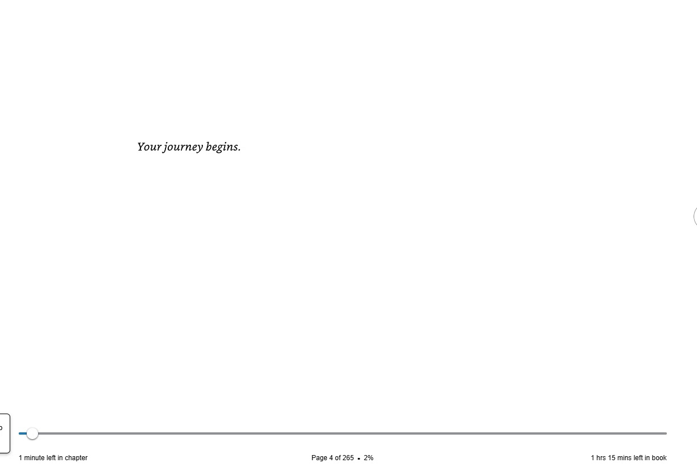
여정의 시작
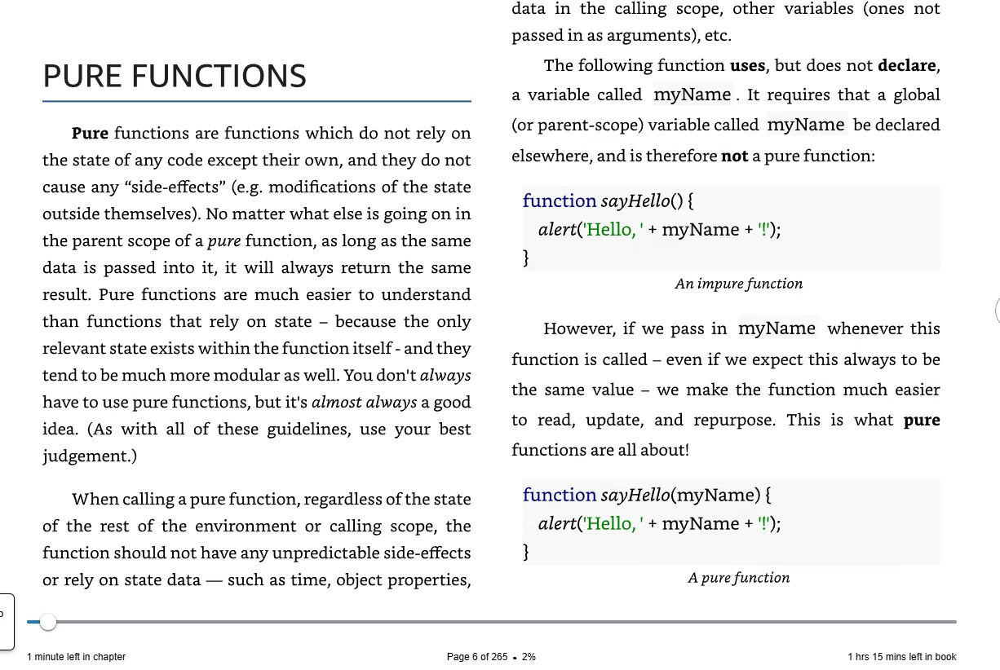
순수 함수 (PURE FUNCTIONS)
순수 함수란 자신의 코드 외의 다른 상태에 의존하지 않으며, '부작용(side-effects)'(예: 자체 외부의 상태 수정)을 일으키지 않는 함수입니다. 순수 함수의 상위 범위에서 무슨 일이 일어나든, 동일한 데이터가 전달되는 한 항상 동일한 결과를 반환합니다.
순수 함수는 상태에 의존하는 함수보다 이해하기 훨씬 쉽습니다. 왜냐하면 관련 상태가 함수 자체 내에만 존재하기 때문입니다. 그리고 훨씬 더 모듈화되는 경향이 있습니다. 항상 순수 함수를 사용할 필요는 없지만, 거의 항상 좋은 아이디어입니다. (이 지침들과 마찬가지로 최선의 판단을 사용하세요.)
순수 함수를 호출할 때, 환경이나 호출 범위의 나머지 상태와 관계없이, 함수에 예측 불가능한 부작용이 있어서는 안 되며, 시간이나 객체 속성과 같은 상태 데이터에 의존해서는 안 됩니다.
다음 함수는 myName이라는 변수를 사용하지만 선언하지 않습니다. 전역 또는 상위 범위에서 선언된 변수가 필요하므로 순수 함수가 아닙니다:
function sayHello() {
alert('Hello, ' + myName + '!');
}
— 비순수 함수
그러나 이 함수를 호출할 때마다 myName을 인수로 전달하면, 동일한 값이 항상 기대되더라도, 함수를 읽고, 업데이트하고, 재활용하기가 훨씬 쉬워집니다. 이것이 바로 순수 함수의 핵심입니다!
function sayHello(myName) {
alert('Hello, ' + myName + '!');
}
— 순수 함수
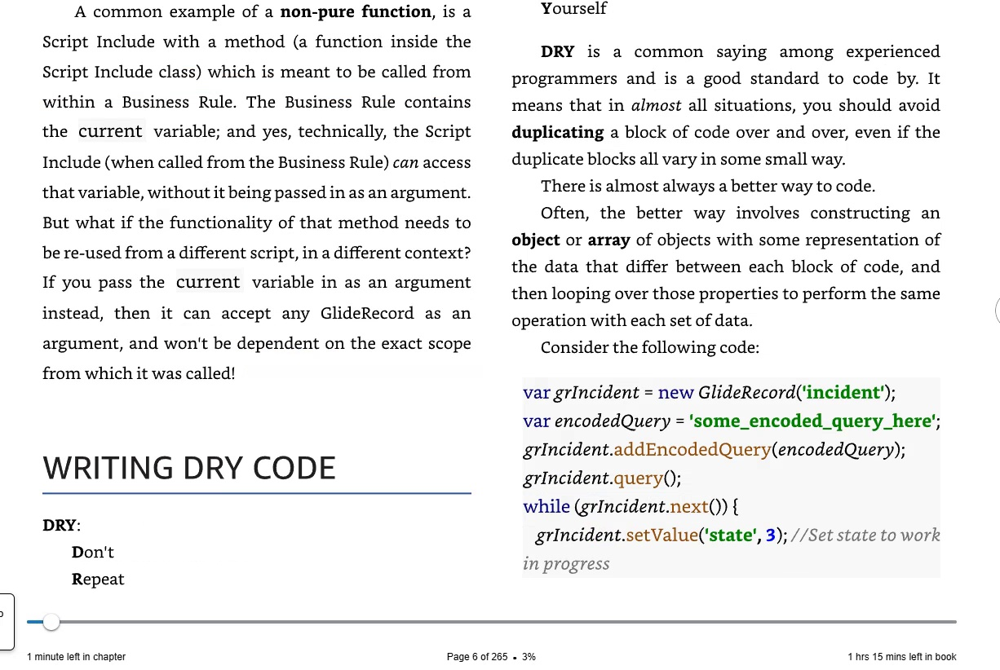
DRY 코드 작성
순수하지 않은 함수의 일반적인 예는 스크립트 포함(Script Include)입니다. 프로그래밍에서 'DRY(Don't Repeat Yourself)'는 중요한 원칙이며, 비즈니스 규칙 내에서 공통 메서드를 호출하기 위해 스크립트 포함 클래스를 사용하는 것은 좋은 코딩 표준입니다.
비즈니스 규칙에서 호출되는 스크립트 포함은 거의 모든 상황에서 current 변수를 사용하지 않아야 합니다. 대신, 인수로 전달된 데이터를 사용해야 합니다. 이는 코드를 다른 컨텍스트의 다른 스크립트에서 재사용할 수 있게 하기 때문입니다.
다음 코드를 고려해 보세요:
var grIncident = new GlideRecord('incident');
var encodedQuery = '여기에 인코딩된 쿼리';
grIncident.addEncodedQuery(encodedQuery);
grIncident.query();
while (grIncident.next()) {
grIncident.setValue('state', 3); // 상태를 '진행 중'으로 설정
grIncident.update();
}
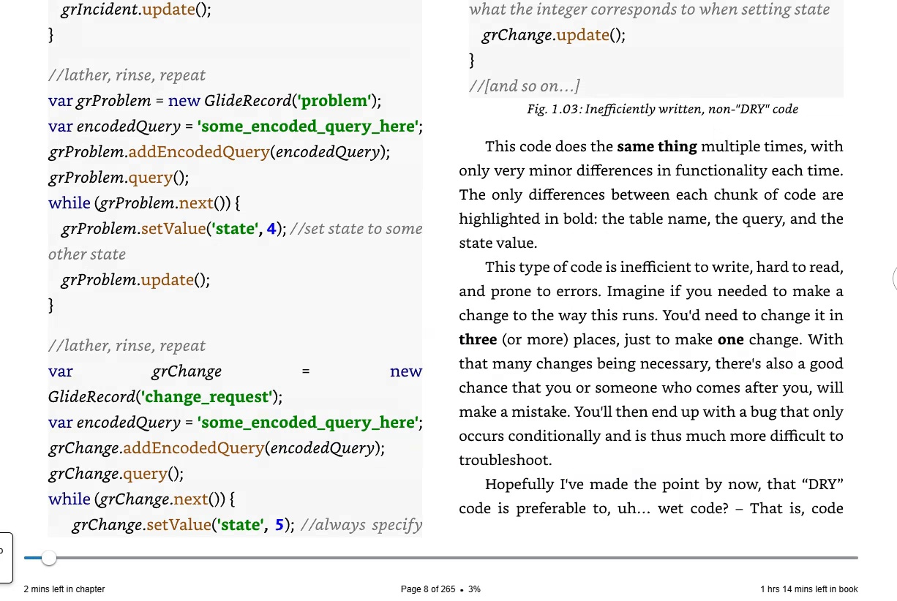
DRY 코드 작성 (계속)
위 코드에서 각 테이블(incident, problem, change_request)에 대해 거의 동일한 코드 블록이 반복되며, 테이블 이름과 상태 값만 다릅니다. 이런 유형의 코드는 비효율적이고 읽기 어려우며 오류가 발생하기 쉽습니다.
실행 방식을 변경해야 할 때 한 번이 아닌 세 번 이상 변경해야 합니다. 변경이 필요할 때마다 실수할 가능성이 높아지고, 결과적으로 조건부로만 발생하는 버그로 이어져 문제 해결이 훨씬 어려워집니다.
DRY 코드가 WET(Write Everything Twice) 코드보다 낫다는 점이 분명해지길 바랍니다.
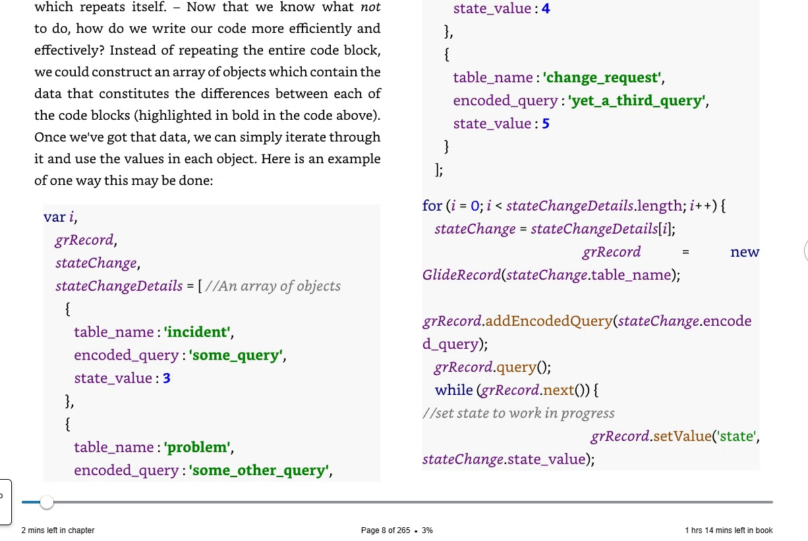
DRY 코드 작성 (계속)
전체 코드 블록을 반복하는 대신, 테이블 이름, 인코딩된 쿼리, 상태 값 등 각 코드 블록 간의 차이점을 구성하는 데이터를 포함하는 객체 배열을 구성할 수 있습니다.
일단 해당 데이터를 얻으면, 간단히 반복하면서 각 객체의 값을 사용할 수 있습니다. 한 가지 방법으로 다음과 같이 수행할 수 있습니다:
var stateChangeDetails = [
{ table_name: 'incident', encoded_query: 'some_query', state_value: 3 },
{ table_name: 'problem', encoded_query: 'some_other_query', state_value: 4 },
{ table_name: 'change_request', encoded_query: 'yet_a_third_query', state_value: 5 }
];
for (var i = 0; i < stateChangeDetails.length; i++) {
var stateChange = stateChangeDetails[i];
var grRecord = new GlideRecord(stateChange.table_name);
grRecord.addEncodedQuery(stateChange.encoded_query);
grRecord.query();
while (grRecord.next()) {
grRecord.setValue('state', stateChange.state_value);
grRecord.update();
}
}
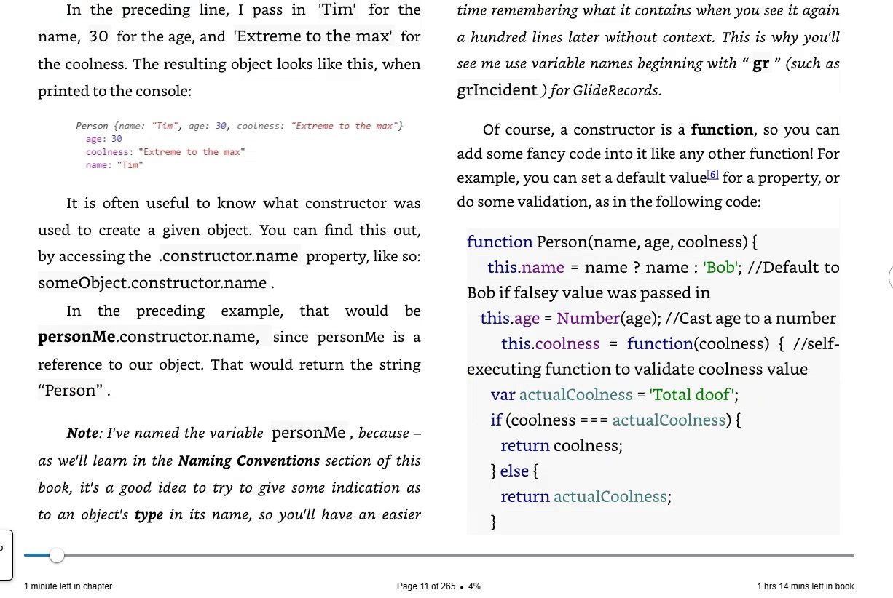
객체 속성 (Object Properties)
객체 생성자(Constructor)에 대해 알아보겠습니다. 예를 들어 'Tim', 나이, 'Extreme to the max'를 전달하면, 결과 객체는 다음과 같이 보입니다:
Person {name: "Tim", age: 30, coolness: "Extreme to the max"}
생성자는 함수이므로 기본값을 설정하거나 몇 가지 검증을 수행하는 등의 코드를 추가할 수 있습니다. 주어진 객체를 생성하는 데 사용된 생성자가 무엇인지 아는 것이 유용할 때가 많습니다. constructor.name 속성에 접근하여 찾을 수 있습니다:
SomeObject.constructor.name // 해당 객체의 생성자 이름을 문자열로 반환
참고: 명명 규칙 섹션에서 배우겠지만, 객체 유형에 대한 몇 가지 표시를 이름에 제공하는 것이 좋습니다. 그러면 더 쉽게 식별할 수 있습니다.
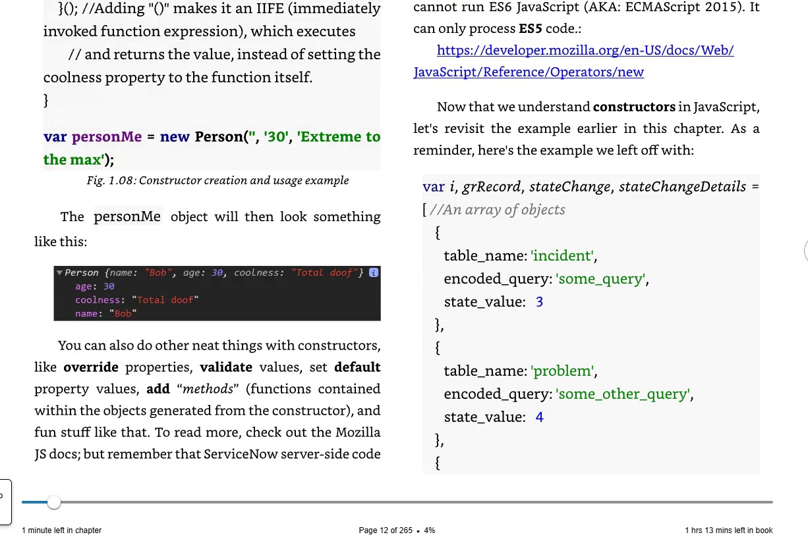
즉시 실행 함수 표현식 (IIFE) 및 ES6
'();'를 추가하면 즉시 실행됩니다. ServiceNow는 서버 측에서 ES6(ECMAScript 6) JavaScript를 실행할 수 없으며, ES5 코드만 처리할 수 있습니다.
JavaScript의 생성자를 이해했으므로, 이전 예제에서 배운 것을 데이터 객체 배열에 적용해 보겠습니다.
또한 생성자를 사용하여 속성 재정의, 값 검증, 기본 속성 값에 포함된 '메서드' 함수 추가 등 다른 유용한 작업을 수행할 수 있습니다.
자세한 내용은 Mozilla JS 문서를 확인하세요. 단, ServiceNow 서버 측 코드는 ES5만 지원한다는 점을 기억하세요.
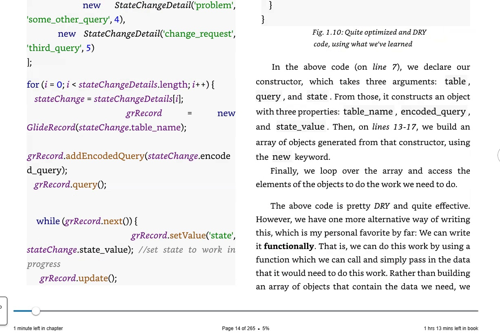
생성자를 활용한 DRY 코드 최적화
StateChangeDetail 생성자를 선언하여 세 개의 인수(테이블 이름, 쿼리, 상태)를 받고, 세 가지 속성을 가진 새 객체를 구성합니다. 그런 다음 해당 생성자에서 생성된 객체 배열을 빌드하고, 마지막으로 배열을 반복하면서 각 객체 요소에 접근하여 작업을 수행합니다.
위의 코드는 매우 DRY하고 효과적이지만, 이를 작성하는 또 다른 방법이 있습니다. 기능적(functional) 접근 방식을 사용하여, 객체 배열을 구축하는 대신 데이터를 전달할 수 있는 함수를 호출하면 됩니다.
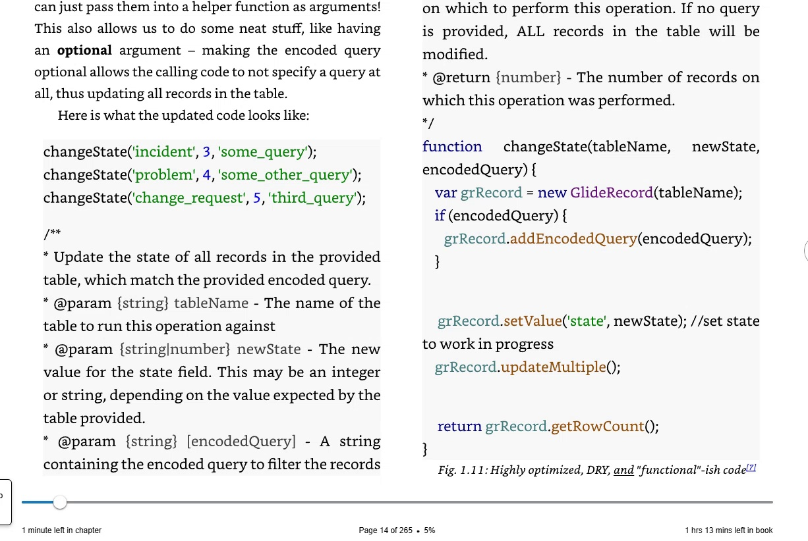
함수형 DRY 코드
도우미 함수에 인수를 전달할 수 있습니다! 인코딩된 쿼리를 선택적으로 만들면, 쿼리 없이 호출하여 해당 테이블의 모든 레코드를 업데이트하는 등의 깔끔한 작업도 가능합니다.
/**
* 제공된 인코딩된 쿼리와 일치하는 제공된 테이블의 모든 레코드 상태를 업데이트합니다.
* @param {string} tableName - 작업할 테이블의 이름
* @param {string|number} newState - 상태 필드의 새로운 값
* @param {string} [encodedQuery] - 레코드 필터링을 위한 인코딩된 쿼리 문자열(선택)
* @return {number} 업데이트된 레코드 수
*/
function changeState(tableName, newState, encodedQuery) {
var grRecord = new GlideRecord(tableName);
if (encodedQuery) {
grRecord.addEncodedQuery(encodedQuery);
}
grRecord.setValue('state', newState);
grRecord.updateMultiple();
return grRecord.getRowCount();
}
changeState('incident', 3, 'some_query');
changeState('problem', 4, 'some_other_query');
changeState('change_request', 5, 'third_query');
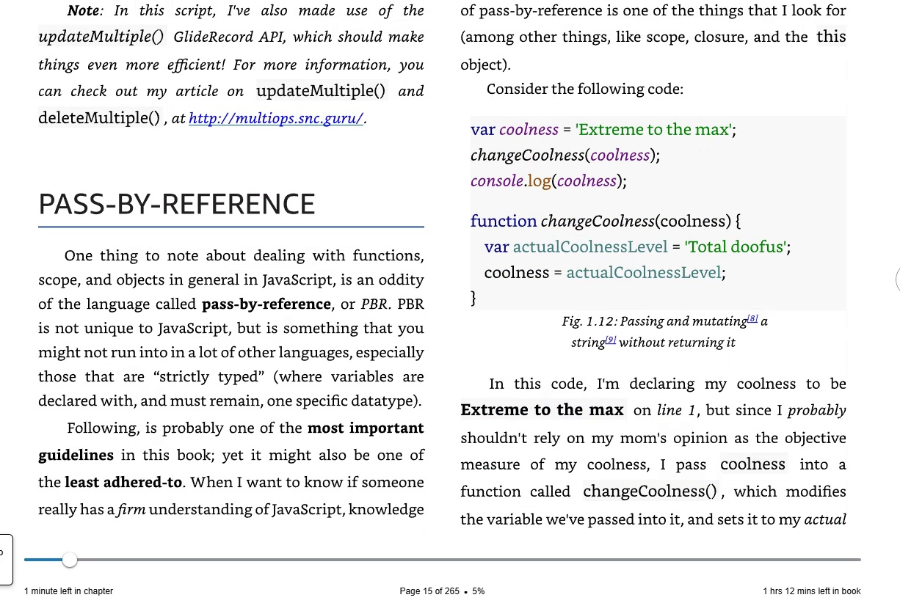
참조에 의한 전달 (PASS-BY-REFERENCE)
참고: updateMultiple() GlideRecord API는 작업을 훨씬 더 효율적으로 만들어주는 메서드 중 하나입니다. 자세한 내용은 updateMultiple()에 대한 기사 http://multiops.snc.guru/ 및 deleteMultiple()을 참조하세요.
함수를 다루는 한 가지 중요한 사실은 JavaScript의 범위(scope)와 객체가 '참조에 의한 전달(pass-by-reference)' 또는 PBR이라는 것입니다. 이는 JavaScript에만 고유한 것은 아니지만, 변수가 특정 데이터 유형으로 선언되고 유지되어야 하는 '엄격한 타입 지정(strictly typed)' 언어에서는 나타나지 않을 수 있습니다.
다음 코드를 고려해 보세요:
var coolness = 'Extreme to the max';
changeCoolness(coolness);
console.log(coolness); // 여전히 'Extreme to the max'를 출력
function changeCoolness(coolness) {
var actualCoolnessLevel = 'Total doofus';
return actualCoolnessLevel;
}
이 코드에서 문자열(원시 값)을 전달하고 있으므로, 원래 변수는 변경되지 않습니다.
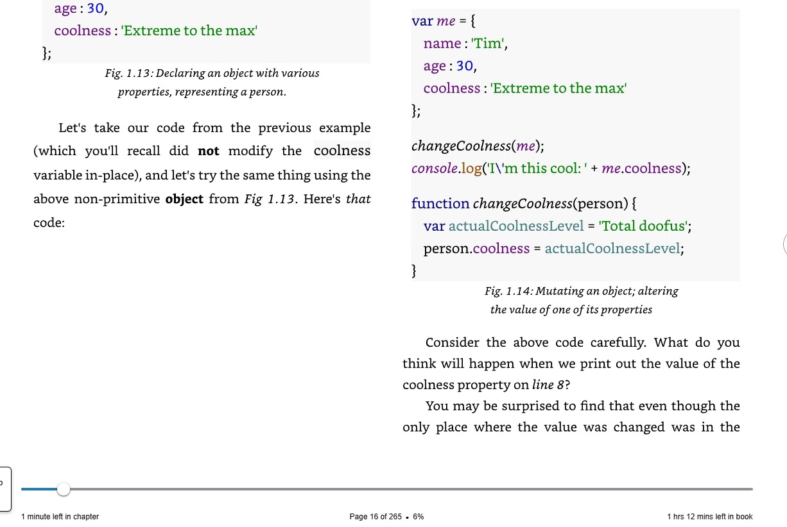
참조에 의한 전달 - 객체의 경우
이번에는 원시 변수가 아닌 비원시(non-primitive) 객체를 사용하여 동일한 작업을 수행해 보겠습니다:
var me = {
name: 'Tim',
age: 30,
coolness: 'Extreme to the max'
};
changeCoolness(me);
console.log('나는 이만큼 멋지다: ' + me.coolness);
function changeCoolness(person) {
var actualCoolnessLevel = 'Total doofus';
person.coolness = actualCoolnessLevel;
}
위의 코드를 주의 깊게 살펴보세요. 8행에서 coolness 속성의 값을 출력하면 어떤 결과가 나올까요? 값이 변경된 유일한 곳이 함수 내부임에도 불구하고, 놀라울 수도 있습니다.
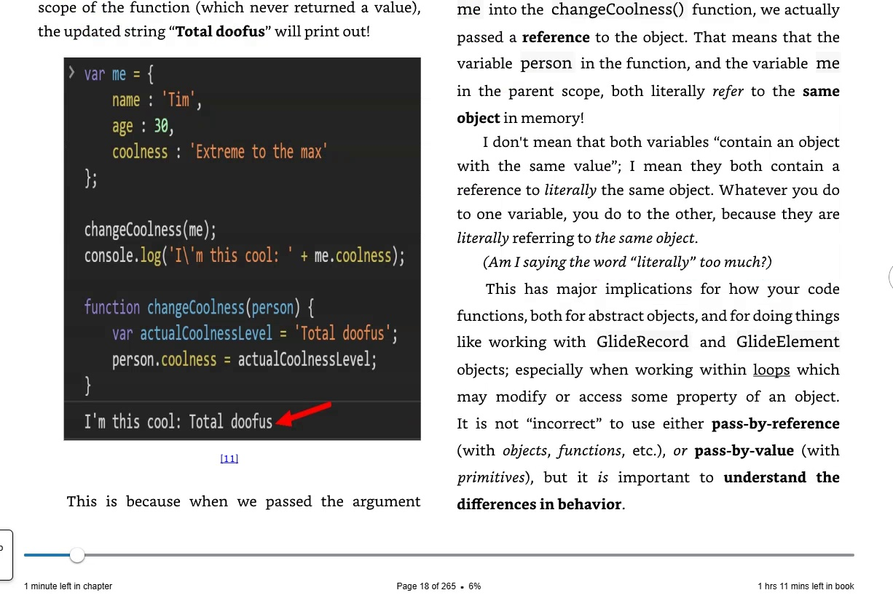
참조에 의한 전달 - 상세 설명
실제로 'Total doofus'라는 문자열이 출력됩니다! 객체에 대한 참조가 전달되었기 때문에, 함수의 person 변수와 상위 범위의 me 변수는 문자 그대로 메모리에 있는 동일한 객체를 참조합니다.
두 변수가 '동일한 값을 갖는 객체를 포함'한다는 의미가 아닙니다. 둘 다 말 그대로 동일한 객체에 대한 참조를 포함한다는 뜻입니다. 하나의 변수에 무엇을 하든 다른 변수에도 영향을 미칩니다. 왜냐하면 그들은 말 그대로 동일한 객체를 참조하기 때문입니다.
이는 GlideRecord와 GlideElement 객체를 사용할 때와 같이, 코드가 '추상 객체'와 일을 수행하는 방식에 중요한 영향을 미칩니다. 특히 객체의 일부 속성을 수정하거나 접근할 수 있는 루프 내에서 작업할 때 중요합니다.
참조에 의한 전달을 사용하는 것은 '잘못'이 아니지만, 원시 값의 경우 값에 의한 전달(pass-by-value)이 일어나고, 객체의 경우 참조에 의한 전달이 일어난다는 동작 차이를 이해하는 것이 중요합니다.
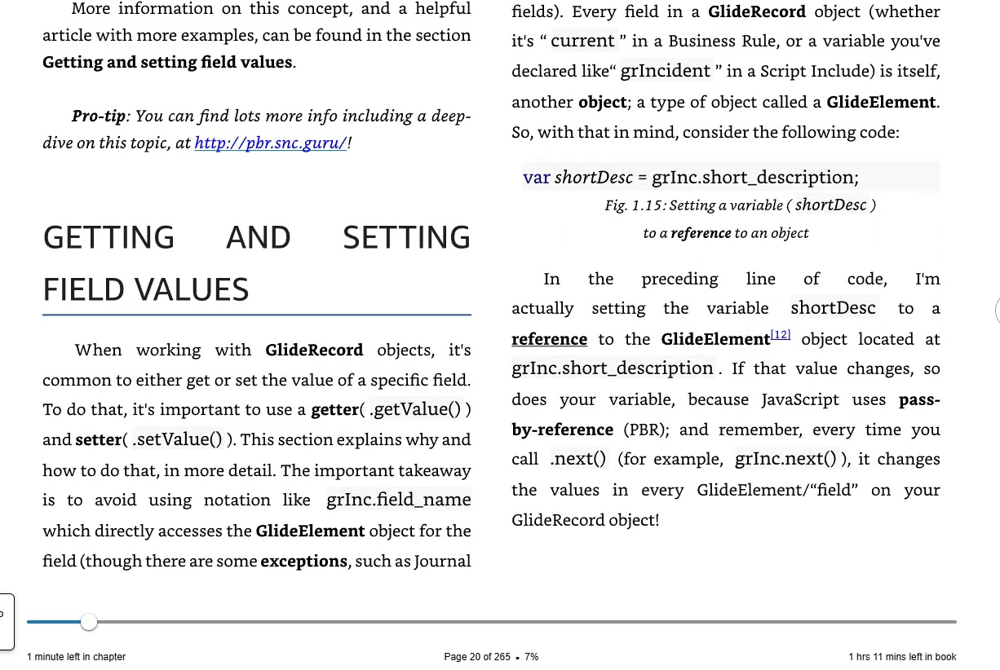
필드 값 가져오기 및 설정 (GETTING AND SETTING FIELD VALUES)
GlideRecord 객체의 모든 필드는, 비즈니스 규칙의 current이든 grIncident와 같이 선언된 변수든, 그 자체로 또 다른 객체입니다. 이 객체 유형을 GlideElement라고 합니다.
전문가 팁: 이 주제에 대한 심층 정보는 http://pbr.snc.guru/에서 찾을 수 있습니다.
var shortDesc = grInc.short_description;
위의 코드에서 실제로는 shortDesc 변수를 GlideElement 객체에 대한 참조로 설정하고 있습니다. 값이 변경되면 참조에 의한 전달(PBR)을 사용하기 때문에 변수도 변경됩니다.
따라서 getValue()를 사용하여 원시 값을 검색하는 것이 가장 효율적이고 최선의 방법입니다. getValue() API가 이를 수행하는 가장 좋은 일관된 방법이며, toString()을 사용할 수도 있습니다.
적어도 하나의 스크립트 항목 내에서 일관성을 유지하는 것이 중요합니다. 그렇지 않으면 JavaScript의 타입 강제 변환으로 인해 문제가 발생할 수 있습니다.
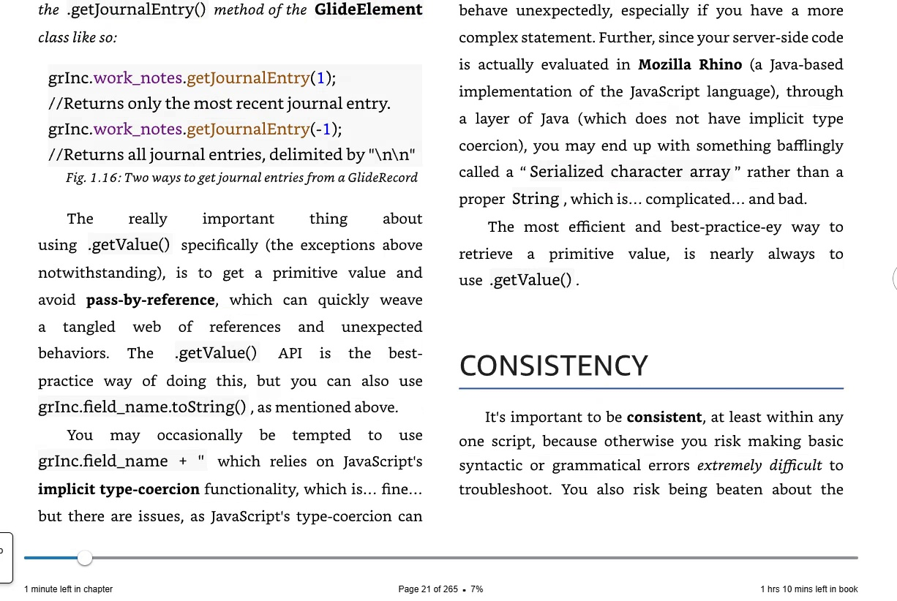
필드 값 - 저널 필드와 예외
GlideElement의 getJournalEntry() 메서드는 예기치 않게 동작할 수 있습니다:
grInc.work_notes.getJournalEntry(1); // 가장 최근 저널 항목만 반환
grInc.work_notes.getJournalEntry(-1); // 'nn'으로 구분된 모든 저널 항목을 반환
정말 중요한 점: getValue()를 사용하는 것이 특히 원시 값을 검색할 때 가장 효율적이고 최선의 방법입니다. 얽힌 참조와 예상치 못한 동작의 복잡한 관계를 빠르게 만들 수 있기 때문입니다.
적어도 하나의 스크립트 내에서 일관성을 유지하는 것이 중요합니다. 때때로 grInc.field_name + '' 같은 암묵적 유형 변환에 의존하고 싶은 유혹이 있을 수 있지만, JavaScript의 타입 강제 변환으로 인한 문제가 발생할 수 있습니다.
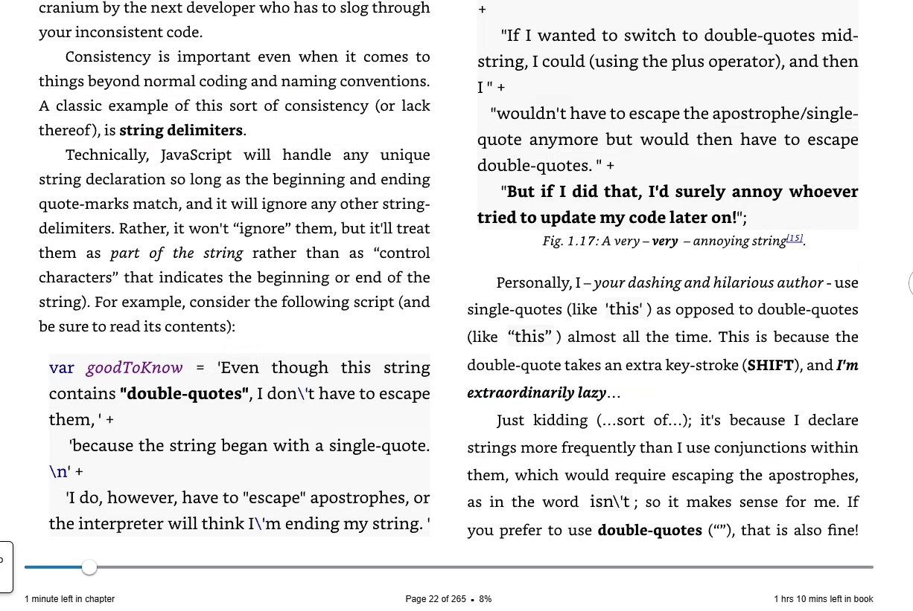
일관성 (CONSISTENCY)
문자열 구분 기호에 대한 일관성도 중요합니다. 작은따옴표('this')와 큰따옴표("this") 사이에서 일관성을 유지하세요.
개인적으로 저자는 작은따옴표(')를 사용합니다. 큰따옴표는 추가 키 입력(SHIFT)이 필요하고, 문자열 내에서 축약형(apostrophe)을 사용할 때 이스케이프해야 하는 불편함이 있습니다.
어떤 것을 선택하든, 일관성이 핵심입니다. 한 스크립트 내에서 따옴표 스타일을 혼합하면, 나중에 코드를 업데이트하려는 다음 개발자에게 매우 짜증나는 경험이 됩니다.
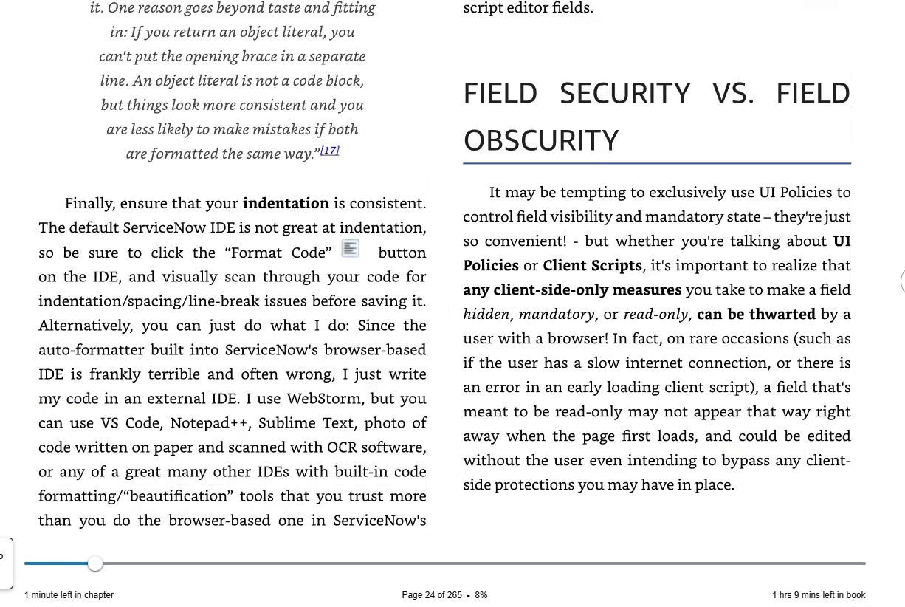
필드 보안 vs. 필드 가림 (FIELD SECURITY VS. FIELD OBSCURITY)
코딩 스타일(들여쓰기, 중괄호 배치 등)에 대해서도 일관성이 중요합니다. ServiceNow의 기본 IDE는 들여쓰기가 좋지 않으므로, 반드시 'Code Format(코드 서식)' 버튼을 사용하세요.
필드를 숨기거나 읽기 전용으로 만드는 것이 실제 보안 조치가 아님을 인식하는 것이 중요합니다. 외부 IDE(WebStorm, VS Code, Notepad++, Sublime Text 등) 중 하나를 사용하여 ServiceNow의 브라우저 기반 IDE보다 더 신뢰할 수 있는 서식/미화 도구로 코드를 작성할 수 있습니다.
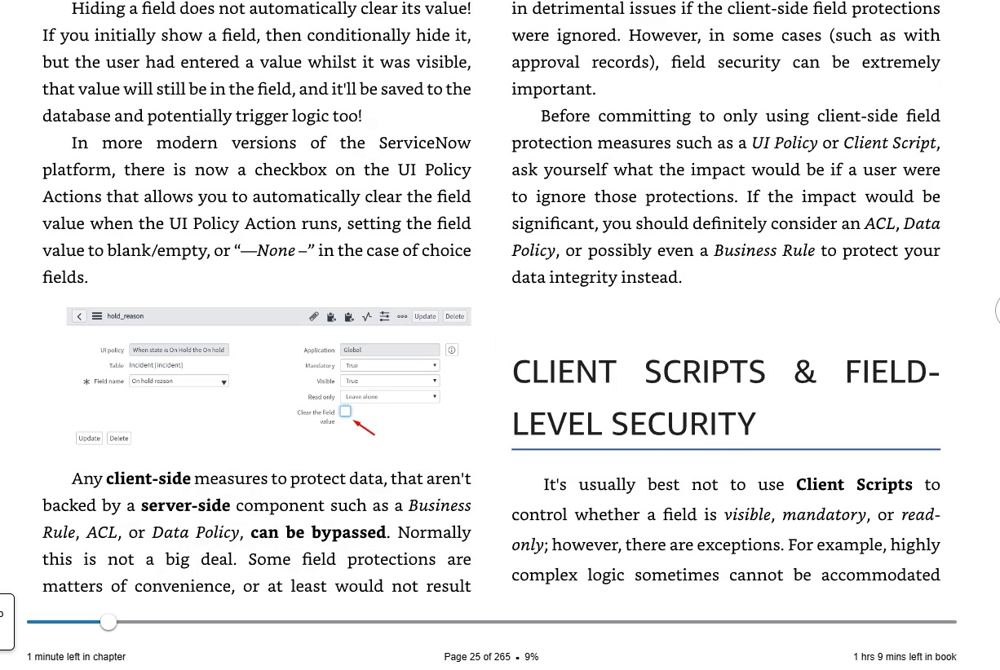
클라이언트 스크립트 및 필드 수준 보안
필드를 숨겨도 해당 값이 자동으로 지워지지 않습니다! 클라이언트 측 필드 보호가 처음에 필드를 표시한 후 조건부로 숨기면, 사용자가 입력한 값이 여전히 필드에 남아 있어 데이터베이스에 저장되고 잠재적으로 로직도 트리거될 수 있습니다.
최신 버전의 ServiceNow에는 UI 정책에서 필드를 숨길 때 자동으로 값을 지우는 체크박스가 있습니다. 그러나 이 보호를 무시하면 어떤 영향이 있는지 자문해 보세요.
데이터 무결성 보호가 중요한 경우, 반드시 ACL, 데이터 정책, 또는 비즈니스 규칙과 같은 서버 측 구성 요소를 사용하세요. 클라이언트 측 보호에만 의존하지 마세요.
일반적으로 클라이언트 스크립트를 사용하여 필드 표시 여부를 제어하는 대신, 비즈니스 규칙, ACL, 또는 데이터 정책과 같은 서버 측 구성 요소를 사용하는 것이 좋습니다. 이는 클라이언트 측 조치가 우회될 수 있기 때문입니다.
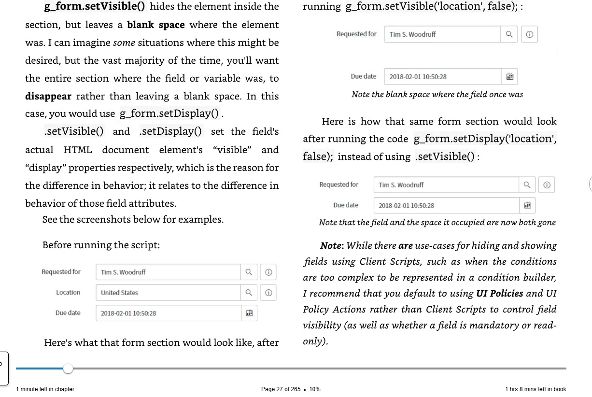
setVisible() vs. setDisplay()
g_form.setVisible('location', false): 요소를 숨기지만, 해당 요소가 있던 빈 공간은 양식에 남아 있습니다. 일부 상황에서는 바람직할 수 있지만, 대부분의 경우 필드가 차지하던 전체 공간이 사라지기를 원할 것입니다.
g_form.setDisplay('location', false): 요소와 그 공간 모두를 제거합니다.
setVisible()과 setDisplay()의 차이는 실제 HTML 문서 요소의 'visibility'와 'display' 속성을 각각 사용하기 때문에 발생합니다.
참고: 조건이 너무 복잡하여 조건 빌더에 표시할 수 없는 경우와 같이, 클라이언트 스크립트를 사용하여 필드를 숨기고 표시하는 사용 사례가 있습니다. 그러나 기본적으로는 필드 가시성, 필수 여부, 읽기 전용 설정을 제어하기 위해 클라이언트 스크립트 대신 UI 정책 및 UI 정책 작업을 사용하는 것이 좋습니다.
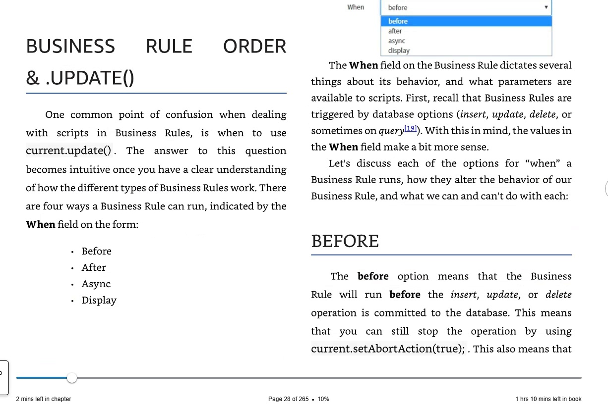
비즈니스 규칙 순서 및 .update() — Before(이전)
비즈니스 규칙의 When 필드에는 Before(이전), After(이후), Async(비동기), Display(표시) 네 가지 옵션이 있으며, 이는 동작과 사용 가능한 기능을 결정합니다.
Before 옵션은 비즈니스 규칙이 삽입, 업데이트 또는 삭제 작업이 데이터베이스에 커밋되기 전에 실행됨을 의미합니다. 이는 current.setAbortAction(true)를 사용하여 작업을 중지할 수 있음을 의미합니다.
Before 비즈니스 규칙에서는 current.update()를 호출할 필요가 없습니다. 레코드가 아직 데이터베이스에 커밋되지 않았으므로, 현재 객체의 필드 값만 변경하면 됩니다.
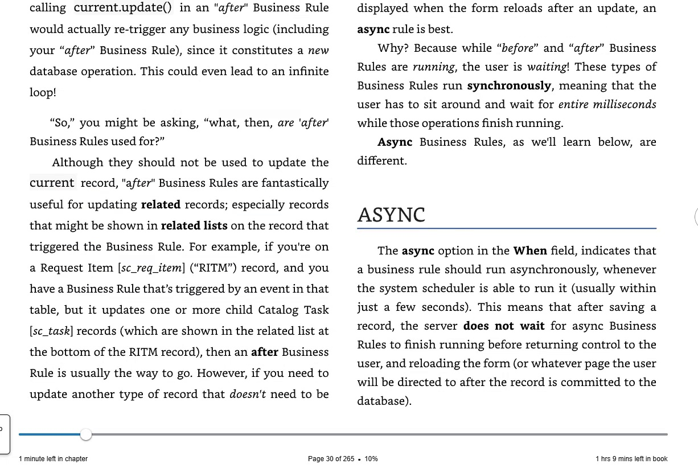
업데이트 후 양식을 다시 로드할 때 표시되는 "이후" 비즈니스 규칙에서 currentupdateO를 호출하면 실제로 모든 비즈니스 로직이 다시 트리거됩니다. 비동기 규칙을 포함하는 것이 "이후" 비즈니스 규칙을 구성하는 데 가장 적합합니다. 이유는 무엇입니까? 왜냐하면 "이전"과 "이후" 비즈니스 새 데이터베이스가 실행되는 동안 이 무한한 규칙이 사용자를 기다리고 있기 때문입니다! 이는 비즈니스 규칙이 동기식으로 실행되는 경우에도 작업 유형을 이끌 수 있습니다. 즉, 루프가 발생합니다! 사용자는 앉아서 1000분의 1초 동안 기다려야 합니다. "그래서" 해당 작업이 사용되는 비즈니스 규칙 실행을 완료하는 동안 "그 다음은 무엇입니까?"라고 물을 수 있습니다. 아래에서 배우게 될 비동기 비즈니스 규칙은 다른 현재 레코드를 업데이트하는 데 사용되어서는 안 되지만 "'이후" 비즈니스 규칙은 관련 레코드를 업데이트하는 데 매우 유용합니다. 특히 관련 목록에 표시될 수 있는 ASYNC 레코드 비즈니스 규칙을 트리거한 레코드에서 예를 들어 OH인 경우 When 필드의 비동기 옵션은 요청 항목 [sc_req_ _item] C"RITM"> 레코드와 비즈니스 규칙이 이벤트에 의해 트리거된 비즈니스 규칙이 있을 때마다 비동기식으로 실행되어야 함을 나타냅니다. 즉, 시스템 스케줄러는 일반적으로 테이블 내에서 실행할 수 있지만 하위 카탈로그 작업은 단 몇 초만 업데이트합니다. 즉, 저장한 후 서버가 하나 이상의 레코드를 수행합니다. [sc_ _task] 관련 항목이 기다리지 않는 레코드는 RITM 레코드의 맨 아래에 제어권을 반환하기 전에 실행을 완료하기 위해 목록 비동기 비즈니스에 표시되며 이후 비즈니스 사용자는 양식이나 모든 페이지를 다시 로드합니다. 사용자 규칙은 일반적으로 이동하는 방법입니다. 그러나 필요한 경우 레코드 1이 업데이트에 커밋된 후에 데이터베이스가 될 필요가 없는 다른 유형의 레코드로 이동됩니다.
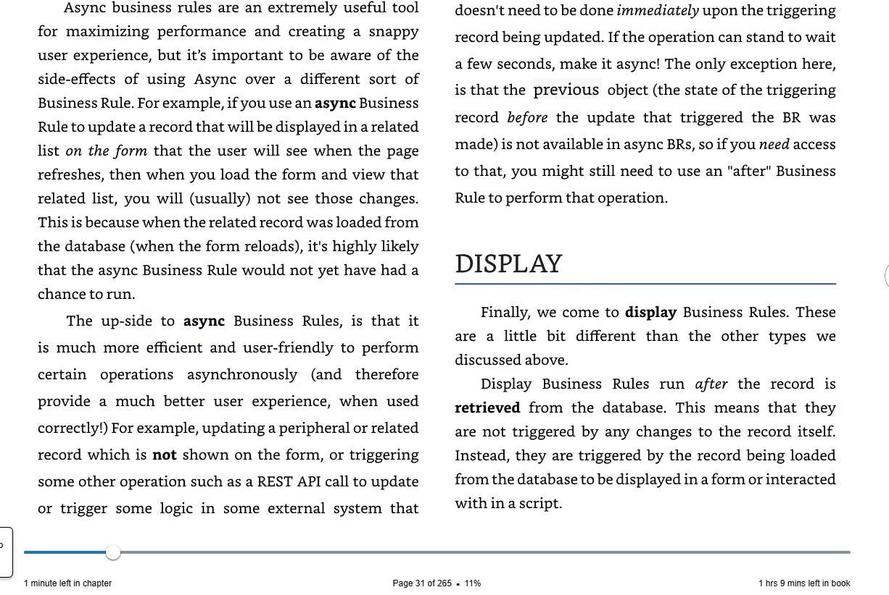
비동기 비즈니스 규칙은 성능을 극대화하고 업데이트되는 빠른 레코드를 생성하기 위해 트리거되는 즉시 수행할 필요가 없는 매우 유용한 도구입니다. 작업이 사용자 경험을 기다릴 수 있지만 몇 초 동안 비동기화된다는 점을 인식하는 것이 중요합니다! 여기에서 다른 종류에 대한 비동기 사용의 유일한 예외는 이전 개체가 트리거하는 비즈니스 규칙의 상태라는 것입니다. 예를 들어 BR을 트리거한 업데이트 전에 ar 비동기 비즈니스 레코드를 사용하는 경우 표시된 관련 항목에 있을 레코드를 업데이트하는 규칙은 비동기 BR에서 사용할 수 없으므로 액세스가 필요한 사용자 페이지가 새로 고쳐지는 시기를 양식에 나열한 다음 양식을 로드할 때 여전히 "이후" 비즈니스를 사용해야 할 수 있음을 확인하면 관련 목록은 일반적으로 표시되지 않습니다. 해당 작업을 수행하는 규칙 변경 이는 양식을 다시 로드할 때 관련 레코드가 데이터베이스에서 로드될 때 비동기 비즈니스 규칙이 아직 실행될 기회가 없었을 가능성이 높기 때문입니다. 마침내 우리는 비즈니스 규칙을 표시하게 되었습니다. 비동기 비즈니스 규칙의 장점은 다른 유형과 약간 다르다는 것입니다. 위에서 설명한 특정 작업을 비동기적으로 수행하는 것이 훨씬 더 효율적이고 사용자 친화적이므로 레코드 후에 실행되는 비즈니스 규칙 표시는 검색된 후 훨씬 더 나은 사용자 경험을 제공합니다. 데이터베이스 이것은 그들이 정확하다는 것을 의미합니다! 예를 들어, 주변 장치 또는 관련 업데이트는 표시되지 않은 레코드 자체에 대한 변경 사항에 의해 트리거되지 않습니다. 또는 트리거 대신 로드되는 레코드에 의해 트리거됩니다. 표시될 데이터베이스에서 업데이트하기 위한 REST API 호출과 같은 일부 다른 작업 양식에 표시되거나 상호 작용하거나 스크립트에서 I와 함께 일부 외부 시스템의 일부 로직 Page31 0f 265
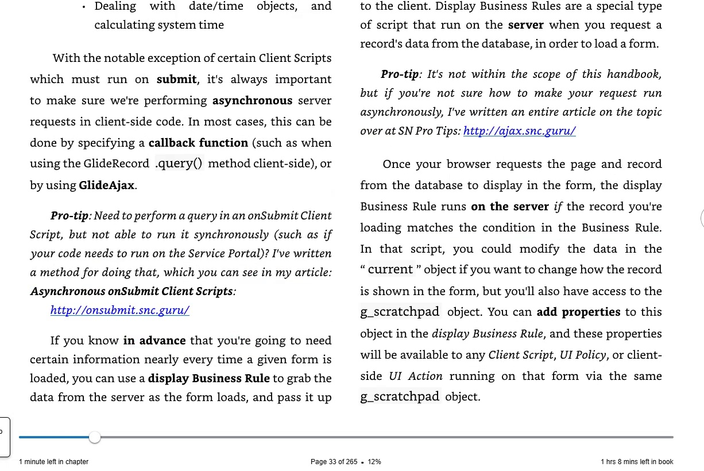
날짜/시간 객체 처리 및 [0 클라이언트 디스플레이 비즈니스 규칙은 양식을 로드하기 위해 데이터베이스에서 레코드의 데이터를 요청할 때 서버를 실행하는 스크립트의 시스템 시간을 계산하는 특별한 유형입니다. 특정 클라이언트 스크립트의 주목할만한 예외가 있습니다. 전문가 팁: 이 제출 핸드북은 항상 범위에 속하지 않지만 이 제출 핸드북을 실행해야 하는 것은 중요하지만 비동기식 서버인지 확인하기 위해 요청을 수행하는 방법을 잘 모르는 경우 내가 작성한 전체 기사 또는 주제 요청 클라이언트측 코드 대부분의 경우 SN에서 끝날 수 있습니다. Pro 팁: http://ajaxsncguru/ GlideRecord queryO 메서드를 사용할 때와 같은 콜백 함수를 지정하여 수행됨 client- -side 0r 브라우저가 데이터베이스에서 GlideAjax를 사용하여 페이지와 레코드를 요청하면 비즈니스 규칙이 실행되는 형식으로 표시됩니다. 아 레코드가 서버인 경우 프로 팁: onSubmit에서 쿼리를 수행해야 합니다 클라이언트 로딩이 비즈니스 규칙 스크립트의 조건과 일치하지만 불가능합니다. 해당 스크립트를 서비스 포털로 수정할 수 있는 경우와 같이 동기적으로 실행하려면 어떻게 해야 합니까? 코드에 데이터가 필요합니다. 이를 수행하기 위한 서면 방법은 다음과 같습니다. 변경하려는 경우 현재 개체 기록 비동기 onSubmit 클라이언트 스크립트: 양식이 표시되는 방식을 확인할 수 있지만 http://onsubmitsnc 전문가에도 액세스할 수 있습니다! g_scratchpad 개체 디스플레이 비즈니스 규칙에서 이 개체에 속성을 추가할 수 있으며 필요한 고급 속성을 알고 있는 경우 거의 양식이 로드될 때마다 모든 클라이언트 스크립트 UI 정책 정보에 사용할 수 있습니다. 또는 특정 클라이언트가 로드될 때마다 디스플레이 비즈니스 규칙 실행 중인 측면 UI 작업 양식이 로드될 때 서버에서 동일한 데이터를 통해 해당 양식을 가져오고 전달하는 데 사용할 수 있습니다. g_scratchpad 개체
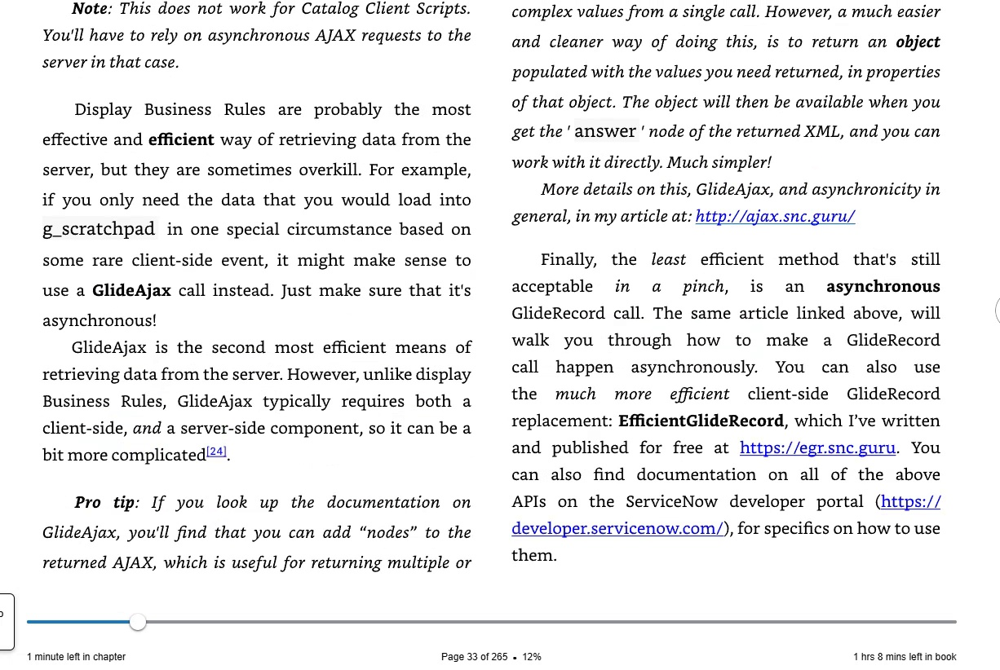
참고: 이것은 단일 호출의 카탈로그 클라이언트 스크립트 복잡한 값에는 작동하지 않습니다. 그러나 훨씬 더 쉬운 방법은 비동기식 AJAX 요청에 의존해야 하며 이 작업을 수행하는 더 깔끔한 방법은 '해당 객체에 대한 I 속성에서 반환해야 하는 값으로 채워진 객체 서버를 반환하는 것입니다. 그런 다음 디스플레이 비즈니스 규칙이 아마도 반환된 XML의 응답 노드를 얻는 것에서 가장 효과적일 때 객체를 사용할 수 있을 것입니다.' 그리고 데이터를 검색하는 방법은 직접 작업할 수 있습니다. 훨씬 간단합니다! 예를 들어 자세한 내용은 http://ajaxsncguru/ g_scratchpad의 내 문서에서 일반적으로 설명할 데이터만 필요한 경우 이 GlideAjax 및 비동기 로드에 대한 일부 드문 클라이언트 측 이벤트에 기반한 특별한 상황입니다. 마지막으로 Still GlideAjax 호출이 대신에 가장 덜 효율적인 방법이 될 수 있습니다. 사용 시 허용되는 핀치가 비동기 GlideRecord 호출인지 확인하세요. 위에 링크된 동일한 기사 비동기! GlideRecord를 만드는 것이 얼마나 효율적인지 안내해 드리겠습니다. GlideAjax는 디스플레이 호출 데이터를 검색하는 두 번째 방법입니다. 하지만 비동기식으로 발생합니다. 서버에서 Business Rules GlideAjax를 사용할 수도 있습니다. 훨씬 더 효율적인 클라이언트 측 GlideRecord는 일반적으로 교체가 필요합니다. EfficientGlideRecord는 내가 작성한 클라이언트 측 서버 측과 구성 요소이므로 조금 더 추가할 수 있으며 무료로 https:I /egrsncguru에 게시할 수 있습니다. complex24] 문서도 찾을 수 있습니다. 위의 모든 전문가 팁에 대해: 문서 API를 찾아보면 ServiceNow 개발자 Oh 포털 https:!! GlideAjax를 사용하면 반환된 AJAX를 사용하는 방법에 대한 자세한 내용을 위해 개발자 서비스에 "노드"를 추가할 수 있다는 것을 알 수 있습니다. 여러 용도에 유용합니다.
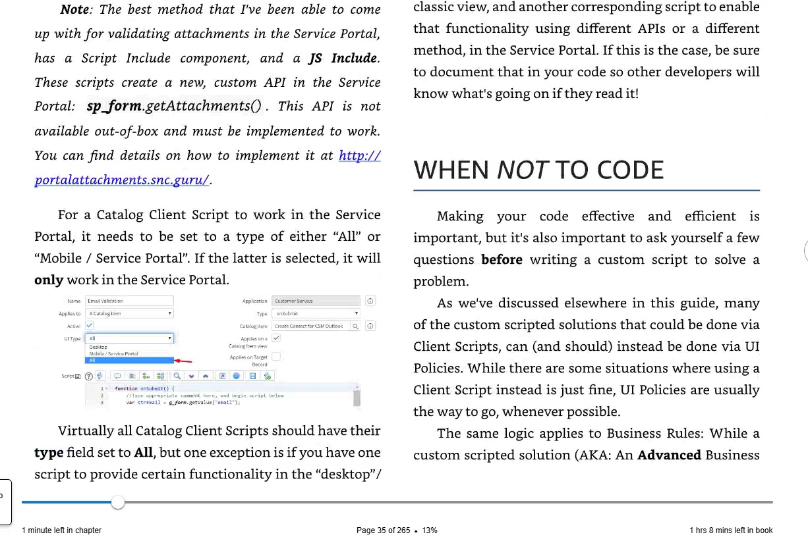
참고: 내가 할 수 있었던 가장 좋은 방법은 클래식 보기와 다른 해당 스크립트를 사용하여 다른 API를 사용하는 서비스의 첨부 파일에 대한 기능을 활성화하거나 다른 해당 스크립트를 활성화하는 것입니다. 서비스 포털에 스크립트 메서드가 있고 포함 JS 사례를 포함하는 경우 해당 구성 요소를 코드에 문서화해야 합니다. 따라서 다른 개발자는 서비스에서 새 사용자 정의 API를 생성하면 무슨 일이 일어나고 있는지 알 수 있습니다! Portal: sp_formgetAttachmentsO 이 API는 기본적으로 사용할 수 없으며 작동하려면 구현해야 합니다. 구현 방법에 대한 자세한 내용은 http:!/에서 찾을 수 있습니다. Portalattachments를 코딩하지 않을 때 snc gurul 서비스에서 작동하기 위한 카탈로그 클라이언트 스크립트의 경우 코드를 효과적이고 효율적으로 만드는 것은 Portal입니다. "모두" 유형으로 설정해야 합니다. 또는 중요하지만 몇 가지 "모바일 서비스 포털"을 선택하는 것도 중요합니다. 서비스 포털 문제의 작업만 해결하기 위해 사용자 정의 스크립트를 작성하기 전에 질문할 것입니다. Nane LmaiValidation Applicatian Cusoner Service 이 가이드의 다른 곳에서 논의한 대로 카탈로그 항목에 대한 많은 Applles를 수행할 수 있는 사용자 정의 스크립트 솔루션을 Carrogten에 제출하십시오. CrOTLC 콜라! LTpe Al Apples 채널을 통해 CSM CEILO를 찾으시나요? Gataog Irem vie' 클라이언트 스크립트는 자동차이며 대신 UI Icbils I SarMce Fora를 통해 수행되어야 합니다! Appie n TardeI GASOF? 정책 SriptE 으로 모도를 사용하는 상황이 있지만 기능!n GrSuEnitt? 대신 클라이언트 스크립트는 괜찮습니다. UI 정책은 일반적으로 I buripl 동도포 - StrEtA11 forwgetvaluel" Cdaa11'야F 가능할 때마다 가는 방법입니다. 사실상 모든 카탈로그 클라이언트 스크립트에는 동일한 논리가 비즈니스 규칙에 적용되어야 합니다. 유형 필드는 모두로 설정되지만 하나의 예외는 하나의 사용자 정의 스크립트 솔루션이 있는 경우입니다. AKA: 고급 비즈니스 스크립트 t0은 "데스크톱"에서 특정 기능을 제공합니다/
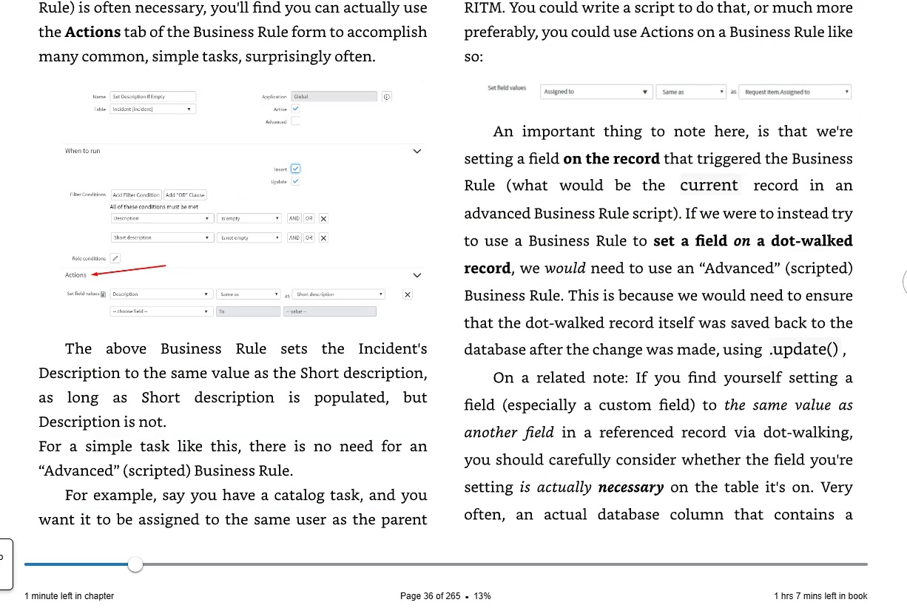
규칙은 종종 필요합니다. 자동차가 실제로 RITM을 사용한다는 것을 알게 될 것입니다. 그렇게 하는 스크립트를 작성할 수도 있습니다. 또는 비즈니스 규칙 양식 LE의 작업 탭을 사용하여 수행하는 것이 바람직합니다. 놀랍게도 많은 일반적인 간단한 작업과 같은 비즈니스 규칙에 대한 작업을 사용할 수 있습니다. SO: Sx 필드 valbot! Sos Daseriplion l 비어 있나요? pisi 더오바 할당됨 t0 요청 항목 Astighed tr AF Inti$++ Tlos Geuc! 여기서 주목해야 할 중요한 점은 필드 설정을 실행할 시기 01입니다! the: 비즈니스 FE무 규칙을 트리거한 레코드는 GirCc고인 광고 필터 조건 Ldd "Or" Calse의 현재 레코드가 될 것입니다. 이러한 모든 조건은 고급 비즈니스 규칙 스크립트를 충족해야 합니다. 만약 우리가 E[라면 대신 Lise 비즈니스 규칙에 대한 Short dr을 시도하여 도트워크 Folke 조건 레코드에 필드를 설정합니다. 우리는 "고급" 스크립트 Action Sut Field를 사용해야 합니다! walus DusCriptio Shurt drpsippic 비즈니스 규칙 이 1S는 점으로 구분된 레코드 자체가 다시 저장되었는지 확인해야 하기 때문입니다. 위의 비즈니스 규칙은 변경 후 사건의 데이터베이스를 updateO 설명을 사용하여 간단한 설명과 동일한 값으로 설정합니다. 관련 참고 사항: 간단한 설명이 채워져 있는 한 a를 설정했지만 필드, 특히 사용자 정의 필드를 정상적인 값으로 설정한 경우 A5 설명은 참조 레코드의 다른 필드가 아닙니다. 도트워킹을 통해 이와 같은 간단한 작업의 경우 "고급" 스크립트 비즈니스 규칙 카탈로그 설정인 필드가 실제로 필요한지 신중하게 고려해야 할 필요가 없습니다. 테이블에는 매우 켜져 있습니다. 예를 들어 작업이 있고 종종 실제 데이터베이스에 할당되었다고 가정해 보겠습니다. 이를 상위 열로 원합니다. 동일한 사용자와 1시간 남음 포함
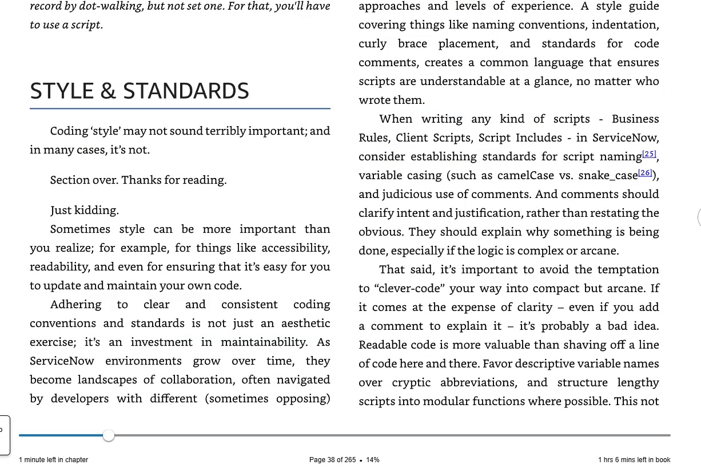
접근 방식과 경험 수준을 갖추기 위해 도트워킹으로 기록하지만 경험 수준은 있습니다 명명 규칙 들여쓰기 중괄호 배치 및 코드 주석에 대한 표준과 같은 사항을 다루는 스크립트를 사용하기 위한 스타일 가이드 스크립트를 한눈에 이해할 수 있도록 하는 CommOn 언어를 생성합니다 스타일 및 누가 작성했는지 여부 모든 종류의 스크립트를 작성할 때 - 비즈니스 코딩 '스타일'은 별로 중요하지 않게 들릴 수 있습니다. 및 규칙 클라이언트 스크립트 ServiceNow에 포함된 스크립트는 대부분의 경우 스크립트 이름 지정에 대한 표준 설정을 고려하지 않습니다.25] camelCase Vs snake _case281과 같은 변수 케이싱 읽기 섹션에 대한 감사 및 현명한 사용 댓글 및 댓글은 농담으로 다시 설명하는 것보다 의도와 정당성을 명확히 해야 합니다. 때로는 스타일이 명백한 것보다 더 중요할 수 있습니다. 그들은 무언가가 실현되는 이유를 설명해야 합니다. 예를 들어, 특히 논리가 복잡한 경우 수행한 접근성 또는 난해한 가독성 및 심지어 쉬운지 확인하기 위한 것입니다. 즉, 자신의 코드를 업데이트하고 유지하여 컴팩트하지만 난해한 방식으로 "영리한 코드"를 작성하려는 유혹을 피하는 것이 중요하다고 말했습니다. 명확하고 일관된 코딩을 고수하는 경우 명확성을 희생해야 합니다. 규칙과 표준을 추가하더라도 설명하기 위한 미적인 의견은 아닙니다. 아마도 나쁜 아이디어 연습일 것입니다. 유지 관리에 대한 투자입니다. 읽을 수 있는 코드가 오프라인을 면도하는 것보다 더 가치 있기 때문에 ServiceNow 환경이 성장합니다. 시간이 지남에 따라 여기저기서 코드가 선호됩니다. 설명적인 변수 이름이 풍경이 됩니다. 공동 작업이 자주 탐색됩니다. 개발자가 때때로 반대되는 스크립트를 사용하여 가능한 경우 모듈식 기능으로 긴 암호 약어 및 구조를 사용합니다. 이것은 그렇지 않습니다.
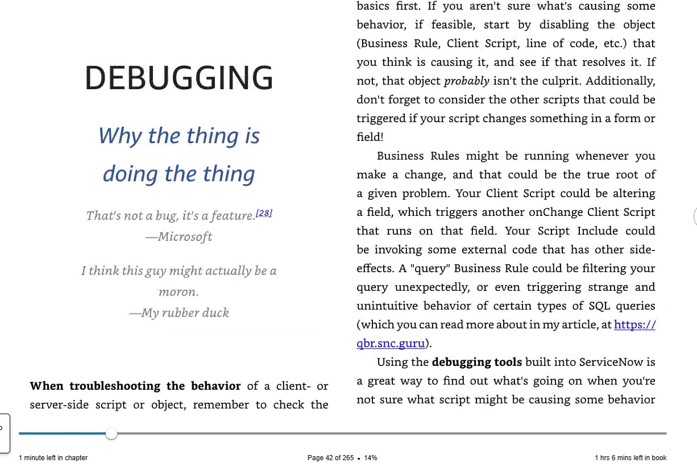
기본 사항 먼저 원인이 무엇인지 확실하지 않은 경우 가능한 경우 일부 동작은 개체 비즈니스 규칙 클라이언트를 비활성화하여 시작합니다. 개체의 원인이라고 생각되는 스크립트 코드 줄을 확인하고 문제가 해결되는지 확인하십시오. 디버그하지 않으면 해당 개체가 아마도 범인이 아닐 수도 있습니다. 추가적으로 스크립트가 0r 형식에서 무언가를 변경하는 경우 트리거될 수 있는 다른 스크립트를 고려하는 것을 잊지 마십시오. 변경 작업을 수행할 때마다 비즈니스 규칙이 실행될 수 있으며 이는 주어진 문제의 실제 루트가 될 수 있습니다. 클라이언트 스크립트가 변경될 수 있습니다. 버그입니다. [28] 기능이 아닌 다른 onChange를 트리거하는 필드입니다. 해당 필드에서 실행되는 클라이언트 스크립트 스크립트 포함은 --Microsoft가 다른 측면이 있는 일부 외부 코드를 호출할 수 있습니다. 제 생각에는 이것이 실제로 효과일 수 있다고 생각합니다. "쿼리" 비즈니스 규칙이 쿼리를 예기치 않게 방해할 수 있거나 심지어 이상한 멍청하고 비직관적인 동작을 유발할 수도 있습니다. 특정 유형의 SOL 오리 쿼리 -- https://qbrsncguru의 내 기사에서 자세히 읽을 수 있는 내 고무 ServiceNow 1S에 내장된 디버깅 도구 사용 클라이언트 문제 해결 시 - 무슨 일이 일어나고 있는지 알아내는 좋은 방법 동작이 있을 때 - 또는 서버측 개체가 아닌 경우 어떤 스크립트가 일부 동작 스크립트를 유발할 수 있는지 확인하십시오.
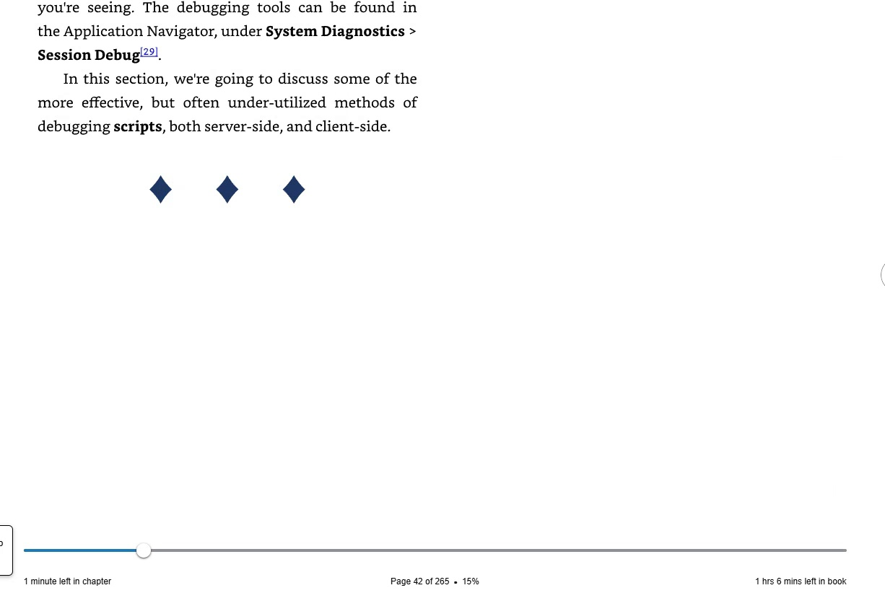
디버깅 도구는 시스템 진단 세션 디버그 아래의 응용 프로그램 탐색기에서 찾을 수 있습니다.29 이 섹션에서는 서버 측과 클라이언트 측 모두에서 스크립트를 디버깅하는 데 있어 더 효과적이지만 자주 활용되지 않는 방법에 대해 논의하겠습니다.
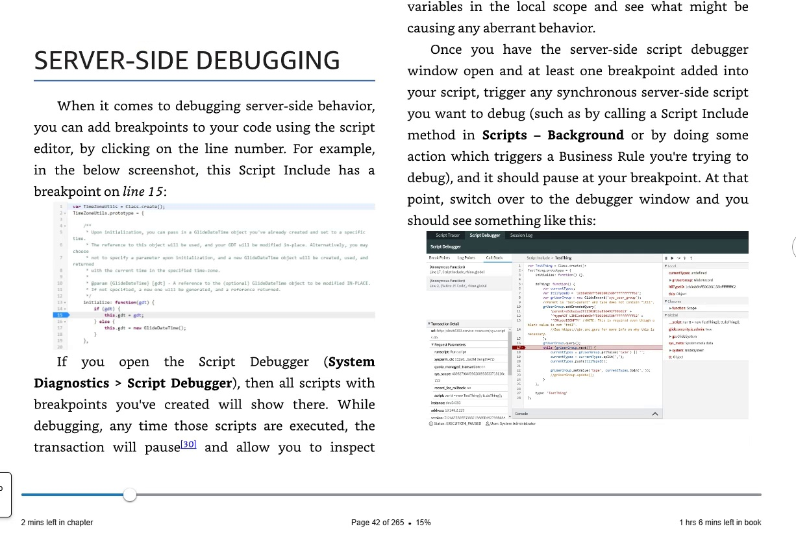
서버측 스크립트 디버거 서버측 디버깅 창이 열리면 서버측 디버깅 창이 열리면 동기식 서버측 스크립트를 트리거하는 하나의 중단점을 실행합니다. 서버측 동작을 디버깅할 때 스크립트 포함을 호출하여 디버그하고 싶을 때 스크립트 - 배경의 스크립트 메소드를 사용하여 코드에 중단점을 추가할 수 있습니다. 또는 줄 번호를 클릭하여 일부 편집기를 수행할 수 있습니다. 예를 들어 작업은 다음과 같습니다. 아래 스크린샷에서 시도하고 있는 비즈니스 규칙을 트리거합니다. 이 스크립트 포함에는 디버그가 있으며 중단점에서 일시 중지되어야 합니다. 15행: 지점 전환 디버거 창으로 이동하면 다음과 같은 내용이 표시됩니다. 내주 101511d0DT분T 56드로 You'v a!rdady Cr92학0년 And f9t 50 a pes1V1 Script Trod ScrpL DcLUFIE OnL FafarANT! 남111 F1삼 1n-pLAC닭 Altafhatively 1o 5p무G1Fy AfTLA152리E1에 G11dSDHtATIT ObfOdt 나주무d: K!/14d 4595t: 돈주크r차 G11doD념tT사 ObeLt C0 Do ROG1FISE I-PLACE LnyF1Ad 1rit2112작 Tunetiongdt LIdF 4r FE EifdsataTHH[ 스크립트 디버거 시스템 진단 스크립트 디버거를 열면 생성한 중단점이 있는 모든 스크립트가 디버깅하는 동안 거기에 표시됩니다. 스크립트가 실행되면 트랜잭션이 일시 중지되고[30] 검사할 수 있습니다.
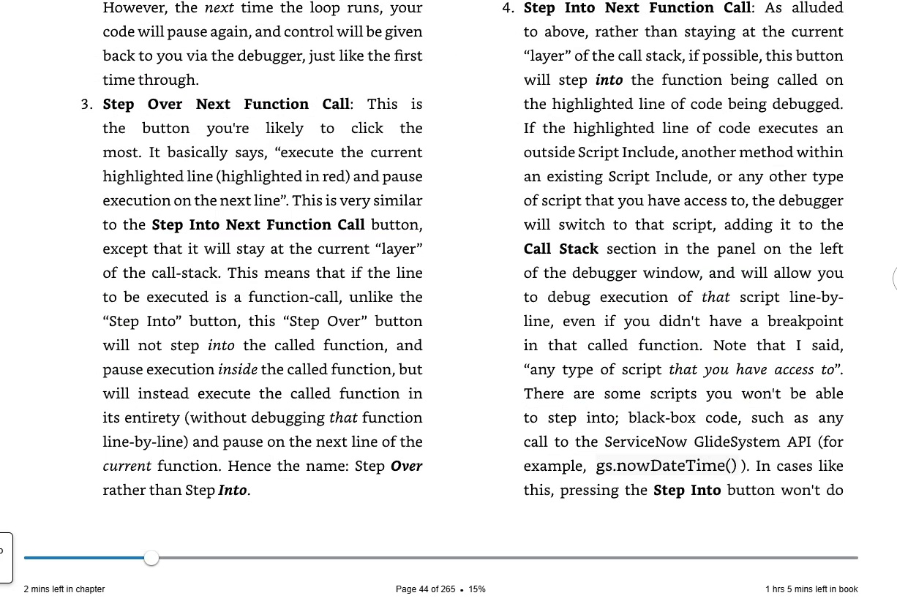
그러나 다음 번에 루프가 다음 함수 호출로 실행될 때 암시된 코드는 다시 일시 중지되고 가능하면 통화 스택의 첫 번째 "계층"과 마찬가지로 디버거를 통해 현재 상태로 돌아가는 대신 위의 제어가 제공됩니다. 이 버튼을 누르면 호출되는 함수가 호출되는 함수로 들어갑니다. On Step Over Next 함수 호출: 이것은 디버깅되는 강조 표시된 코드 줄입니다. 강조 표시된 코드 줄이 가장 많이 실행되는 경우 기본적으로 '현재 외부 스크립트 실행'이라고 말합니다. 다른 메서드를 포함합니다. 빨간색으로 강조 표시된 강조 표시된 줄 내에서 기존 스크립트 포함 또는 다른 유형의 실행을 일시 중지합니다. 다음 줄에 " 이것은 디버거에 액세스할 수 있는 스크립트와 매우 유사하여 Step Into Next Function Call 버튼으로 해당 스크립트를 추가합니다. 단, 호출 스택 왼쪽 패널의 현재 "레이어" 호출 스택 섹션에 머무른다는 점만 다릅니다. 이는 디버거 창의 줄이 실행되도록 허용하는 경우 해당 스크립트의 디버그 실행과 달리 함수 호출이라는 의미입니다. Into" 버튼에 중단점이 없더라도 이 "Step Over" 버튼 라인은 호출된 함수 및 해당 호출된 함수로 들어가지 않습니다. 호출된 함수 내에서 실행을 일시 중지한다고 말했지만 "액세스할 수 있는 모든 유형의 스크립트"는 대신 호출된 함수를 실행합니다. 해당 함수를 디버깅하지 않고는 전체를 실행할 수 없는 일부 스크립트가 있습니다. 라인별 및 일시 중지와 같은 블랙박스 코드 현재 함수에 대한 ServiceNow GlideSystem API 호출의 다음 줄에 있습니다. 이름: Step Over example gsnowDateTimeO Step Into가 아닌 Step Into 버튼을 눌러도 작동하지 않는 경우
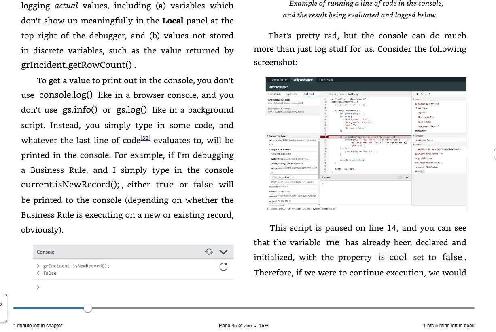
예를 들어 변수를 포함한 실제 값 로깅 콘솔에서 한 줄의 코드를 실행하면 평가되는 결과가 아래에 기록되어 디버거 오른쪽 상단의 로컬 패널에 의미 있게 표시되지 않고 값이 저장되지 않습니다. 꽤 멋지지만 콘솔은 단순히 로그를 기록하는 것 이상의 값으로 반환된 값과 같은 개별 변수에서 많은 작업을 수행할 수 있습니다. 다음 grIncident getRowCountO 스크린샷을 고려하세요. 브라우저 콘솔과 T'Sh PeinL +$e는 백그라운드 스크립트에서와 같이 gsinfoo 또는 gslogO를 사용하지 않습니다. 대신 간단히 일부 코드를 입력하고 code32의 첫 번째 줄]이 평가하는 모든 것이 콘솔에 인쇄됩니다. 예를 들어 ncRi1또 16디부S 비즈니스 규칙을 디버깅하고 콘솔에 currentisNewRecordO;를 입력하면 됩니다. true 또는 false 중 하나입니다. Thhid Hae4 1??에 따라 rE 0341고가 콘솔에 인쇄됩니까? 기존 MS! 에에컷! falsed 비즈니스 규칙 1이 새 0r 레코드를 실행 중입니다. 이 스크립트는 분명히 O1 라인을 일시 중지했으며 me 변수가 이미 선언되었고 콘솔이 is_cool 속성이 false로 설정된 상태로 초기화되었음을 알 수 있습니다. BrIncident IsNewRecordC: [ False 따라서 f 우리는 실행을 계속해야 했습니다.
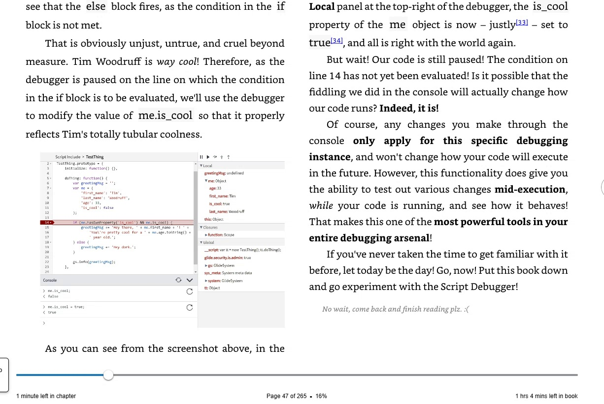
디버거의 오른쪽 상단에 있는 if Local 패널의 조건으로 else 블록 fres를 확인하세요. me 개체의 Cool 블록이 충족되지 않습니다. 1s noW = justly33] | 그것은 확실히 부당하고 사실이 아니며 잔인합니다34] 그리고 세상 모든 것이 다시 한 번 옳습니다. Tim Woodruff의 방식을 측정해 보세요. 멋지네요! 그러므로 But Wait! 우리 코드는 여전히 일시중지되어 있습니다! 디버거에서 어떤 라인이 아직 평가되지 않았는지 조건입니다! [S 일시 중지됨 조건이 조작될 가능성이 있습니다. 우리가 했습니다.] 콘솔은 실제로 if 블록에서 평가되는 디버거를 어떻게 변경할 것입니까? 코드 실행을 사용할 것입니까? 실제로 그렇습니다! meis의 값을 수정하여 적절하게 수정합니다. 물론 Tim의 완전 관형 쿨함 콘솔을 통해 변경한 내용은 이 특정 디버깅 Seript Indude TestThing 인스턴스에만 적용되며 코드가 TestThirg-prototype {} FLEca GrcLingag를 실행하는 방식은 나중에 원하지 않습니다. 그러나 이 기능은 당신에게 oT V me: Ojec을 제공합니다. 해용안:33 실행 중에 다양한 변경 사항을 테스트하는 기능 1a5t_nT실 OODFUF! irst_name: Tim 3: 코드가 실행되는 동안 이것이 사실인지 확인하고 어떻게 작동하는지 확인하세요! 5_[001' Last_namc: Wcodruff thi Objos! 따라서 이 도구는 귀하의 ReCt1n무VEE+-'HGy VCloses r9tt 0191fO 고PtoEtr1neL14 - functione Sxope 전체 디버깅 Globa에서 가장 강력한 도구 중 하나가 됩니다! 병기고! 6150[ 스크립트: vur t-E new TesThingl; tduTfingD 1t Es InfolgrpetireHse} Slidescurityisadmin:ru Igdo GlideSyste에 익숙해지는 데 시간을 투자한 적이 없다면 오늘이 바로 그날이 되도록 하십시오! 지금 가세요! 이 책 SysLereawon CorbDl F Syslem: GideSysiemi를 내려놓고 스크립트 디버거를 시험해 보세요! 10 1s_C001: Fa15rim T!f:_CoO1 - truE No wait 돌아와서 끝까지 읽어주세요 plz: 위 스크린샷에서 볼 수 있듯이 1분 남았습니다.
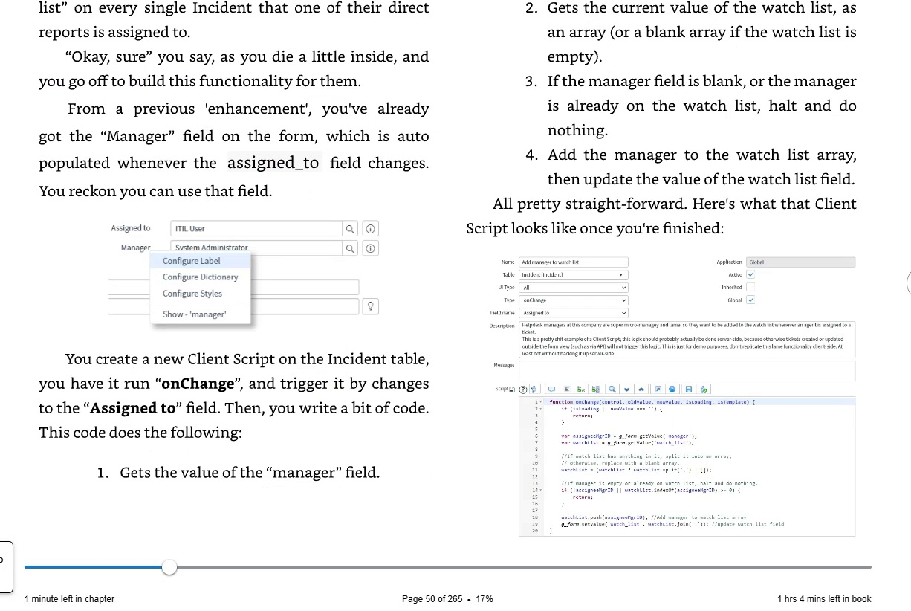
목록" 모든 단일 사건에 대해 직접적으로 감시 목록의 현재 값을 배열에 할당된 보고서 1로 가져옵니다. 감시 목록이 "좋아요. 물론이죠"라고 말할 때 빈 배열입니다. 당신은 죽을 때 말합니까? 작은 내부와 빈 당신은 그들을 위해 이 기능을 구축하기 위해 떠납니다. 관리자 펠디스가 비어 있거나 이전 '향상'에서 관리자가 이미 감시 목록이 정지되고 필드를 수행하는 경우 아무것도 없습니다. 자동인 양식에서 감시 목록에 관리자를 할당된 필드 변경 사항에 추가합니다. 배열 감시 목록 필드의 값을 업데이트할 때마다 채워집니다. 자동차! 해당 필드를 사용하십시오. 매우 간단합니다. TIL USe에 할당된 스크립트는 다음과 같습니다. 완료되면 관리자 Svstem 관리자 레이블 구성 HaIt 관리자 추가 io waich Ict Applictio GohH 구성 사전 TMA 사건 [사건] Acthy 스타일 구성 니Tp nharicd Hoha 쇼 관리! E AT Assdt 2SurIpper Hury-Hsdgey 그리고! IHTe s0 LIEy NLrl o e quud o Uhe walc IE whtru all aieuL d EtiFd to d This ha pucty Shit tam 당신은 사건 테이블에서 새로운 클라이언트 스크립트를 생성합니다 Ost not witho! "onChange"를 실행하고 SrpEomo를 'Assigned to' 필드로 변경하여 트리거합니다. 그런 다음 약간의 코드 LrU1-LJVu1uV를 작성합니다. 이 코드는 다음을 수행합니다: BF 551BnETID -BLfOr5BEVsLuE['HBn!REr' Ht intd an drrdy! "관리자" 필드의 값을 가져옵니다. I thurnia indexdffessigheeierIdy -- oy t' TetuI'n! Wupdsts 시계 린트 핀드
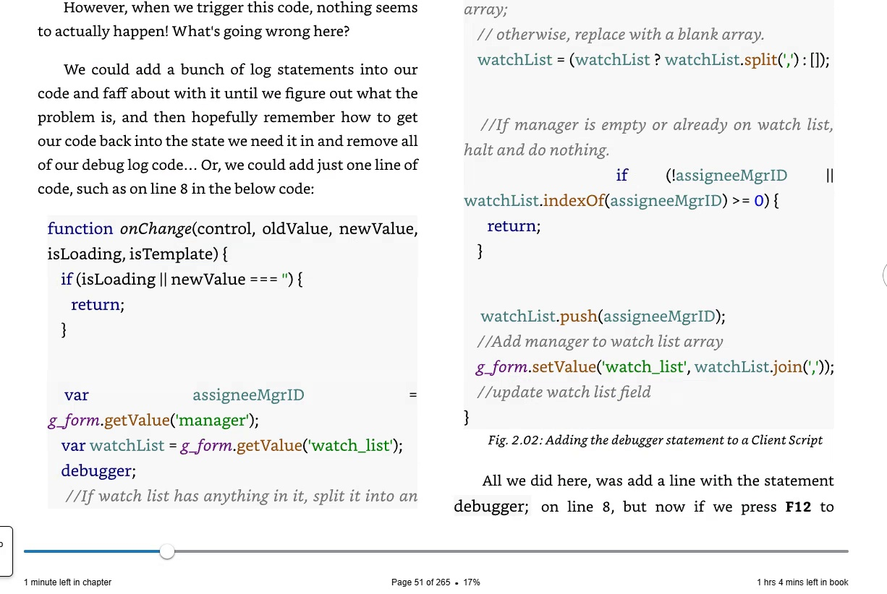
그러나 이 코드를 실행하면 아무것도 배열된 것처럼 보이지 않습니다. 실제로 일어날 것입니다! 여기서 무슨 문제가 발생하고 있나요? // 그렇지 않으면 빈 배열로 대체 watchList = watchList watchListsplitC5:[D; 문제가 무엇인지 알아낼 때까지 코드에 1og 명령문을 추가하고 문제가 무엇인지 알아낼 때까지 1t에 대해 faff할 수 있습니다. ///f 관리자가 비어 있습니다. 0r은 이미 감시 목록에 있습니다. 코드를 다시 상태로 되돌립니다. 필요하고 모든 정지를 제거하고 디버그 로그 코드를 아무 작업도 수행하지 않습니다. 또는 Wwe는 아래 줄과 같은 JsigneeMgrID 코드 한 줄만 추가할 수도 있습니다. 코드: watchListindexOf 할당량 MgrID >= ]{ 함수 onChangecontrol oldValue 새로운 값 반환; isLoading isTemplate{ if GisLoading newValue ---"{ return; watchListpushsigneeMgrID; [ 감시 목록 배열에 관리자 추가 8_ formsetValueC'watch list' watchListjoinC>: Var AssigneeMgrID 감시 목록 필드 업데이트 8-formg getValueC'manager'; 8-form getValue'watch list; Fig 202: 클라이언트에 watchList 디버거 문 추가 Var Script = debugger; 여기서 한 모든 작업 //f watch list가 포함된 내용이 포함된 줄을 온라인으로 분할했지만 이제 F12를 누르면 다음과 같이 됩니다.
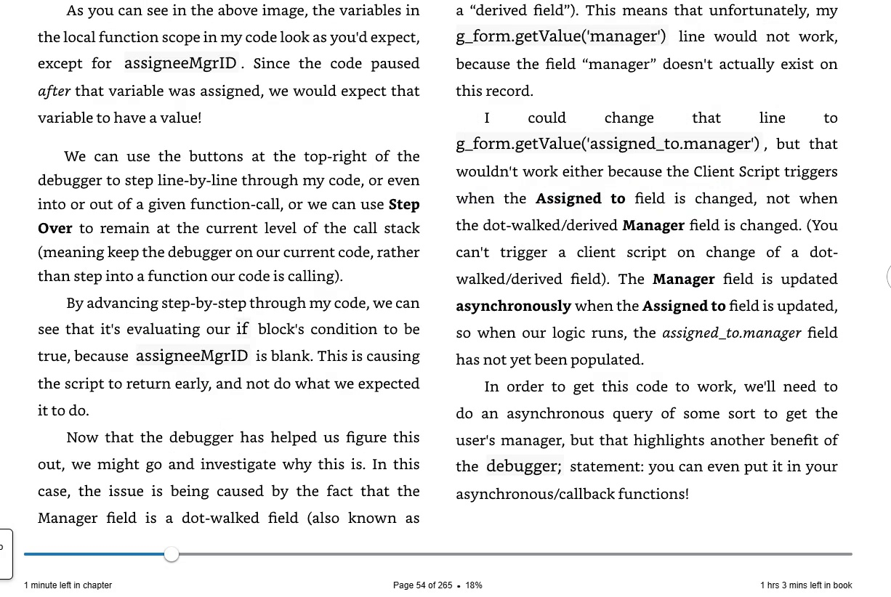
위 이미지에서 볼 수 있듯이 "파생 필드"의 변수는 불행히도 내 코드의 ] 로컬 함수 범위가 g_form getValueC'manager를 예상한 대로 보인다는 것을 의미합니다. AssigneeMgrID를 제외하고는 행이 작동하지 않습니다. 필드 "관리자"가 실제로 존재하지 않기 때문에 코드가 일시 중지되었으므로 해당 변수가 할당된 후에는 이 레코드 변수에 값이 있을 것으로 예상합니다! 해당 줄을 관리자에게 할당된 g_formgetValue' '로 변경할 수 있나요? 하지만 오른쪽 상단에 있는 버튼을 사용할 수는 없습니다. 클라이언트 디버거 스크립트가 내 코드를 한 줄씩 트리거하기 때문에 작동하지 않습니다. 또는 할당 대상 필드가 지정된 단계로 변경될 때 함수 호출을 할 수도 있습니다. 0r out 0r이 아닌 호출 스택의 현재 수준을 유지할 수 있습니다. 점 이동/파생된 관리자 필드 1이 변경된 경우 디버거를 유지한다는 의미입니다. OH 현재 코드는 클라이언트 스크립트 변경을 트리거할 수 없습니다. 우리의 코드는 walk/derived 필드를 호출하고 있습니다. Manager 필드는 내 코드를 단계별로 진행하여 업데이트됩니다. Assigned 필드가 업데이트될 때 비동기적으로 if 블록의 조건을 평가하고 있음을 확인할 수 있습니다. 그래서 우리의 논리가 할당된 tomanager 필드를 실행할 때 할당된 tomanager 필드가 true로 실행됩니다. 할당된 MgrID가 비어 있기 때문입니다. 이 1의 원인은 아직 채워지지 않았습니다. 스크립트가 일찍 반환되고 예상한 대로 수행되지 않습니다. 이 코드가 작동하도록 하겠습니다. 이제 디버거가 이 사용자의 관리자를 파악하는 데 도움이 되었지만 이는 Out의 또 다른 이점을 강조하므로 이것이 디버거에 있는 이유를 조사할 수 있습니다. 문: 비동기/콜백 기능으로 인해 문제가 발생하는 경우에 이를 넣을 수도 있습니다! 관리자 필드는 점으로 표시된 필드라고도 합니다.
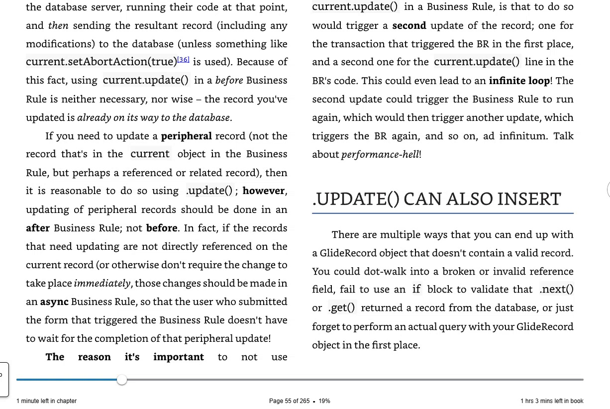
해당 시점에 코드를 실행하는 데이터베이스 서버 currentupdateO in ? 비즈니스 규칙 1은 그렇게 한 다음 결과 레코드를 전송하는 것입니다. 모든 항목을 제외하면 레코드의 두 번째 업데이트가 트리거됩니다. 처음에 BR을 트리거한 트랜잭션과 같은 것이 현재 setAbortActiontrue36] 때문에 사용되지 않는 한 데이터베이스 수정을 위한 하나와 비즈니스 BR 코드 앞에 currentupdateO를 사용하는 이 사실에서 현재 updateO 라인에 대한 두 번째 하나는 무한 루프로 이어질 수도 있습니다! 규칙 1은 필요하지도 않고 두 번째 업데이트가 실행되도록 비즈니스 규칙을 실행할 수 있는 레코드도 이미 데이터베이스에 다시 실행되어 또 다른 업데이트를 트리거할 수 있습니다. 주변 레코드를 업데이트해야 하는 경우 BR을 다시 트리거하지 않고 계속해서 비즈니스의 현재 개체에 있는 레코드에 대해 성능 지옥에 대해 무한히 이야기합니다! 규칙이지만 참조되거나 관련 레코드를 수행하는 것이 합리적입니다. 따라서 updateO를 사용하지만 UPDATEO는 또한 주변 레코드의 삽입 업데이트를 비즈니스 규칙 이후에 수행해야 합니다. 실제로 레코드가 업데이트가 필요한 여러 가지 방법이 있습니다. 유효한 레코드를 포함하지 않는 GlideRecord 개체에서 현재 레코드 또는 변경이 필요하지 않습니다. 깨진 0r 잘못된 참조로 도트 워크가 즉시 발생할 수 있습니다. 해당 변경 사항은 필드에서 수행되어야 하며 비동기 비즈니스 규칙을 확인하기 위해 F 블록을 LSE해야 합니다. 그러면 O geto를 제출한 사용자가 데이터베이스에서 레코드를 반환하거나 비즈니스 규칙을 트리거한 양식일 뿐입니다. 주변 장치 업데이트가 완료될 때까지 기다리기 위해 GlideRecord로 실제 쿼리를 수행하는 것을 잊지 마세요! 애초에 객체를 사용하지 않는 것이 중요한 이유
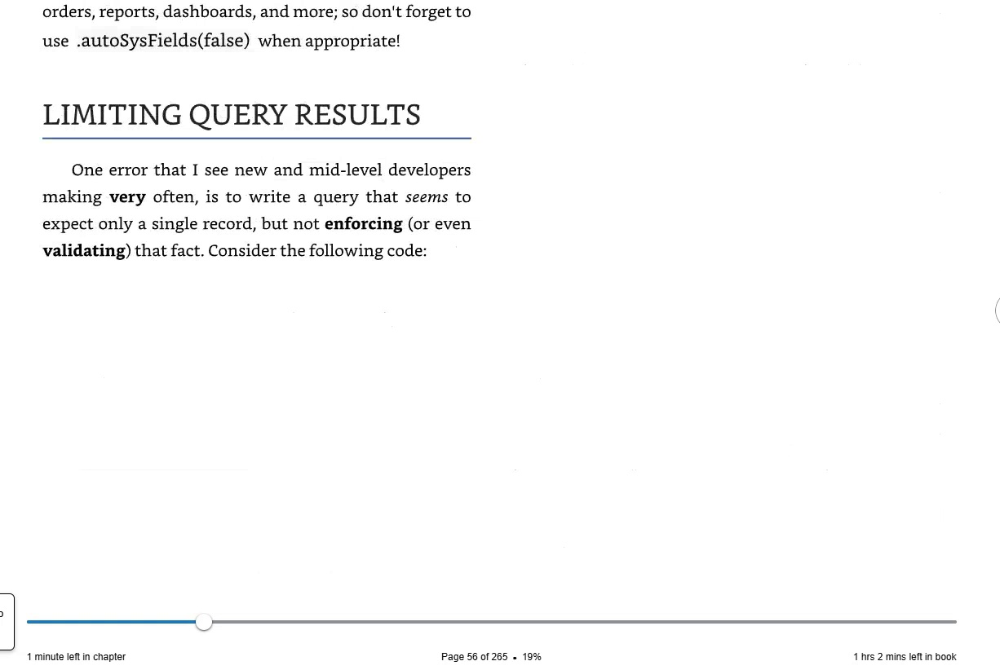
주문 보고서 대시보드 등 따라서 적절한 경우 autoSysFieldsfalse를 사용하는 것을 잊지 마세요! 쿼리 결과 제한 신규 및 중급 개발자가 볼 수 있는 오류 중 하나 | 매우 자주 만드는 것은 단일 레코드만 예상하는 것처럼 보이지만 Cor를 적용하지 않고 해당 사실을 검증하는 쿼리를 작성하는 것입니다. 다음 코드를 고려하십시오.
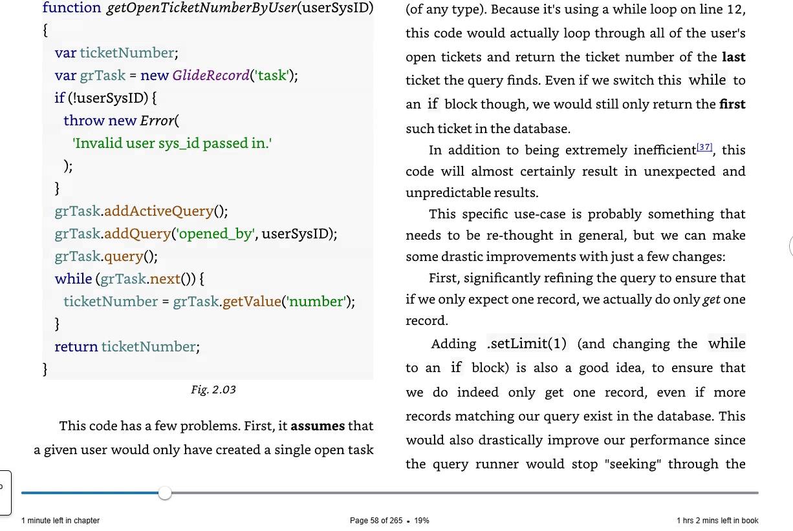
모든 유형의 getOpenTicketNumberByUseruserSysID 함수 라인에서 while 루프를 사용하기 때문에 이 코드는 실제로 사용자의 모든 Var ticketNumber를 통해 루프합니다. 티켓을 열고 마지막 Var grTask new GlideRecord' '작업의 티켓 번호를 반환합니다. 쿼리가 찾는 티켓 비록 우리가 이것을 if CuserSysID{ if 블록으로 전환하더라도 우리는 여전히 첫 번째 던진 새 오류만 데이터베이스에 전달했습니다. '잘못된 사용자 sys_id가 전달되었습니다. 게다가 이것은 극도로 비효율적입니다37; 코드는 예상치 못한 예측할 수 없는 결과를 초래할 것이 거의 확실합니다. grTaskaddActiveQueryO; 이 특정 사용 사례는 아마도 grTaskaddQuery<' 'opened _by' userSysID를 일반적으로 다시 생각해야 할 것이지만 grTaskqueryO를 만들 수 있습니다. 몇 가지 변경만으로 대폭 개선되었습니다. while grTasknextO{ 먼저 ticketNumber grTaskgetValueC' 'number'; 하나의 레코드만 기대한다면 우리는 실제로 단지 하나의 레코드만 얻습니다. ticketNumber; return setLimit1을 추가하고 while을 if 블록으로 변경하는 것도 그림을 보장하는 좋은 아이디어입니다. 쿼리와 일치하는 레코드가 더 많이 데이터베이스에 존재하더라도 실제로 하나의 레코드만 얻습니다. 이 코드에는 ? 문제 먼저 특정 사용자가 단일 Open 작업만 생성했기 때문에 쿼리 실행기가 "검색"을 중지하므로 성능이 크게 향상될 것이라고 가정합니다.
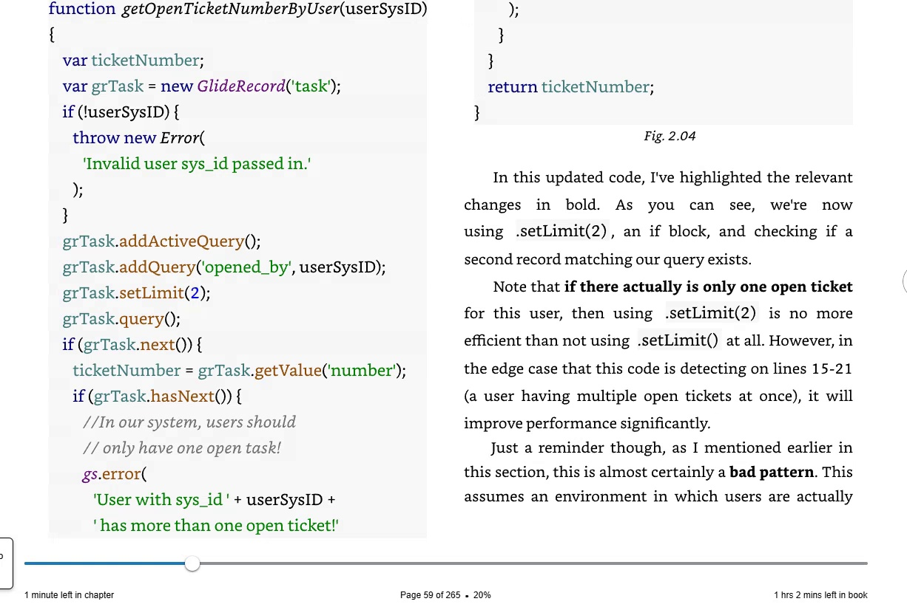
번역 텍스트를 구성 중입니다.
function getOpenTicketNumberByUseruserSysID ; Var ticketNumber; var grTask new GlideRecord' 'task'; return ticketNumber; if QuserSysID { throw new Error Fig 'Invalid user sys_id passed in In this updated code I've highlighted the relevant ; changes in bold As you Can see we're noW using setLimit2 an if block grTaskaddActiveQueryO; and checking if a second record matching grTaskaddQueryC' 'opened _by' userSysID; Our query exists Note that if there grTasksetLimit2; actually is only One Open ticket for this user then using setLimit2 grTaskqueryO; is no more ifgrTasknextO{ efficient than not using setLimitO at all However in ticketNumber grTask getValueC'number'; the edge Case that this code is detecting On lines 15-21 if grTaskhasNextO{ a user having multiple Open tickets at Once it Will /In Our system users should improve performance significantly // only have one open task! Just a reminder though as mentioned earlier in gserror this section this is almost certainly a bad pattern This 'User With sys id + userSysID assumes an environment in which users are actually 'has more than One Open ticket!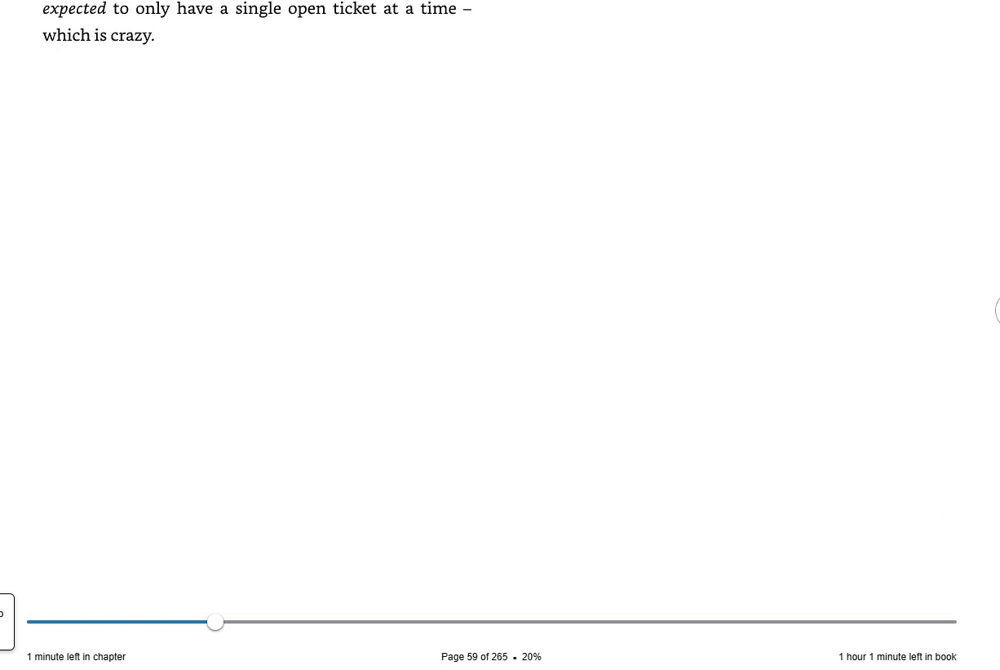
미친듯이 한 번에 하나의 오픈 티켓만 가질 것으로 예상됩니다.
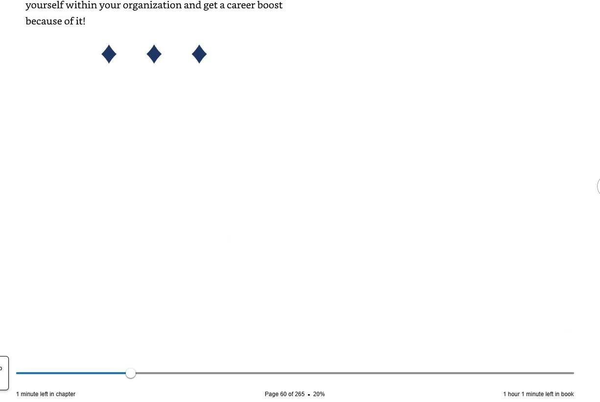
조직 내에서 자신을 F로 만들고 그로 인해 경력 향상을 얻으세요!
그룹 또는 각 단어의 첫 글자가 있는 '' 특정 우선순위 "제목 사례"로 설정되는 레코드 데이터 조회 테이블을 만들 때 대문자로 시작하는 것도 나쁘지 않습니다. 물론 두문자어는 완전해야 합니까? u로 테이블 이름을 시작할 수 있습니다. 시스템 정책 > 규칙에서 대문자로 표시된 새 데이터 조회 정의를 생성할 수 있습니다. 애플리케이션 탐색기의 데이터 조회 정의 모듈 필드 이름 및 레이블 참고: 특정 비즈니스를 자동으로 적용하려면 일반 이름은 레이블과 논리를 반영해야 합니다. 사용자 정의 데이터 조회 테이블은 데이터 조회 규칙[dl matcher] 테이블을 확장해야 합니다. 반대로, Matcher라는 필드가 있는 경우 비즈니스에는 일치 이름이 아니어야 한다는 근거가 필요합니다. "u 조회 및 기록을 활성화합니다. 데이터 지원에 대한 _string 3" 또는 "u_ncc_ad 문자열" 또는 이 "u 버스 jus"를 활성화하기 위한 Jess에서 허용할 수 없는 테이블도 마찬가지입니다. 유사하게 다대다 테이블은 일반적으로 어떤 이유에서 Gin에 도달하고 싶은 경우 u_m2m으로 시작하는 이름을 가집니다. 이러한 이름 지정은 다른 팀 구성원에게 조언을 위한 설계자입니다. 규칙은 일반 테이블보다 덜 친숙합니다. 일반적으로 이름을 일치시키는 것이 합리적이지만 이를 만드는 데 도움이 됩니다. 작업할 때 지우기 사례: 특정 유틸리티 기능을 제공하는 테이블에 대한 u_business_justification 또한 예제를 포함할 필요가 없다는 점을 기억하십시오. d_matcher_incident_priority를 사용하면 필드에서 테이블 이름을 명확하게 할 수 있습니다. 레이블 또는 이름 예를 들어 유틸리티 테이블을 다루는 반면 번호 필드 이름 지정 사건 테이블에서는 사건과 같은 이름이 지정되지 않습니다. _priority는 훨씬 적습니다. 숫자 이는 사건이라는 것이 분명하기 때문에 1입니다. 사례의 경우: 테이블 레이블은 사건 테이블에 있다는 점을 고려하여 항상 숫자로 표시되어야 합니다. 1시간 분 남았다면
테이블 레이블이 "제목 케이스"38]에 있어야 함을 나타내는 다른 테이블 이름에 대한 참조가 있었습니다. 필드 레이블은 문장 케이스"[39]에 있어야 합니다. 필드 레이블은 문장 케이스"[39]에 있어야 합니다. 필드 레이블은 첫 번째 단어를 대문자로 참조하는 사건 테이블에 있습니다. 이 규칙에는 문제 테이블이 적절하게 호출될 수 있습니다. 대부분의 경우보다 관련 예외가 많지만 테이블 및 필드 이름이 u_관련 문제이므로 사전 레코드는 모두 동일한 테이블에 저장됩니다. 참조로 변경됨 Case- 컨벤션은 좋은 아이디어입니다 물론 두문자어는 다를 수 있거나 앞으로는 더 많은 '기본' 테이블이 될 수 있습니다. 레이블에 나타나는 위치에 관계없이 이름을 모호하게 유지하십시오. Cike 마지막으로 카탈로그 변수는 u_관련_task와 동일하지 않지만 레이블이 있어야 합니다. 관련 문제 데이터베이스 열 및 동일한 이름 지정을 사용하지 마십시오. 같은 맥락에서 카탈로그 변수에 대한 질문 필드 "ID" 또는 '번호'는 단지 몇 가지 예로서 표준을 추가할 필요가 없습니다. feld는 양식에 표시되어야 할 내용을 결정합니다. 이 라벨 예를 들어 이름을 지정하거나 "표시 값이 정당화되는 사건 테이블을 참조하는 비즈니스는 무엇입니까?"와 같은 질문이 될 수 있습니다. 또는 "비즈니스는 DC가 필요하지 않은 번호 필드입니다. 필드의 이름을 사건 번호 사건 ID로 지정할 필요가 없습니다. 사건 ID는 사건 정당성입니다. 그러나 이름 필드는 카탈로그에 있거나 1이면 레이블에 충분하며 권장됩니다. |' 변수 정의는 보다 공식적인 표준을 사용합니다. 숫자는 표시 값으로 표시되지만 N0 공백과 | 같은 데이터베이스 열에는 이름을 허용하는 전체 레코드에 대한 참조가 포함됩니다. - 스네이크 케이스여야 합니다. 사용자 정의 데이터베이스와 달리 다른 모든 세부 정보도 볼 수 있습니다. ? 감지 열은 카탈로그 앞에 올 필요는 없지만 필드에는 사건 번호가 포함되지 않습니다. 전체 사건 또는 최소한 전체 사건에 대한 참조가 포함된 변수 이름이 포함됩니다. 책에 1시간 분 남았습니다.
조건부 0r 루프 코드 블록
내 선호 사항은 GlideRecord 변수가 Active 필드가 true로 설정된 곳을 기록해야 한다는 것입니다. gr [41]로 시작하지만 일부 사람들은 코드를 수정하고 대신 GR로 GlideRecord 변수 이름을 변경하거나 변수에 대해 다른 것과 완전히 다른 것을 쿼리하는 경우 기억을 끝내기를 선호합니다. 어느 쪽이든 GlideRecord는 일치하도록 이름을 변경해야 하며 변수를 업데이트해야 일반적으로 테이블 이름을 나타내야 합니다. 또는 변수 이름 범위에서 변수 이름이 항상 기록에 관한 최소한의 내용을 나타내도록 해야 합니다. 식별 가능한 내용은 해당 내용에 해당합니다. 이것은 특히 중요합니다. GlideRecord 변수도 단일이어야 합니다. 여러 개의 GlideRecords가 켜져 있을 때는 그렇지 않습니다. 단일 테이블 복수형 변수를 호출하고 싶을 수도 있습니다 여러 개의 GlideRecords가 없는 경우에도 grReqltems와 같은 단일 테이블에서는 GlideRecord의 이름을 지정하는 것이 좋습니다. 언제든지 더 설명적인 레코드 이름으로 변수를 기억하십시오. 변수는 대부분의 경우 단수형으로 유지하기 위해 단일값만 포함하므로 단수형이어야 한다는 점을 기억하세요. 배열은 종종 복수형입니다. 예: Var grOpenIncident new GlideRecordCincident; Var SectionNames = 8-f 형식 getSectionNamesO; grOpenIncident addActiveQueryO; //만 가져오기 GlideRecord 변수 Open Incidents 이름을 grIncident로 지정해도 괜찮습니다. grOpenIncidentqueryO; 예를 들어 테이블 이름 뒤에 //etc 그러나 Gand는 쿼리에 대한 내용을 Fig에 표시하는 것이 현명한 경우가 많습니다. 예를 들어 GlideRecord 변수에 grOpenIncident라는 이름을 지정하여 Incident O mins left in book만 반복하고 있음을 나타낼 수 있습니다.
함수 PersonfirstName agelnYears heightInCm 성별{ Fig this firstName frstName; 위의 예에서 [ 내가 이 agelnYears ageInYears를 반복하고 있다는 것을 알았습니다. ServiceNow 인스턴스로 구성된 개체에 대해 반복자 변수 이름을 snInstance로 지정했습니다. 그러나 함수 FamilylastName parent children{ 완벽하게 괜찮습니다. prop thislastName과 같은 것을 사용하거나 심지어 P lastName; 여기 반복자: 이부모는 보시다시피 | 부모; 이 아이들 아이들; Var homerSimpson = 새로운 사람'호머' 42; Var margeSimpson 새 PersonC 'Marge' 41; Var lisaSimpson 새로운 Person'Lisa' 8; Var bartSimpton 새로운 개인 'Bart' 7; - Var maggieSimpson 새 인물 'Maggie' 1; Var theSimpsons 새 가족 'Simpson' [homerSimpson margeSimpson] Iparents [lisaSimpson bartSimpton maggieSimpson] // 페이지 67 0f 265
가능할 때마다 중첩 루프의 하위 항목 예를 들어 이미 반복 중인 while 루프 내에서 Over GlideRecord를 반복하는 것은 좋은 생각이 아닙니다. Over another for var p in theSimpsons{ GlideRecord 이것은 다음과 같습니다. CtheSimpsons in hasOwnPropertyp { 외부 루프의 모든 결과에 대한 별도의 쿼리! 1s consolelog'가 있습니다. 이는 일반적으로 1S +의 더 나은 속성 유형이며 이를 수행하는 더 효율적인 방법 theSimpsonsp]; 예를 들어 첫 번째 쿼리를 사용하여 sys ID 배열을 채우고 두 번째 조회를 위해 쿼리 필터에 사용할 수 있습니다. 더 나은 솔루션을 찾을 수 없는 경우 Fig 중첩 쿼리만 사용합니다. 배열을 반복할 때 이전 스니펫에서 우리는 반복자를 반복하고 있습니다. 문자열과 배열을 포함하는 Simpsons 객체는 다른 유형과 같은 명명된 속성을 포함하지 않기 때문에 변수는 정수를 포함합니다. 두 배열 각 배열은 객체의 여러 Person을 포함합니다. 와 같은 경우 객체 객체에 대한 반복자 속성에 대해 기억해야 할 매우 중요한 점 중 하나는 완벽하게 괜찮습니다. 반복자와 함께 반복자를 사용하는 것은 ET 중첩 루프가 있는 경우 다음과 같이 이름을 지정해야 한다는 것입니다. 또한 다른 것을 사용하도록 선택할 수도 있습니다. 인덱스 또는 개수와 같은 설명으로 중첩 루프에 대해 동일한 반복자 이름을 사용하지 마십시오. 외부 루프에 대해 수행했다는 것을 알고 있다면; 그렇지 않으면 배열이 특정 유형의 항목만 포함해야 하는 중첩 루프가 외부 루프의 반복자 값을 재정의하고 더 적절한 이름을 사용하도록 선택할 수도 있습니다. 그러면 무한 루프가 발생할 수 있습니다! 다음에서 볼 수 있는 예는 다음과 같습니다. 무거운 물건을 많이 드는 일은 피하는 것이 좋습니다.
Var 소품; Var myInstances ={ for prop in obi{ 'dev': new Instance'dev' 'http:! /sndevservice- /*code here* nowCom/ false 'test': new Instancel 'test' 'http:/ 'Isntest service- Fig noWCOm/ false 시작에는 괜찮지만 'prod': new InstanceC'prod' [' 'http:/ /sn 서비스는 객체의 속성에 대해 반복합니다. nowcom/' true 열거할 수 없는 속성에 대해서는 반복하고 싶지 않습니다: }; 체인 Var snInstance를 따라; snInstance ir myInstances{에 대해 검색할 수 없는 값과 정의되지 않은 0r에 액세스할 수 없는 속성 myInstanceshasOwnProperty snInstance 속성 이름을 반복할 때마다 이를 방지하려면 && myInstances[snInstance] Production =-= true 객체를 반복할 때마다 해당 루프의 첫 번째 줄은 해당 루프의 첫 번째 줄에서 객체가 실제로 단계적으로 설정한 속성이 있는지 확인해야 합니다. Consolelog'프로덕션 인스턴스 URL은 다음과 같습니다.'+ 객체 프로토타입의 hasOwnPropertyO를 사용합니다. myInstances[snInstance] Jurl; S0과 같은 방법: function Instancename url Production{ thisname name; 그림 312 thisurl = url; 이생산 생산;
하위 상태에 대한 업데이트 사건이 아직 발생하지 않은 최신 도구 및 기능 자신의 널리 채택된 표준을 개발하기 위해 시간 변경 Flow Designer와 같이 우선 순위가 높을 때 담당자에게 알림 가장 중요한 원칙은 흐름 및 하위 흐름과 같은 사용자 정의 흐름 작업이 자신의 작업과 전체에서 일관성을 유지해야 한다는 것입니다. 중복 접두사에 의존하지 않고 팀이 특정 기능을 반영하도록 이름을 지정해야 합니다. 대신 여기에서 사용하는 것을 염두에 두십시오. 여기에는 개인적으로 흐름에 유용하다고 생각하는 일부 표준과 간결한 동사 기반 이름이 있습니다. 결과 0r 규칙 I 변환 중 하위 흐름 수행된 작업: 입력 및 출력 명백한 내용을 언급할 위험이 있음 PDF 보고서를 생성해야 함 모호하거나 "내 흐름"과 같은 일반적인 이름을 피함 O "기록 처리" 명확하게 선택 페이로드 필수 대신 노드가 항목의 기능 및 컨텍스트를 전달하는 이름 하위 작업 주문 작업 만들기 이는 흐름 라이브러리의 가독성에 매우 중요합니다. 좋은 작업 이름은 특히 자체 확장되므로 읽을 수 있어야 합니다. 흐름 및 하위 흐름의 경우 사용을 고려하세요 설명 및 무엇보다도 수행 중인 작업을 모두 반영하는 형식으로 쉽게 식별할 수 있는 이름 지정 작업 단계 선택기 및 적용되는 조건: 작업 또는 하위 흐름의 입력 및 출력의 경우 일부 사람들은 Snake Case를 사용하지만 CamelCase 명명에 대한 선호도 [동사] [객체] [조건 또는 범위] 어느 쪽이든 중요합니다. 예를 들어 다른 팀과 일관성을 유지하려면 O1 팀42] 고객 제출에 대한 사례를 만들고 값을 간결하게 설명하는 이름을 사용하세요.
다음과 같은 이름이 전달됨: userId 승인 상태 IncidentSysId 접두사 사용자 정의 구성 요소는 특히] 다중 팀 또는 다중 앱 환경에서 이름 지정 충돌을 방지하는 데 도움이 될 수 있습니다. 또한 설명 필드를 활용하여 각 요소의 의도와 예상 사용을 설명하면 유지 관리성이 향상되고 새로운 개발자의 온보딩에 도움이 됩니다.
존재할 수 있습니다. 다른 곳에 이미 존재하는 경우 참조 O1 계산 필드를 사용하여 거기에서 데이터를 가져오는 것이 합리적일 수 있습니다. 아니면? 파생 필드가 이미 존재하는 경우 참조된 레코드에 새로운 사용자 정의가 아닌 파생 필드를 사용하는 것이 거의 항상 의미가 있습니다. 사용자 정의 필드를 생성하는 것이 종종 필요하지만 필드 S0을 수행하면 성능에 심각한 영향을 미칠 수 있습니다. 필드가 항상 스크립트된 항목을 포함해야 하거나 특히 수행된 경우에만 주의하지 않아도 됩니다. 계산된 값에 대해 계산된 확인 사용을 고려하십시오. 작업 테이블 또는 테이블을 스크립팅하는 필드의 사전 레코드에 있는 다른 크게 확장된 기본 상자 따라서 계산된 값에 대해 몇 가지 질문을 던져야 합니다. 새 데이터베이스 열(일명 필드)을 추가하기 전에 필드를 읽기로 설정합니다. 클라이언트에서만 또한 비즈니스 규칙 계산 필드를 사용하는 것과 마찬가지로 이 필드가 필요합니까? 스크립트는 서버 측에서만 실행됩니다. 스스로에게 물어보십시오. 이 필드에 예상되는 데이터가 있습니까? 자세한 정보를 보려면 Or2 계산 및 기본 필드에 실제로 어떤 방식으로 값을 추가해야 합니까? 값은 무엇입니까? 테이블 및 열 기본값과 계산된 추가 항목을 참조하세요. 동일한 값 또는 필드 값 섹션 데이터를 추가하는 더 좋은 방법이 있습니까? 이 필드가 양식 또는 목록에 표시되어야 합니까? 이 데이터가 이미 다른 곳에 존재합니까? 새 필드를 생성한 후에는 코드를 표시하지 않을 때를 알 때 논의할 것처럼 양식 또는 목록이 문서의 섹션에 있는지 확인하십시오. 기본 양식/목록 보기에 있는지 또는 데이터가 어디에서 왔는지, 기본 이외의 특정 보기가 어디에 있는지 이해하는 것이 중요합니다.
이 필드에는 어떤 레이블과 이름을 지정해야 합니까? 전문가 팁: setAbortActionO를 사용하여 작업을 중단하기로 결정한 경우 이름 지정 조건의 필드 이름 및 레이블 하위 섹션을 참조하여 이 가이드의 규칙을 확인하세요. 작업 소스는 자동화된 API 호출이 아닌 실제 로그인한 사용자 세션입니다. 이 필드에 쓰기를 볼 수 있는 사람은 누구입니까? gs getSessionO isInteractiveO를 사용하는 비즈니스 로직 필드에 기록하면 안 되는 경우 사용자가 읽기 전용으로 설정되지 않도록 차단하려는 경우 유용합니다. 기록해야 하는 경우 ar을 수행해야 합니까? 작업을 수행하지만 레코드 필드를 필수로 설정하여 읽기 전용으로 설정하는 것이 매우 중요한 경우 백엔드 프로세스를 강제로 방해하고 싶지는 않을 것입니다. ACL 데이터 정책과 같은 서버 측 구성 요소 또는 참조 필드에 현재 setAbortActiontrue가 포함된 비즈니스 규칙과 UI 정책을 함께 사용하여 논리 서버 측 및 클라이언트 측 Ifitis 참조 필드 또는 데이터베이스 용어로 "일부 사용자가 필드 또는 해당 값을 볼 수 없는 외부 중요 FK 필드"는 대부분의 주요 구성 요소이므로 ACL을 사용해야 합니다. 이는 ServiceNow의 모든 테이블 때문입니다. 그러나 참조 필드 클라이언트 측에서 매우 큰 테이블을 "참조"하는 경우 '자동 완성' 및 보안 조치: 해당 레코드에서 참조할 레코드에 대한 검색 기능으로 확인하거나 편집할 수 있음 필드를 충분히 재정의할 수 있음 전체 장난스러운 사용자를 쿼리하므로 매우 오랜 시간이 걸릴 수 있음! 테이블: 26%
이에 대한 한 가지 해결책은 목록을 사전 필터링하는 것입니다. 참조 필드에 사용 가능한 옵션에 대해 주의하고 염두에 두는 것이 중요합니다. 이것은 테이블을 확장할 수 있습니다. 필요한 경우 참조 한정자를 사용하여 하나 또는 두 개의 필드를 수행합니다. 주어진 테이블의 필드는 아마도 확장할 필요가 없을 것입니다. 질문이 있으면 필요하지 않은 필드가 몇 개만 있는 반면에 아마도 확장해야 할 것입니다! 에피트!! 이것을 염두에 두십시오: 테이블이 테이블 A를 확장하는 경우 "또는" 절을 추가하면 모든 콘델론이 테이블을 충족해야 함의 모든 레코드가 표시됩니다. OS에서는 테이블 A를 볼 때 테이블 A의 모든 I- 레코드가 AHD입니다. 왜냐하면 다른 테이블을 확장하는 테이블이 존재하기 때문입니다. * 해당 테이블 "내부"에는 Web sErViCE JCCEs5만 포함하는 확장 기능이 있습니다. On! ANDIor * 델타 목록 사용 사이의 차이점에 대해 설명합니다. 확장 테이블과 확장 테이블의 성능 > 쿼리 효율성 섹션에서 동일한 원칙을 논의합니다. 이 예를 들어 작업 이 개요서로 직접 이동합니다. 클라이언트 측 [작업] 테이블을 최적화할 수 있으며 문제 레코드를 제한하여 참조 필드의 사건 변경 기록 및 성능을 볼 수 있습니다. 이는 해당 테이블이 기본 작업 [작업] 테이블을 확장하는 것에 관계없이 검색할 수 있는 가능한 결과의 수가 각각 있기 때문입니다! 사용자가 참조 필드에 입력하는 문자열 이렇게 하면 필드의 반응성이 훨씬 좋아집니다. 작업 테이블 확장 테이블 양식에서 남은 시간은 1분입니다.
상태 n 진행 1이 Ne 이상인 모든 옵션 값! 7보다 rProreS는 비활성인 것으로 가정됩니다. On Hold Resolved Glosed보다 1초 1ess인 모든 옵션 값은 활성 상태로 가정됩니다. 취소됨 새 "비활성" 상태 값을 추가하려는 경우 이러한 이유로 그리고 이는 주어진 티켓이 진행 중일 때 티켓이 비활성화되어야 한다는 의미를 유도하는 경향이 있으므로 Abandoned와 같은 상태에서는 해킹할 수 없습니다. 작업 기반 테이블에서 이 필드의 값과 레이블을 설정해야 합니다. 상태 값은 특히 1s보다 큰 0r과 같은 수로 설정됩니다. 다른 상태 값과 충돌하지 않는 한 많은 비즈니스 논리가 이 필드의 값에 따라 달라집니다. 추가하려는 경우 동일한 토큰으로: new active 새 상태 필드 값을 생성할 때 티켓의 활성 필드 값이 다른 유사 필드와 수치적으로 유사해야 하는 상태 값 1을 확인해야 합니다. 값보다 Jess 값을 사용해야 합니다. 예를 들어 OOB는 "closed" 및 'cancelled'입니다. 이는 가능한 활성 상태 모두 If State 필드 값보다 크거나 같은 값을 가질 수 있다는 것을 의미합니다. 전혀 그렇지 않습니다! 양수가 부족하면 사건이 자신보다 작은 새 상태를 추가할 수 있습니다. 더 이상 'Abandoned'와 같은 Open을 사용할 수 없으며 'cancelled'의 값은 8이므로 현재 ServiceNow "Now" 플랫폼에는 하드 코딩된 논리가 많지 않습니다. 특정 상태에 대해 어떤 값이 거의 생성되지 않는다는 논리는 값이 -7보다 크면 비활성 상태이고 <7이면 레거시 상태 처리 코드로 인해 활성 상태라는 논리를 고수하는 아이디어를 다루는 데 있어 여전히 좋은 가정이 중요합니다.
플랫폼이 상태를 "폐쇄"해야 하는지 결정하는 데 사용하는 값 Var MyTaskStates Class createO; 비활성화되지 않음은 State 필드의 사전 MyTaskStates 속성을 기반으로 합니다. 프로토타입 -{ close 상태 OOB 스크립트 TaskstateUtil 이 사전 속성은 초기화됩니다. functionO{ 포함은 세미콜론으로 구분된 "closed" 작업을 사용합니다. 이 DRAFT --1; 상태 목록을 포함합니다. thisNEW = 1; 이 작업이 진행 중입니다 = 2; 속성 thisON HOLD = 3; default_work State -5close States= 3;4;7default IClose State-3 hisPENDING = 4; 또한 기본 close_state 사전 thCOMPLETE = 7을 확인하세요. thisCANCELLED = 8에서도 사용되는 위 스크린샷의 속성입니다. TaskStateUtil 스크립트 주어진 선택 옵션의 값을 순서 필드와 혼동하지 않도록 주의하십시오. 순서 필드 유형: 'MyTaskStates'는 옵션이 드롭에 표시되는 순서를 결정합니다. }; -다운 목록 그림 새 테이블에 대한 새 상태 모델을 생성할 때 이는 OOB 스크립트와 유사합니다. 상태 모델을 추적하여 IncidentState 및 IncidentstatesNC를 포함하기 위해 도우미 스크립트 포함도 생성하는 것을 고려하십시오. 다르게 구현된 다음을 고려하십시오. 더 간단하게 다음과 같은 상태 모델에 액세스할 수 있습니다. 그래서 나는 분 남았습니다.
모든 구성 부서 필드에 대한 액세스 권한이 있었음에도 불구하고 해당 항목을 주문한 사용자 중 우리는 테이블인 Users 테이블 특정 ACL Wil]은 데이터베이스 뷰 보고를 위해 필요하고 생성되어야 합니다. 그러나 계산 집약적인 일부 상황이 있으며 종종 Lse 데이터베이스 뷰가 필요하거나 최선의 솔루션이 아닌 경우가 있습니다. 주어진 문제는 하나를 사용하는 것이 가장 합리적입니다. 이러한 상황에서는 계속 확인하는 것이 좋습니다. 몇 가지 추가 지침: 항상 팀 및/또는 프로젝트의 "첫 번째" 또는 왼쪽 테이블이 더 작은 테이블을 구현하기 전에 설계자가 되어야 합니다. 우리는 데이터베이스와 관련된 솔루션을 기대합니다. 개발을 시작하기 때문에 더 적은 수의 레코드를 포함해야 합니다. 데이터베이스 뷰를 생성하려면 데이터베이스 집약적이어야 합니다. 데이터베이스 인덱스가 있는 필드에서만 DEFAULT VS를 찾을 수 있습니다. 테이블 정의의 관련 목록에서 이를 계산합니다. 테이블 이름과 짧은 FIELDS 손이 SQL 예약어를 리즈하지 않는지 확인하십시오. 예약어 목록은 여기에서 찾을 수 있습니다: 새로운 개발자는 https://devmysql Com /Idoc/refman/57] 테이블 열 또는 필드에 기본값을 제공하고 en/keywordshtml에 계산된 값을 제공하면 사실상 동일한 결과를 얻을 수 있다고 생각하는 것이 일반적입니다. 관리자가 아닌 사람은 New에 액세스할 수 없습니다. 그러나 그렇지 않습니다. 기본 및 계산된 데이터베이스 기본적으로 보기는 다음과 같습니다.
값은 매우 다르게 동작하며 레코드 형식에 사용되어야 합니다. 기본값이 계산됩니다. 이 섹션에서는 양식이 로드되기 전/동시에 서버를 살펴보겠습니다. 각각의 용도와 사용되지 않는 차이점과 현재 개체 동작에 n0 데이터가 있는 경우 데이터베이스에 삽입될 때 필드에 값이 있으면 기본값이 적용됩니다. 그러나 레코드 DEFAULT가 생성될 때 VALUES 필드에 데이터가 있으면 기본값은 계산되지 않거나 사용됩니다. Feld 1s가 있는 동안 On 삽입 Sstill 기본 필드 값은 매우 간단할 수 있습니다: 문자열 레코드가 저장될 때 공백 기본값은 정수 또는 필드 유형과 일치하는 모든 데이터 유형은 "새 레코드" 양식이 로드될 때 계산됩니다. 이것이 기본값입니다! '새 레코드' 양식에 표시하기 위한 기본값입니다. 다음 코드를 염두에 두고 기본값을 고려하십시오. javascript: 키워드로 시작 0f 현재 getValueC'syscreated_on' + '' 값 javascript: 실행된 후의 모든 코드 OH 양식이 로드될 때 서버 또는 레코드 Fig가 데이터베이스에 삽입될 때 C그러나 업데이트될 때는 아님 양식이 로드될 때 해당 필드에 값 없이 위 코드에서 현재 객체를 사용하여 빈 값을 얻지만 기본 값 스크립트는 서버에 액세스할 수 있습니다. 따라서 코드의 나머지 부분은 여전히 실행됩니다. 따라서 새 쪽에서는 현재 객체이지만 O1이 새 레코드라는 것을 기억하세요 양식에서 다음과 같은 기본값을 볼 수 있습니다: Page 81 0f 265
나중에 업데이트 또는 값이 변경되는 경우 계산된 필드 계산 스크립트 편집기는 항상 적용되며 레코드가 업데이트될 때마다 다시 평가됩니다. 계산됨 ~ 업데이트됨 또한 필드의 기본값이 업데이트될 수 있는 동안에도 계산 모터는 Javascript를 사용하여 스크립트됩니다: 키워드 계산 함수 CalculatedFieldvalue current] { 필드는 항상 스크립트됩니다. FEturn the Ealculated 나1U은 }}[current: 참고: 계산된 필드는 행을 읽을 때마다 계산됩니다. 이는 복잡한 처리가 다시 실행되거나 모든 행이 읽히는 것을 의미합니다. 계산된 필드 값이 있는 예에서는 Yows에 액세스할 수 있습니다. 즉, 현재 객체 Gust는 기본값 스크립트와 비슷하지만 표시되지 않기 때문에 목록에서는 행당 한 번 계산됩니다. 또는 레코드가 목록당 여러 번 업데이트되는 경우가 많습니다. 동일한 결과 및 더 나은 문제는 더 적습니다. ar Insert/'업데이트 비즈니스를 사용하여 필드 값을 설정하기 위해 비어 있는 규칙을 로드할 때 계산된 값을 설정하는 것보다 새 레코드 양식에서 여전히 필드에 있는 경우 '계산된 필드만 사용해야 합니다. 사용자가 "null" ir] 계산된 필드를 보지 않도록 하십시오. OH ? 업데이트해야 하는 새로운 좋은 사용 사례 - 필드를 업데이트할 때마다 일부 fller 레코드를 읽는 것이 좋은 생각입니다. 데이터베이스에서 표시할 텍스트 f t 현재 객체가 비어 있습니다. 또는 계산된 설정 필드를 활성화하려면 필드 사전의 고급 보기를 로드할 때 볼 수 있는 사례에서 빈 문자열을 반환하여 시작합니다. 다음 스크립트: 기록 계산된 값 양식 섹션으로 이동하여 계산된 상자를 확인합니다. 이렇게 하면 필드가 활성화됩니다.
함수 계산FieldValuecurrent Var userName 업데이트 날짜; 현재 sys가 생성된 경우 onnilO{ return Var grUser new GlideRecord 'sys_user'; = if grUsergetgs getUserIDOD{ userName grUser getDisplayValueO; 업데이트 날짜 현재 getValue'sysupdate_on'; return '다음에 의해 업데이트된 레코드 | userName * 업데이트 날짜 | ''; 동시; 무화과
3개의 주요 섹션 데이터로 구성되어 있음을 보장합니다. - 상단에 조밀한 2열 섹션 - 중요한 "한눈에 볼 수 있는" 세부 정보가 포함된 양식 레이아웃 할당된 번호 및 우선순위와 같은 필드는 일반적으로 양식 1페이지가 명백해 보일 수 있지만 종종 Wise는 양식을 원하는 방식을 계획하는 데 시간을 할애하기 위해 맨 위에 속합니다. 양식의 중간 섹션은 보고 고려하기 위한 양식의 중간 섹션 여러 섹션을 기본 양식으로 보증할 만큼 충분히 긴 디자인 지침 중 일부 준수해야 할 견해 이 문서의 여러 나머지 부분에 추가 데이터가 집중되어 있는 것처럼 보이지만 이는 일반적인 지침입니다. 엄격한 규칙을 따르지 않는 것이 좋은 열 필드 및 기타 infc 양식 디자인은 특히 양식에 있어야 하지만 긍정적인 기능 사용자에게 흑백을 고수하는 것보다 한눈에 볼 수 있는 경험을 제공하는 것에 대해 더 많이 알 필요는 없습니다. 양식에 규칙 이상의 것이 있는 경우 양식을 보고 어떻게든 세 개의 섹션 추가를 고려하면 아마도 양식 섹션으로 추가 그룹일 것입니다. 새 테이블을 만드는 경우 새 양식도 만드는 중간 그룹에 있다는 의미입니다. b에 필드를 추가하는 경우 b에 필드를 추가하는 경우 기억하세요. 양식 업데이트가 필요할 수 있는 기존 테이블의 양식 섹션은 a에 따라 탭으로 표시될 수 있으며 사용자의 기본 설정에 따라 새 필드를 삭제하는 것은 거의 현명한 일이 아닙니다. 이를 위해 양식의 하단 또는 상단에 지침을 확인하는 것이 중요한 몇 가지 일반적인 이유는 다음과 같습니다. 관련 필드는 동일한 섹션에 충분한 데이터를 표시해야 하는 대부분의 양식에 표시되므로 사용자는 그럴 필요가 없습니다.
다른 저널 필드가 있는 섹션으로 탭 사이를 앞뒤로 뒤집는 것은 일반적으로 좋지 않습니다.] 첫 번째 섹션은 일반적으로 긴 텍스트에 전념합니다. 저널 목록 바로 위를 제외하고 저널 입력 필드와 저널 입력 필드를 저널과 함께 두는 것은 거의 좋은 생각이 아닙니다. 그렇지 않으면 양식 맨 아래에 있는 목록이 문자열 필드로 오해될 수 있습니다. 중간에 매우 혼란스러운 활동 로그를 갖고 싶지는 않을 것입니다. 완벽할 필요는 없지만 활동이 수행되는 동안 대부분 대칭인 양식을 디자인하려고 시도하는 것이 꽤 될 수 있기 때문에 좋은 아이디어 양식입니다. 이는 레코드에 2열 레이아웃을 사용할 때를 의미합니다. 하나의 열의 나머지 부분을 다른 열보다 보기 위해 스크롤하는 거래에 더 많은 필드를 배치해서는 안 됩니다. 이러한 이유로 활동에 한 열에 여러 개의 보유 항목이 있지만 포맷터 중 하나만 표시해야 합니다. 일반적으로 O1 조건을 기반으로 하는 형식이어야 합니다. 양식에서 양식의 첫 번째 요소는 양식 디자이너에서 불균형해 보일 수 있지만 ? 관련 목록 실제 시나리오 실제 양식은 실제로 b 모든 사용자가 탭 양식 인터페이스를 활성화한 것은 아니라는 점을 명심하십시오. 두 개의 동일한 필드가 없는지 확인하십시오. 이는 활동이 서로 다른 위치에 있는 경우 O11 동일한 양식을 의미합니다. 각 필드는 첫 번째 섹션이 아니어야 합니다. O1 양식의 각 보기에 한 번만 표시되어야 합니다. 모든 양식에서 Gf 일부 사용자는 많은 작업을 수행해야 합니다. OOB에 대한 양식을 수정해야 하는 경우 별도의 필드에 있는 경우에도 스크롤 표시되지 않는 필드를 추가하기 위한 ACL 양식과 같은 Of-Box "관리자 전용" 레코드가 있는지 확인하십시오.
ServiceNow에서 기본 기록을 수정하거나 교체하고 싶은 유혹을 느끼는 상황이 가끔 발생할 수 있지만 이를 유지하는 것이 중요합니다. 염두에 두어야 할 몇 가지 지침 여기서는 OOB 레코드에 대해 간략하게 논의하겠습니다. 고려해야 할 몇 가지 지침 특히 스크립트의 경우: 도움이 된다면 OOB 레코드를 수정하지 마십시오! ar] 옵션인 경우 "추가 조건 외 스크립트가 테이블에서 실행되지 않거나 원하지 않는 상황에서"라고 생각할 수 있습니다. 삽입 및 유지를 사용하여 레코드를 복제하고 반대 조건에서 루로 구성할 수 있습니다. 따라서 귀하의 것이 아니라면 분해를 중지하세요! 당신이 원할 때만 실행됩니다. 이것은 매우 어렵기 때문에 중요합니다. 맙소사, 어떡하지? 수백만 개의 부품과 인터페이스할 수 있는 모든 것을 알고 있습니다! 그들은 확실히 아니면 각 스크립트 기록의 코드를 활용합니다 어떻게 '우리에게 비용을 청구할 것인지 수정합니다. 아마도 실행은 우리가 조용히 떠날 경우 계단식 버그를 유발할 수 있습니다. 오 젠장 문제를 해결하기가 매우 어렵습니다. 또한 그들이 우리를 발견했습니다. 달려가세요! 인스턴스가 업그레이드되거나 패치되는 경우 One Of -My mom은 OOB 레코드를 업그레이드해야 하며 해당 프로세스의 일부로 업그레이드할 수 없습니다. 따라서 OOB 레코드가 수정된 경우 1분 남았습니다.
Var exampleScriptInclude 클래스 createO; 예제ScriptInclude] 프로토타입 ={ EXTENDING OOB SCRIPT 초기화: functionO{ } 포함 스크립트 포함 OOB 또는 OverrideMe를 "수정"할 수 있습니다. functionO{ 확장을 통해 다른 스크립트 포함 실제로 return Override me!; Script include를 확장해도 실제로는 수정되지 않습니다. }} 좋습니다! 대신 새로운 스크립트를 만드는 것이 포함됩니까? 확장 중인 메서드와 속성을 상속하는 포함 거기에서 새 dontOverrideMeBro를 추가할 수 있습니다. functionO{ 하나의 메서드 스크립트 포함은 이 overrideMsg를 반환합니다. 또는 속성을 확장하고 있는 One }에서 상속된 메서드를 재정의할 수 있습니다. 이 작업을 수행해야 하는 경우는 다소 드물지만 재정의 방법을 이해하는 것이 유용합니다. overrideMsg: have to 'DonI't override me bro! 가능하므로 중요한 OOB 스크립트 포함을 수정하지 않습니다. 또는 기존 스크립트 포함 유형에서 많은 기능을 다시 구현합니다. 예제ScriptInclude' 이것이 어떻게 작동하는지에 대한 예를 들어 }; 다음 스크립트는 이미 인스턴스에 포함되어 있습니다. Fig Page 91 0f 265
이를 재정의하거나 추가하려면 다음과 같이 할 수 있습니다. 여기에서 우리는 새 스크립트 포함을 생성하고 예제 확장 스크립트에서 프로토타입 클래스를 객체 확장으로 설정하는 예제스크립트인클루드를 확장했습니다. SO와 같이 두 번째 인수에 메서드 개체를 포함하여 해당 스크립트 포함의 함수에 확장 또는 재정의를 추가합니다. 재정의하는 스크립트 포함에 동일한 이름을 사용합니다. 또한 Var exampleExtendedScript ClasscreateO인 overrideMsg 변수를 재정의합니다. 나는 단지ExampleExtendedScriptprototypeExampleScriptInclude 클래스의 dontOverrideMeBroO 메소드를 사용했습니다! Object extendsObjectExampleScriptInclude dontOverrideMeBroO가 exampleExtendedScript에 없더라도 여전히 OverrideMe에서 사용할 수 있습니다. functionO{ exampleExtendedScript 클래스의 인스턴스는 'Overriding me!'를 반환합니다. 이는 확장되어 예제스크립트인클루드의 + 및 메소드를 상속하기 때문입니다. OverrideMsg 변수에도 동일하게 적용됩니다. 그래서 우리가 overrideMsg를 사용할 때: '나를 재정의하지 않아서 감사합니다!' dontOverrideMeBroO를 호출하면 Overridden overrideMsg 속성을 사용하고 새 메시지 유형인 exampleExtendedScript }를 인쇄합니다. 인스턴스에 위의 두 스크립트 포함을 사용하여 다음 코드에서 출력되는 내용을 고려하십시오.
예 - 지금 허용된다는 의미는 아닙니다. 특정 기술과 관련된 모범 사례가 모범 사례 표준 및 심지어 팀의 플랫폼 기반 아키텍처를 포함하여 변경을 요청합니다. 전문가 팁: 여전히 확실하지 않은 경우 Es3에서 Es5 구문으로의 변경에 대한 예를 물어볼 수도 있습니다. 지원 나에게! Twitter 또는 Threads를 통해 언제든지 연락하세요. 서버는 JSON 구문 분석에서 기본적으로 배열과 상호 작용하는 방법에 이르기까지 문자열화 OTheTimWoodruff를 어떻게 많이 변경했는지에 대한 스크립트 핸들을 변경했습니다. 내가 남은 내용을 모르는 경우
if Ig_form getValueC' 'state] --- 3{ /*Do thing */ 실행 경로 테스트 else if g_ form getValueC 'state> =-- 4{ /* 뭔가 다른 것을 하세요 */ 항상 실행 경로를 테스트하는 것이 중요합니다 }else { 실행 경로는 주어진 비트의 /*아직 세 번째 일을 수행*/ 코드가 취할 수 있는 논리적 "경로"입니다. 코드의 제어 흐름에 따라 제어 흐름은 Fig로 평가된 모든 코드로 구성됩니다. 실행 경로를 결정합니다. 위의 저장 후 클라이언트 스크립트가 테스트할 수 있습니다. if/else 블록은 먼저 상태 필드의 값을 설정하고 제어 흐름 만들기의 예를 통해 가장 보편적일 것입니다. 적절한 코드가 오류 없이 실행되었는지 확인하십시오. 스크립트를 작성하는 경우에는 거의 설정하지 않고 확인하고 확인하기 위해 빠른 테스트를 제공해야 한다고 설정합니다. 그러나 코드가 이동하기 전에 작동하고 있다면 다중 실행이 있는 항목에 대해 else 블록의 f도 코드 경로를 올바르게 실행하는 것을 볼 수 있습니까? 내 코드와 관련된 상황 세트 또는 - 서버 측을 작성하는 경우 각 코드를 테스트하는 것이 중요하고 현명합니다. 시스템 로그를 관찰합니다. 코드가 이보다 적은 실행 경로를 수행하면 비기능 코드가 코드 생성의 흐름 제어에 영향을 미치고 실제로 매우 어리석은 것처럼 보일 수 있습니다.
1n 특정 사례 테스트 사용자 1S에 액세스할 필요는 없습니다. 코드가 올바르게 작동하는 것 같거나 일반적으로 새 사용자 계정이 생성될 경우 오류가 발생하는 일부 코드가 여전히 있을 수 있습니다. 그리고 프로젝트 대신 1S의 구체적인 예를 들어 실제 사용자를 찾고 있다면 비즈니스 내에서 0r을 해야 할 사람을 찾고 있지 않다면 그들에 대해 항상 알 수는 없을 것입니다! 구축 중인 모든 기능에 액세스할 수 있습니다. 테스트를 실행하는 동안 테이블이나 프런트 엔드 페이지 등을 여는 것이 좋습니다. 브라우저의 콘솔 창을 가장하여 해당 사용자 계정을 감시하고 표시되는 리소스 오류 또는 경고에 액세스하려고 시도할 수 있습니다. 일반적으로 문제가 있을 수 있습니다. 서버 측 작업을 수행할 때마다 레코드의 코드 번호와 모든 관련 열이 F12를 눌러 콘솔을 엽니다. 이러한 사용자가 시스템 로그에서 Ssystem 오류 로그를 확인하기 위해 어떤 인터페이스를 사용하는지도 좋은 생각입니다. 시스템 로그 오류 전문가 팁: "시크릿" I7 "개인" 브라우저 탭을 엽니다. 코드의 하드 오류를 방지하고 거기에서 ServiceNow 인스턴스를 처리하고 로그인하려면 해당 탭에서 사용을 고려하지 않고 예상되는 예상치 못한 상황을 테스트합니다. 영향을 미치는 것을 가장할 수 있습니다. 사용자는 try{}catchO{} block other를 시도할 수 있습니다. 예를 들어 브라우저 세션에서 특정 메서드가 존재할 것으로 예상하는 경우 일부 개체에 해당 메서드가 있다고 확신할 수 있지만 오류를 예상할 수 있습니다. 코드를 try{} 블록에 넣어 정의되지 않은 예상치 못한 시나리오를 테스트하고 catchO{} 블록을 사용하여 오류를 "처리"합니다. 오류에 대한 프로세스 1의 중요한 부분입니다. j는 아니지만 특정 오류를 기록하여 오류가 발생하는 기능입니다. 콘솔에 보내는 메시지도 식별하는 것이 중요하지만 콘솔 사용 시 발생하는 오류 errorO 또는 시스템 오류 로그를 사용하여 페이지 97 0f 265
gslogErrorO 또는 범위가 지정된 gserrorO 이러한 방식으로 오류를 처리하는 방법을 직접 결정할 수 있는 장점은 catchO{} 블록의 코드가 포착된 오류에서만 실행될 때 try{} 블록의 코드가 오류를 발생시키는 이벤트 후에 수행할 작업을 결정할 수 있다는 것입니다. 예를 들어 다음 코드를 고려하십시오. 이를 통해 gelo를 사용할 수 없는 경우에 대한 몇 가지 대체 기능을 사용할 수 있습니다. gelC' "사고 우선순위"; 특정 API를 사용할 수 없는 경우 0r setPriorityBackgroundColor PriorityElement를 알고 있는 경우; 그렇지 않으면 코드에서 오류가 발생할 수 있습니다. catchex{ consolewarn'Unable 우선 순위 요소는 오류를 포착하는 것보다 방지하는 것이 좋습니다. 0r을 얻으려면 처리 사용; 예를 들어, 이것이 카탈로그 색상 대체 클라이언트 설정 요소 스크립트인 경우 대체 표시PriorityO입니다. Jselection은 gelo API를 사용할 수 없는 서비스 포털에서 최소한 때때로 실행될 것으로 예상되며 이 코드를 다음과 같이 다시 작성할 수 있습니다. 위의 코드는 gelo API를 사용하여 if typeof gel을 가져오려고 시도합니다!-- 정의되지 않음]{ Incident Priority 필드 요소 그러나 이 API는 시도{ 항상 사용 가능하며 일반적으로 ServiceNow에서 직접 setPriorityBackgroundColorpriorityElement를 설정하기 때문에 피할 수 있는 경우 var PriorityElement gel"incident not Priority"를 ServiceNow에서 사용해서는 안 됩니다. } catchex{ DOM에 액세스합니다. 이 API가 정의되지 않은 경우 다음을 시도합니다.{} 블록 콘솔 WarnC' '우선순위를 얻을 수 없습니다. throw 요소 캡처 중 오류 0r의 해당 오류로 인해
특정 필드 및 다른 사람이 로그 메시지를 본 후 필드를 마우스 오른쪽 버튼으로 클릭하고 '보기'[필드]">를 선택하면 이를 트리거한 스크립트를 찾을 수 있습니까? JavaScript Log Field Watcher Small Medium Lrg8 Did you delete your "test" debug/log 10:48:50149 ConcourseJsDebug do unning ine Scripts COUNL: 10:4850151 ConcourseJsDobugdo 배포 전 unBeforeRende 문이 있습니까? 10:48:50 [152] ConcourseJsDebugdo UnAfterAlLoaded 함수: 7 10:48-50155 ConcourseJsDebug do fireAlChar IgeHandlers start 이러한 질문을 해결해 보겠습니다. One- 10:4850155 freAllChar geHandlers end 10:48:50155 ConcourseJsDebug do load 함수 10:48:50 158 Concourse JsDebugdo 이벤트 핸들러 지우기 Teference 캐시 1048-50 [158 ConcourseJsDebug do [0000:00006] UnAfterAllLoaded가 로깅을 마쳤나요? 10:4850216 ConcourseJsDebug do 크fter PAGE Laded I 시작 10:48:5 21T ConcourseJsDebug do [0000:00001] agG가 다음이라는 완전한 기능을 로드한 후:6 10:48:51[656 이것은 말할 필요도 없지만 무언가를 기록하는 경우 홈도 페이지 포커스가 더러워야 합니다. 이 섹션의 나머지 부분에서는 주로 서버를 참조할 것입니다. 아마도 서버 측 API나 클라이언트 측 여부를 살펴봐야 할 수도 있습니다. 물론 로그할 때 고려해야 할 몇 가지 중요한 사항이 있습니다. 실제로 스크립트 내에 큰 메시지가 있으면 성능 비용이 발생합니다. 인스턴스에 불필요한 로그 수가 추가됩니다. 누군가가 현재 진행 중인 내용을 알아야 합니까? 개발 중에 무언가를 로깅하는 경우 이 1og에는 디버깅이 포함되어 있습니다. 예를 들어 코드가 S0마다 기록된 조건부 블록으로 들어가고 있는지 확인하려는 경우 메시지가 민감합니까? 시간이 필요합니까? 디버깅하는 동안에? 괜찮지만 아래에 언급된 대로 프로덕션으로 이동하기 전에 해당 로그 문을 제거해야 합니다.
exmessage 'MyScriptIncludethisMethod]; 어떤 이유' getValueC'number 현재 Fig가 getDisplayValueO에 할당됨 이전 코드 1ogs 경고 }: 시스템 Fig 로그에 대한 a 1og 메시지 자체 다음의 두 번째 인수는 1 경고 메시지의 소스입니다. 이 경우 이전 코드는 {]}를 특정 스크립트 포함 및 메서드 이름으로 대체합니다. 두 번째 인수 {1}은 세 번째 및 SO On 로그 메시지 자체가 상주합니다. 이것은 누군가에게 {4} 다섯 번째 문자열 대체 인수를 허용합니다. 나중에 이 경고를 참조하여 gslogMessageO 경고 또는 gslogErrorO 관련 작업을 추적하고 gslogErrorO 및 gslogWarningO 모두 프로덕션 전에 테스트 1og를 제거했습니까? 이 두 번째 "소스" 인수는 둘 다 개인적으로 gsdebugo 사용을 권장하지 않습니다. 이러한 메소드는 범위가 지정된 애플리케이션에 있으므로 대부분의 테스트 로깅에서 gslogO와 반대입니다. 개발 중에 gserrorO 및 gswarnO 메소드를 사용할 수 있는 범위 내 이유는 거의 없습니다. 추가 인수를 처리하지 않지만 그 중 하나는 동일한 방식으로 1og를 제거하는 것을 잊은 경우 코드에 대한 추가 인수 대신 프로덕션에서 1og를 복잡하게 만들지 않습니다. 이 메소드가 사용됩니다. 문자열 교체의 경우 프로덕션 로그를 복잡하게 만드는 예제 gslogo와 반대로 디버깅을 활성화하지 않은 경우 gsWarn 그러나 gsdebugo를 사용하더라도 '티켓 {]}은(는) 265페이지 중 10a페이지에 좋지 않은 {1}에 할당되었습니다.
코드를 문서화하는 것은 매우 중요합니다. 당신의 미래 자신과 당신 이후의 모든 사람을 위해 당신의 코드가 잘 작동하지 않더라도 문서화된 코드는 적어도 당신이 CODE가 무엇을 하려고 하는지 이해할 수 있게 해줄 것입니다 = 그리고 코드가 하는 일과 코드가 하기로 되어 있는 일 사이의 차이를 이해하는 것은 디버깅 과정의 기초입니다. DOCUMENTAT 코드를 작성할 때마다 거의 그 코드를 문서화해야 합니다. "자체 문서화" 코드에 대해서는 다음 하위 섹션에서 자세히 설명합니다. 두 가지를 모두 수행하는 것이 중요합니다! "코드 문서"는 코드 내의 설명 텍스트를 의미합니다. 이것은 일반적으로 이 장에서 배울 세 가지 주요 방법과 이유 형식을 사용합니다. 변수 이름 구조 및 구문 잉크가 최고의 메모리보다 낫습니다. 코드 내의 주석 중국어 속담 JsDoc이라는 전문 주석 - 여기서 무슨 일이 일어나고 있는지 전혀 모릅니다 --남은 곳마다 개발자가 있습니다. 페이지 104/265
번역 텍스트를 구성 중입니다.
Var milSeconds Var milSeconds = //32 million Var weeks = getWeeksFromMS milSeconds milliseconds function getWeeksFromMSmilSeconds{ Var Weeks getWeeksFromMSmilSeconds Var seconds milSeconds 0001; function get WeeksFromMSmilSeconds{ Var minutes seconds 60; = /*Multiply by to get seconds divide by Var hours minutes 60; = to Var days = hours 24; get minutes again to get hours then by 24to Var weeks days/ 7; get days and by to get weeks which We return weeks; return*/ return milSeconds 24/7; Fig This 1s a much more unambiguous if not the most Fig efficient way of writing this function at 1east in In the above code we use multiple alternative add code terms Of keystrokes As an let's some documentation methods t0 make Our Code both clear code Comments to the original code to make things needing and succinct Not only have We added actual comments clearer without to perform SO many separate to Our code to explain what it's doing but we've broken Operations and initialize so many variables: Out the functionality of converting milliseconds into weeks into a separate function with a name that makes it clear whatit does This way unless it isn't working We Page 106 of 265비록 기술적으로는 더 많은 라인이 있지만 1t가 오면 코드 하나의 마지막 조각 f 조언이 훨씬 더 명확해집니다. 진행 상황이 더 명확해졌습니다. 자체 문서화 코드를 추상화했습니다. 구조는 각 필드를 개별적으로 명령문으로 논리적으로 확인하는 번거로움을 그룹화하는 것입니다. 함수가 예상대로 작동하는 한 SO 기능을 수행하는 한 가지 예는 변수의 1초 초기화에 익숙할 수 있습니다. 우리는 이를 항상 Iri를 반환하는 블랙박스처럼 처리할 수 있습니다. JavaScript 인터프리터는 우리가 찾고 있는 변수를 항상 그룹화합니다. 물론 항상 범위의 최상위에서 초기화할 수는 없습니다. 우리는 명명 규칙에 따라 작동 방식과 일치하는 방식으로 기능 코드를 작성하는 방법에 대한 모든 것을 전달하기를 원합니다. 그리고 그것이 실행되는 곳입니다. 다음과 같이 처음에 초기화를 그룹화합니다. ISDoC가 들어옵니다. JSDoc에 대한 섹션을 조금 나중에 참조하십시오. functionhowAreYamyName{ this 이 경우에는 Var 응답도 만들 수 있습니다. 함수 자체는 단순합니다. Var Greeting = '안녕하세요, + myName으로 대체; Var 질문 = '어떻게 SO: 당신입니까?'와 같은 변수로 더 많은 정보를 얻을 수 있습니다. Var needRepairOrReplacement g_form getValueC'수리 필요' !-- Consoleloggreeting; g_form getValueC'needs replacement]!-- "; response = Promptquestion; Consolelog' 다음과 같이 말했습니다: + response; if needRepairOrReplacement 8-form showFieldMsg' 'additional info' '1S가 필요한 조치를 명확히 해주세요' 'info' false; 중간에 있는 추가 줄바꿈은 변수 초기화와 선언을 시각적으로 구분합니다.
updateRecordO 함수를 사용하면 개발자는 updateRecordrecord 함수를 사용하여 이 코드를 검색하여 Grecord가 '무언가를 업데이트하는 경우와 방법'을 알아낼 수 있습니다.]{ 레코드가 발견되면 레코드가 업데이트되고 있습니다! 사실을 반환; 이 코드의 동작은 verifyRecordO 함수가 레코드의 유효성을 검사할 뿐만 아니라 업데이트도 하기 때문에 언뜻 보기에는 의미가 없습니다. | 대신에 우리는 뭔가를 해야 합니다 전문가 팁: 오랫동안 이것에 더 가깝습니다: JavaScript AS에서는 다음 조건문을 실행하는 단 한 줄만 ifO if verifyRecord Record]{ 기술적으로 중괄호 updateRecordrecord를 포함할 필요가 없습니다. 그러나 어쨌든 그렇게 할 것을 강력히 권장합니다. 첫 번째는 이 방식으로 읽기가 훨씬 쉽기 때문이고, 두 번째 함수인 verifyRecordrecord는 레코드에 추가 명령문을 추가하여 returr RecordisValidO && 기능을 업데이트하는 것이 훨씬 쉽고 덜 혼란스럽기 때문입니다. getValueCactive> =-- 'true'; 중괄호가 이미 존재하는 경우의 조건부 코드 블록 이 예에서 실행 코드는 함수를 호출합니다: function updateRecordrecord{ verifyRecordO 이 함수는 Grecord update'reason for update']{ 함수가 레코드를 업데이트하는 경우 또 다른 함수를 호출합니다: updateRecordO 그러나 true를 반환합니다. 우리의 주요 최상위 코드에서는 페이지 109/265를 호출하지 않았습니다.
거짓을 반환; 변수 이름을 지정할 때 또 다른 좋은 방법은 변수의 단위를 나타내는 것입니다. 예를 들어 시간 대신에 폭 대신 timelnSeconds 또는 WidthPx를 사용하는 것을 고려하십시오. 추가로 문서화되지 않은 Cor SYNTAX에 대해 개별적으로 각 함수를 조사할 필요 없이 여기에서 무슨 일이 일어나는지 확인할 수 있습니다. 최소한 자체 문서화 기능이 아닌 함수를 살펴보고 함수를 사용한다고 상상해 보세요. 구문이 다른 코딩 b와 함수에 올 때 - 함수를 사용하고 SO On 그런 버그 코드를 추적하면 언어는 서로 다른 구문적 트릭을 갖게 됩니다. 소스는 악몽이 될 수 있습니다! 이들 중 몇 가지는 대부분 상식이며 코드를 더 명확하게 만들 수 있습니다. 예를 들어 삼항 참고: 위 코드에서 대부분의 코드 샘플과 마찬가지로 ir? 문은 JIsDoc 문서를 포함하여 이 문서에서만 사용되는 경우 매우 유용할 수 있습니다. 올바른 우리는 다른 모범 사례 상황을 따르지 않을 수 있으며 연결되지 않고 두 개를 만들 수 없습니다. 하나를 만들 수 있습니다. 또는 그것은 내 샘플 코드를 매우 혼란스럽게 간결하게 유지하고 싶기 때문입니다. 삼항 문은 빠르게 읽기 쉽고 특정 포인트 연산자를 강조하기 위해 삼항을 사용합니다. 및 :] 샘플이 보여주려는 것과 동일한 기능을 수행합니다. S0과 같은 단순한 조건부 블록을 사용하지 마십시오. 여기에 있는 샘플 코드의 한 조각에 대해 정확하게 코드를 모델링하십시오. 대신 isValidRecord updateRecordO Or2 특정 레슨 logWarning '기록이 유효하지 않음; 그림 110/265페이지
Comments 할당 그룹 및 이름이 잘 지정된 변수를 효과적으로 사용하여 코드를 더 명확하게 만드는 방법을 고려하십시오. '추가 할당자 목록LIKE' | 양수인; 다음 코드 라인을 고려하십시오: grIncaddEncodedQuery IncidentQuery;: grIncaddEncodedQuery'active=trueéasseme Fig nt_group=fe7204496fd15e00b7e659212e3ee4e 이 방법은 더 장황하지만 훨씬 더 명확하고 1s추가 할당자 목록LIKE536968cd6f9b21을 문서화할 수 있는 기회를 제공합니다. sys_id 008ca61e250d3ee4d1; 참고: Sys ID를 하드 코딩하는 것은 종종 좋지 않으며 좋은 생각이 아닙니다. 이것은 우리가 하고 있는 일을 명확하게 나타내지 않습니다. 때로는 피할 수 없는 일이지만 개발자로서 몇 년 동안 이 코드를 보고 있기 때문에 추정할 수 있습니다. 저는 sys_id 값이 무엇에 해당하는지 알 수 없으므로 원하는 레코드를 프로그래밍 방식으로 결정합니다. 일반적으로 sys_id가 더 좋습니다. 대신 다음과 같이 작성하면 어떻게 될까요? /그룹 전체에 걸쳐 스크립트에 하드 코딩된 담당자의 Sys ID: ServiceNow Dev Team 워크플로와 해당 Sys ID 할당 그룹에 해당하는 사람이 회사를 떠납니다! & System Var 'fe7204496fd15e00b7e659212e3ee4e1'과 같은 것; /담당자: John과 같은 사례에서는 일반적으로 속성이 더 나은 선택이므로 Carl은 한 곳에서 속성을 수정합니다! Smith Var 담당자 '536968cd6f9b21008ca61e250d3ee4d1' JSDOC Var IncidentQuery active=true 할당 -group=' 페이지 11a/265
지정하지 않으면 새 항목이 수정되어 생성되고 참조는 변수가 참조하는 개체를 반환합니다! */ 즉, 변수가 수정됩니다. *in- 초기화: functiongdt{ place* if gdt{ Areturns {*GlideDateTime} thisgdt gdt; */ }else{ getGDT: functionO{ thisgdt new GlideDateTimeO return thisgdt; ~ 기타 정보는 여기 | 이것은 단지 /+ 예입니다* GlideDateTime 객체를 다음과 같이 가져옵니다. reference 이는 다음 유형에 대한 *참조*를 반환합니다. TimeZoneUtils GlideDateTime 객체 참고 } 때문에; JavaScript의 Fig 참조별 전달 jive 이 메소드를 사용하여 I 변수를 설정하면 JSDoc에서 이 클래스에서 참조된 wwwusejsdocorg GDT 객체를 수정하는 다른 메소드를 호출하여 더 많은 정보를 찾을 수 있습니다. 페이지 114/265에서 1분 남게 됩니다.
성능이 중요44 쿼리 효율성 데이터베이스 테이블 구성의 형태로 제공되는지 여부 OI 기본 레이아웃 사람들이 사용하기 좋아할 것을 구축한다는 것은 성능이 빠른 것을 구축한다는 것을 의미합니다. 애플리케이션 0r 솔루션에 약간의 롤 성능 크롬을 추가하기 위해 모든 기능과 필드, 정말 멋진 로직과 쿼리를 포함하고 싶은 유혹이 있지만 모든 비즈니스는 모든 것의 가치가 비용의 맥락에서 고려되어야 한다는 것을 알고 있습니다. 페이지 로드 또는 쿼리를 위해 대기하는 데 소요되는 모든 1시간 시간 팽창 상대론적 완료하려면 ? 금융 비용뿐만 아니라 발생하는 비용은 강렬한 분노-존재 인간 또는 ARPH의 평균 속도에서 가장 효과적으로 측정할 수 있습니다. 웹 페이지가 로드될 때까지 기다리는 동안 ARPH를 낮게 유지하고 중력장과 효율성을 높게 유지하려는 경우 --이 인용문은 265페이지 중 115페이지에 남아 있습니다.
이는 요청 데이터베이스 서버에 우리가 원하는 모든 작업을 알려주고 업데이트 응답 서버에 결과를 반환하지 않고도 1t 응답을 얻을 수 있기 때문에 훨씬 더 효율적입니다. 스크립트 1이 실행 중이고 다음 레코드의 다음 업데이트를 기다립니다. 각 사건 서버와 데이터베이스 서버에 대한 업데이트 반복 스크립팅이 예외적으로 빠른 연결을 갖고 있음에도 불구하고 이러한 "뒤로" 거래가 수행됩니다. 이 "뒤로"의 대부분은 자동차입니다! 비용이 들다! 위의 코드 조각의 예로 돌아가기: 정확한 동일한 필드를 업데이트하는 경우 여기서는 정확한 것과 동일한 필드를 업데이트하는 방법입니다. 우리는 레코드 API updateMultipleO 쿼리에서 반환된 모든 단일 레코드에서 다중 동일한 값을 사용하도록 해당 코드를 다시 작성할 수 있습니다. 대신 데이터베이스에 쿼리를 보내고 다음과 같이 말할 수 있습니다. "이 세트와 일치하는 모든 것 grStalelncident new GlideRecord 'incident; 쿼리 - 이 필드를 이 값으로 변경합니다." grStalelncident addEncodedQueryCactive=trueés tate=2Asys_ 업데이트 ONRELATIV ELEadayofwee keagoe30; 쿼리 업데이트 Getails /state iS Closed grStalelncidentsetValueC'state' '77; 응답 grStaleIncident updateMultipleO; 그림 1 페이지 115/
Var grIncident new GlideRecordCincident를 업데이트하는 데 오랜 시간이 걸리는 필드와 같은 측면 문제; 0r 특정 작업을 수행할 때 브라우저가 잠깁니다. 문제 양식 grIncident addActiveQueryO; 행동 | 목록 및 Jashboard와 같은 서버 측에서는 단순히 로드 시간이 오래 걸립니다. 대부분의 grIncidentqueryO는 일반적으로 grIncidentnextO 또는 grIncident getValueC'state =-= '3'인 경우 최적화되지 않은 쿼리 중 하나 이상이 비효율적입니다. 37; 데이터베이스 서버 및 API 호출 이 섹션에서는 "가능한 한 최소한의" 성능 저하가 발생하는 방식으로 쿼리를 작성하는 방법을 배우게 됩니다. 그림 이 예에서 현재 if 블록에 있는 조건을 쿼리 자체에 추가한다면 데이터베이스 쿼리는 QUERY SPECIFICITY 훨씬 더 효율적이 될 것입니다. 일반적으로 쿼리를 다음과 같이 만들어야 합니다. 가능한 한 구체적으로 예를 들어 쿼리에서 반환된 레코드로만 작업을 수행하는 경우 Var grIncident new 특정 조건이 true인 경우 GlideRecord'사건이 발생하면 해당 grIncident taddActiveQueryO; 조건은 쿼리의 일부여야 합니다! grIncidentaddQuery'상태' '3; 다음 코드를 고려하십시오. grIncident queryO; while grIncidentnextO { 페이지 116/265에서
gsprint'Incident ] grIncident getValue<' '번호' | '상태 3에 있음]; 그림 이 코드에서 우리는 사건의 우선 순위가 무엇인지만 하고 있습니다. 그게 훨씬 낫지! 훨씬 더 효율적입니다. 방금 다음을 추가했습니다. 첫 번째 참고 사항 f 쿼리 주제에 대한 특정성: 아래 예와 같이 쿼리에 조건이 적용된다면? Var grOpenInc new GlideRecord 'incident; 내부의 일부 필드 값을 확인하는 자신을 발견한 적이 있을 것입니다. 쿼리 코드 블록의 grOpenIncaddQuery'active'가 true인 경우에만 작업을 수행합니다. 일부 조건이 충족되면 grOpenIncaddQuery '우선순위'에 조건 자체를 추가할 수 있는지 고려하십시오. 1; 쿼리 예를 들어 다음 grOpenIncqueryO를 고려하십시오. 코드: while grOpenIncnextO{ var grOpenInc new GlideRecord '사건; = gsdebug grOpenInc addQueryCactive' true; '사고 처리 중: grOpenIncqueryO; grOpenIncgetValue 'number> while grOpenIncnextO{ if grOpenIncgetValueC'priority' 1]{ // 사건에 대한 조치 gsdebug '사건 처리: 단일 레코드 쿼리 grOpenInc getValue 'number' 페이지 117/265
OWH 스크립트보다 노골적인 성능 위반 +: while grIncidentnextO{ 하지만 grUser에 대해 어떻게 생각하는지 결정하는 것은 여러분의 몫입니다 - new GlideRecord' 'sys user; that[46] if grUsergetgrIncident getValueC' '할당_to?]>{ I /do Something NESTED QUERIES 사용자와 함께 가능하다면 중첩 쿼리를 사용하지 않는 것이 좋습니다. 이는 중첩 쿼리가 일반적으로 필요하기 때문입니다. 이전 코드 블록에서 볼 수 있듯이 이 "외부" 쿼리는 거의 항상 더 많이 작성될 수 있으므로 '외부'에서 효율적으로 반환된 각 레코드에 대해 별도의 쿼리가 생성됩니다. 사건 테이블에서 중첩된 쿼리는 종종 잘못 사용됩니다. 하나의 쿼리를 기반으로 발견된 레코드에 기반 별도의 쿼리에서 O1 사건 쿼리를 포함하는 다른 쿼리 합계에 대해 다음 코드를 고려하십시오. 예상대로 별도의 쿼리는 꽤 시간이 걸릴 수 있습니다. 대신에 첫 번째 Var grIncident 새 GlideRecord Cincident 쿼리를 사용한다면 훨씬 더 효율적일 것입니다. sys _user 레코드 grIncidentaddEncodedQuery' 일부 쿼리를 가져오고 싶습니다.]; // 데이터베이스에서 단일 쿼리를 수행하여 비어 있지 않은 할당된 쿼리 매개변수를 포함합니다. 쿼리 대신 우리는 grIncidentqueryO;
번역 텍스트를 구성 중입니다.
previous queries we're doing so in One fel! Swoop rather /*Include any other query params here such as if than going back-and-forth to the database to get each you record only want to return active users Consider the following code as an example of Note that it is more efficient to add those query dramatically improved efficiency: params here rather than via dot- -walking On the Incident table query because dot-walking [; inside Var grUser assignIDs = GlideRecord'incident; of one query effectively results grInc In separate Var = new addEncodedQuery query on the dot- -walked table which we're doing grInc 'some query [스asigned_t O!=NULL; here anyway!* queryO; grUserqueryO; grInc grIncnextO{ while while grUsernextO{ //NOW do something with the /This condition keeps the values assignee records array unique if assignIDsindexOf grIncgetValue'assigned Fig to < O]{ Note: Although didn't want to break the flow of the assignIDs pushgrInc getValueCassigned to?; example code it would actually be far more efficient to use GlideAggregate and the groupByO API for the first query in the preceding example because We only need the grUser new GlideRecordC 'sys_user; unique assigned to alues! = grUseraddQuery'sys_id' 'IN' assignIDs; Page 119 of 265번역 텍스트를 구성 중입니다.
There 1s One down- -side to the preceding example: /*If the assignee has not been added to the When you do the second query you lose the context" Of assignData object create it* the ] Incident to which the user Was assigned because We if QassignDatalassignID] didn't put that data into Our array This Can make things assignData[ [assignID {}; difficult if the action We Want to take On the user record is dependent On Some data in the Incident Not to worry /*Create an object inside the assignee object in though you can easily remedy this by storing this data the assignData object to hold the incident in an object rather than an array! data using the Incidento Es5 constructor*/ In the example code below we'll Construct an object assignData[assignID][incID] from from first new each Incident returned the query and IncidentgrIncident; use the data in that object to do the Work in Our second query: grUser new GlideRecordC' 'sys _user; Var inc incAssignedToUser grUser assignID incID; - grUser addQuery'sys_id' 'IN' Var assignData {}; ObjectkeysassignData; Var grIncident new GlideRecord 'incident'; addEncodedQuery! grUser queryO; grIncident 'some query assig while grUsernextO{ ned_to!=NULL; for Cinc in assignDatalgrUser getValue'sys_id>] grIncident queryO; while grIncidentnextO{ getValueC'sys_id'; //Check if property is enumerable incID grIncident if CassignData hasOwnPropertyGinc{ assignID grIncidentgetValue' 'assigned_ to; Page 120 of 265incAssignedToUser 나중에 사용해야 할 수 있는 사건 할당DatalgrUser getValue'sys id>][inc; 이런 식으로 우리는 //지금 사용자/사건에 대해 작업을 수행한 다음 두 번째 쿼리에서 활용하는 "할 일 목록"을 작성합니다. 쌍을 유지하기 위해 두 번째 쿼리를 효율적으로 유지하고 우리가 알고 있는 레코드로만 제한합니다. 우리는 상호 작용해야 합니다. 우리는 /** Oparam grIncident {GlideRecord} 질문에서 담당자의 sys_id임을 알 수 있는 할당 데이터 개체의 키 배열을 반환하는 ObjectkeyssignData를 사용합니다! Oconstructor 앞의 코드는 꽤 */ 첫 번째 0r 초 예제보다 훨씬 깁니다. 그러나 이는 또한 훨씬 더 효율적인 함수인 IncidentgrIncident{이며 사건 기록에서 필요한 추가 컨텍스트를 제공합니다. thissys_id grIncident getValue'sys_id'; 이 번호를 작업할 때 '번호>; 사용자/담당자 grIncident 기록 -getValue< Hetc 전문가 팁: 필요한 경우 다음과 같은 것을 사용하여 최종 Fig while 루프에서 특정 사용자가 할당된 sys_id 배열을 얻을 수 있습니다. 이 코드는 생성자 함수 Incidento ObjectkeyssignDatalgrUsergetValueC'sys_ _id를 사용하여 grIncident에서 구조화된 개체를 생성하고 GlideRecord 개체에서 265페이지 I에 대한 모든 데이터를 저장합니다.
더 간단한 graddActiveQueryO 가장 일반적이지만 종종 피할 수 있는 것 중 일부는 이것에 대한 성능 이점으로 나타나지 않지만 이를 단순화하려면 주의해야 할 성능 함정이 있습니다. 일반 규칙: 항상 덜 계산 집약적인 쿼리를 넣어서 COUNTING ROWS를 먼저 수행해야 합니다. 따라서 더 집중적인 작업을 수행해야 합니다. 결과를 해치기 전에 더 적은 수의 레코드에서 필터링해야 합니다. getRowCountO를 사용하면 성능에 영향을 미치는 성능에 상당한 영향을 미칩니다. 이를 피하는 것이 최선이라는 것을 알더라도 작업이 인식할 수 있는 것보다 훨씬 더 큽니다. 기록! ServiceNow에서 쿼리가 제대로 작동하지 않으면 많은 함정과 문제점이 있습니다. 인덱싱되지 않은 필드를 기반으로 최적화된 0r을 기반으로 한 다음 특히 성능과 관련하여 디버깅을 위해 남겨진 더 나쁜 코드 라인이 하나 더 있습니다. 내 조언은 이미 떠나 있는 경우 반복 목적으로 인해 성능에 훨씬 더 큰 영향을 미친다는 것입니다. while 루프의 레코드에 대해 어쨌든 고려할 수 있습니다. 때로는 여러 차수만큼! 실제로 getRowCountO를 호출해야 하는지 여부 또는 이미 설명한 내용과는 별개로, 각 루프만 반복할 때 SetL Limit1을 사용하여 변수에 Count를 저장할 수 있는 경우 검색해야 하는 마지막 Gf에서 Count를 기록할 수 있습니다. 여기에 단일 레코드가 있습니다. 몇 가지 예 페이지 123/265
Var grAudit 새로운 GlideRecordC의 'sys 감사; Var grAudit new GlideRecordC'sys 감사'; grAudit setLimit1oooooooo grAudit chooseWindowO grAuditchooseWindowO 100000000; gr감사 쿼리O; gr감사 쿼리O; if grAuditnextO{ ifCgrAuditnextO{ gsinfo'done'; gsinfo'완료'; 요약: GlideRecord 쿼리 결과를 페이지로 이동하려면 chooseWindowO를 사용할 때 ~50초 동안 setNoCountO | setNoCountO Var grAudit new GlideRecord 'sys_audit; grAuditchooseWindowO 100000000을 사용한 다중 쿼리; grAuditsetNoCountO; ANQ grAuditqueryO; if grAuditnextO{ gsinfo'done'인 쿼리를 정의할 때 종종 유용합니다. 데이터베이스에 도달하기 전에 GlideRecord를 전달하여 관련 테이블에 대한 목록 보기로 이동하고 거기에 필터를 구축합니다. 그런 다음 WindowO 분을 선택하면 상위 초의 쿼리 이동 경로에서 :- 인코딩된 쿼리만 복사할 수 있습니다! 페이지 125/265
필터가 정확히 반환되고 종료된 레코드를 가져오는지 확인한 후 목록에서 또는 활성 및 예상한 레코드를 가져옵니다! 이것은 종종 매우 도움이 되지만 취소되었습니까? 글쎄요, 미묘하게 굴지 마세요. 왜냐하면 O11 계정이 제가 뽑은 부분이 있으니 여기서 약간 주의하세요: 비열한 내용이 교활하게 들어와요! 사실 이것은 단지 하나의 쿼리가 아닙니다. 그것은 SnQ Operator 두 개의 완전히 별개의 쿼리입니다! 이 교활한 작은 친구는 필터 빌더에서 행을 사용하는 경우 쿼리 성능에 영향을 주는 두 가지 중 하나의 오른쪽에 있는 OR 버튼을 크게 클릭할 수 있습니다. 대신 불필요하게 OR을 클릭하거나 스크린샷 맨 위에 있는 버튼이 무엇을 하는지 이해하지 못한 채 그 뿐만 아니라 때로는 혼동을 줄 수도 있습니다. 이 필터로 인해 다음과 같은 인코딩된 쿼리가 생성됩니다. gO active= truea 상태: - 7ANQactive truea Istate=8 감지되지 않음 완전히 최악 다음 쿼리를 고려하십시오. 위의 인코딩된 쿼리에서 { ANQ? 이는 "New Query"를 의미합니다. 본질적으로 다음과 같습니다. Incidents Number -Sea th AND Add ANQ O5 하나의 쿼리 이전의 모든 항목과 모든 항목을 정렬합니다. Run 5aVden O All of Heue curxdiLiuons trusl be rne after it 별도의 쿼리로 사용한 후 함께 'OR'합니다." Activk tLe And OR State Closed AND OR 반환된 레코드는 따라서 결과입니다 OR all oi 따라서 curdiLions rusl be mriel AN of the Union of the two datasets Actiwe State Canceled AN 이것이 필요할 때가 있지만 All -- Active - +St:te CIOHE - 또는 Active LLe +남품고 Cancelex! 활성 종료 또는 활성 취소에 대한 쿼리/필터 I 사고는 그것이 사용된 것을 본 적이 있으며 멀리 있는 단일 쿼리로 최적화될 수 있습니다. 이 단일 쿼리가 어떻게 사건 테이블에서 성능에 영향을 미치는지 확인하거나 분명히 의도하지 않은 것입니다.
테이블의 큰 부분을 스캔하고 모든 장면을 정렬해야 합니다. CPU가 필요하지 않은 현재 할당된 _tosys ID인 임시 메모리와 관련된 일치하는 행을 가져오는 것과 같이 불필요하게 많은 양의 디스크 I/O가 참조 때문에 수행됩니다. 특히 인덱스 없이 필드에 이미 sys_id가 포함되어 있습니다. 필드에서 참조되는 레코드를 정렬하거나 도트 워킹을 사용하여 쿼리에서 불필요하게 중요한 정렬을 가질 수 있는지 여부를 고려할 때 이 점을 명심하십시오. orderByO를 사용한 쿼리 결과는 코드 성능에 영향을 미치고 O orderByDescO를 만들 수 있으며 절대로 그렇게 하지 마십시오. 당신은 큰 멍청한 더미처럼 보입니다. 수백 또는 수천 개의 레코드를 의도적으로 반복하는 경우 이러한 중첩된 조회는 대규모 I/O 적중으로 증가할 수 있습니다. 도트 워킹이 왜 그렇게 큰 영향을 미쳐야 할까요? DOT-WALKING LIKE 쿼리 성능? O1을 수행하기 때문에 데이터베이스에 암시적 SOL 조인이 발생하는 경우가 많습니다. 종종 DINGUS 여러 개! 다음과 같은 무해해 보이는 GlideRecord 쿼리 문을 고려하세요. 참조된 레코드의 필드에 점을 입력하면 성능에 상당한 영향을 미칠 수 있습니다. S0 grIncidentaddQuery'caller_ _idmanagerdepart를 수행하면 ment' 'TT; 비교하기는 하지만 여전히 분리되어 있고 종종 불필요합니다. 와, 정말 귀엽고 무해해 보이지 않나요? Why | 당신은 그 쿼리가 feld caller_id 관리자를 참조하지도 않을 것이라고 생각할 것입니다. > 이름 해를 입히면 파리가 페이지 127/265 뒤에 추가 GlideRecord 조회를 트리거합니다.
수행할 수 있는 작업 따라서 효율성을 극대화하는지 확인하는 것이 sys_id 에서 중요합니다 gsinfogrIncident getValue' 'number']; ' 가능한 한 레코드를 삽입할 때 개발자의 초기화O API 메소드가 훨씬 빠릅니다. COMmOf가 코드 1을 통해 데이터베이스 레코드를 생성할 때 한 가지 실수는 해당 기능을 수행하기 위해 데이터베이스와 앞뒤로 앞뒤로 필요하지 않도록 처리하기 때문입니다. GlideRecord newRecordO API 메소드는 insertO와 상호 교환할 수 있는 유일한 잠재적인 단점은 '초기화된' GlideRecord 객체가 실제로 Contaif를 포함하지 않는다는 것입니다. sys_id와 같은 서버에서 계산된 중요 값의 초기화O와 다른 값 일부 자동 번호 newRecordO sys_id 값을 필드로 지정하거나 기본값이 있는 필드는 모든 '기본값' 또는 '자동 번호'' 필드에 대한 값으로 새 Well을 생성합니다. //훨씬 빠르지만 작업 테이블의 숫자 필드와 같이 줄이 있고 작동하지 않습니다.] This Var grIncident new GlideRecord 'incident; 이는 newRecordO 호출마다 ? 데이터베이스 grIncidentinitializeO; //훨씬 빠르지만 트랜잭션이 중단됩니다. 두 줄 아래의 초기화O와 달리 gsinfogrIncident getValue'sys id>; //null //느린 방법이지만 라인 4와 작업 gsinfogrIncident getValueC 'number]; 사고'; //nul] Var grIncident = new GlideRecord grIncident newRecordO; //훨씬 느립니다. 그러나 이것이 초기화보다 누락되었다는 점을 지적할 가치가 있습니다! 자동 생성되며 기본값은 여전히 gsinfogrIncidentgetValue'sys_ _id]입니다. /I 일부는 레코드가 삽입되면 생성됩니다. 페이지 131/265
코드 목록에 기본값이 있는 필드를 설정하지 않았습니다. 고려해야 할 또 다른 사항은 코드에서 목록을 사용할 수 없는 방법입니다. newRecordO를 사용하지 않는 한 필드별로 큰 목록을 주문하는 것은 매우 드뭅니다. 색인을 생성하는 경우는 매우 드뭅니다. 상당한 성능 영향을 미칠 수 있습니다. 코드에서 이러한 종류의 값에 액세스해야 합니다. 하지만 필드의 경우 성능 비용이 훨씬 더 큽니다. 따라서 초기화O 방법은 계산상 비용이 매우 높습니다. 대부분의 시간 인덱스 날짜/시간은 비바람직합니다. 전문가 팁: 많은 사용자가 ServiceNow iS가 처음 로그인할 때 얼마나 느린지에 대해 불평하지만 이러한 긴 트랜잭션이 홈페이지 홈페이지 로드로 인해 발생한다는 표 및 목록을 자주 보게 됩니다. 위젯 구성 후 위젯 구성 - 이 개요서의 또 다른 내용에서 우리는 불필요하게 큰 최적화 쿼리 데이터를 추가할 경우 부정적인 영향에 대해 잘 설명하지 못한 채 최적화되지 않은 큰 목록이 포함된 위젯에 대해 배웠습니다. 시각화 등 아, 특히 데이터베이스 테이블에 대한 필드일 수 있습니다. 기본 테이블은 기본 빈 홈페이지 사용자를 활성화하는 좋은 아이디어입니다. 작업 [작업] 그러나 이러한 긴 필드를 양식 0r 목록에 추가하는 것은 성능의 sys _user _preference 테이블의 기본 설정 측면에서 비용이 많이 든다는 점을 고려하세요. 이러한 필드가 숨겨져 있더라도 O1 해당 콘텐츠는 여전히 서버에서 검색되어야 합니다. LARGE 필드의 경우 DATABASE 및 클라이언트에 특히 긴 전송이 있을 수 있습니다. 양식의 로드 시간에 눈에 띄는 영향을 미칩니다. 이러한 이유로 O1 필드가 거기에 있을 필요가 없다면 양식에 필드를 두지 않는 것이 좋습니다. 265페이지 중 13a페이지에도 마찬가지입니다.
이동하기 전에 정리할 이벤트 대기열 아, 다음으로 중요한 이유는 "스레드 충돌"이라는 개념의 1n 컴퓨터 과학 반복이기 때문입니다. 이것은 여러 개일 때 발생합니다. 이것은 성능에 좋지만 때로는 여러 개를 동시에 스레드합니다. 비트를 실행하면 가능한 한 빨리 작업을 완료해야 합니다! 코드가 동일한 '리소스'에 액세스하려고 시도하고 있습니다. Gin Multi-threading521은 정반대입니다. 이 경우 리소스는 특정 레코드입니다. 작업을 여러 개의 작은 스레드로 나누려는 경우 예약된 작업인 작업은 청크가 없고 모두 던지거나 작업을 완료하기 위해 데이터베이스에서 레코드를 고유하게 식별하는 개별 쿼리의 일부 하위 집합이 자신의 것이고 가능한 한 빨리 여러 작업을 수행할 수 있는 것만이 일반적으로 나쁜 스레드는 아닙니다. 업데이트 시도: 처음에는 성능을 위해 단일로 보일 수 있으므로 동시에 기록하는 동안 또는 연달아 이것은 업무 시간 동안 이 작업을 수행하지 않거나 일반적으로 데이터베이스가 이미 과세된 나쁜 일인 동안 ServiceNow 데이터베이스 스레드의 중복을 방지하는 한 가지 방법은 응용 프로그램 서버 노드보다 훨씬 빠릅니다. sys Created ON 필드를 사용하여 쿼리를 작성하는 것입니다. 따라서 여러 작업을 데이터베이스로 보내고 각 스레드 예약 작업에 별도의 스레드로 apP 서버의 시간 블록 531을 제공할 수 있습니다. 예를 들어 6 또는 12와 같은 증분으로 해결합니다. 응용 프로그램 서버 노드 병목 현상 트리거 스레드 월 여러 개를 사용하는 방법은 간단합니다. sys_id 필드 나누기 사용을 고려할 수도 있습니다. 각각 0n 수요를 실행하도록 설정한 다음 클릭하십시오. 쿼리를 지금까지 실행하십시오. 실행하려는 1 또는 청크 어려운 부분은 sys_id가 16진수 값이므로 작업이 중복되지 않는 배치로 효과적으로 사용됩니다. 숫자 0-9 및 알파 문자 a-f 스레드 간의 겹침을 피하는 것은 가능한 전체 문자이므로 쿼리를 분할할 수 있습니다. 페이지 134/265
첫 번째 쿼리가 모든 레코드를 가져오는 두 개의 배치로 나 SQL 같은 데이터베이스54] 숫자 아래에 sys ID가 0-7로 시작하는 데이터베이스가 있고 확실합니다. 일반적으로 실행 시작 MariaDB 0r RaptorDB는 sys_id가 있는 모든 레코드를 두 번째 쿼리할 때 처음에 숫자 또는 문자 a-f를 사용했는지 여부에 따라 인스턴스를 시작하게 됩니다. MariaDB에서 RaptorDB로 업그레이드하도록 분할하려면 4개의 배치/'스레드를 처리해야 합니다. 각 스레드 핸들은 다음 세트 중 하나로 시작하는 RaptorDB sys ID에 대해 지불할 만큼 Firstborr 하위 항목을 싫어하게 됩니다. 0-3 Pro; 그러나 ServiceNow의 기본 데이터베이스는 4-7 & Or b 및 C-f가 아닙니다. 여기에서 실제 문제를 볼 수 있기를 바랍니다. 내 생각에 주요 문제는 Sset을 더 분할하는 방법입니다. 심지어 '다음으로 시작' 쿼리를 사용하고 처음 두 개 자체가 첫 번째 플랫폼이 아닌 ID의 한 상자가 아닌 문자 중 핵심 OOB에 축적된 경우 ServiceNow가 일괄 처리하는 모든 해결되지 않은 기술 부채[55]보다 더 많은 문제가 발생합니다.[55] sys 나쁜 관행 코드로 OOB 스크립트를 수정하려고 시도하면 주요 업그레이드 가능성 문제가 발생할 수 있기 때문에 이 모든 문제를 해결할 수는 없습니다. 인스턴스에 큰 테이블이 있지만 우리가 할 수 있는 것 해야 할 일은 우리 테이블, 특히 더 큰 테이블이 최적화되어 있는지 확인하는 것입니다. 많은 경우에 더 좋거나 나쁘게 - | 수백만에서 수십 개의 일부 테이블을 갖는 것이 가능한 한 간단하고 성능이 좋습니다. 어떻게 할 수 있습니까? - ServiceNow 인스턴스에는 몇 가지 도구와 수백만 개의 레코드가 있습니다. 기술: 우리가 사용할 수 있는 일반적인 잘 최적화되고 잘 인덱싱된 SOL 같은 데이터베이스가 잘 리소스가 갖춰진 서버에서 실행되는 것은 일반적으로 큰 문제가 아니지만 ServiceNow의 데이터베이스는 단지 135/265페이지가 아닙니다.
색인을 생성하지 않을 때의 주제: DATABASE INDICES INDICES 때문에 다중 필드 색인에 복합 색인을 추가하지 마십시오. 일부 얼간이는 [58] '이 매우 구체적인 쿼리를 더 빠르게 만드세요'라고 말했습니다. 복합 인덱스는 INDEXES?[57] 쿼리가 인덱스 정의와 동일한 순서로 선행 필드와 일치하는 경우에만 도움이 됩니다. 그렇지 않으면 무시됩니다. 낭비되는 공간 낭비 시간 테이블에 데이터베이스 인덱스 추가 필드에서 ON 경험 법칙: 일반적으로 필터링해야 하는 레코드를 찾은 경우 인덱스[59]를 추가하거나 특정 반복 성능 문제를 레코드를 정렬하고 해당 테이블에서 인덱스 성능을 극적으로 향상시킬 수 있음을 확인했습니다. 사용자 0r 스크립트가 동일한 열에 대해 자주 쿼리하고 해당 쿼리가 기존 인덱스를 확인하여 아직 빠르게 시작되지 않은 경우 TABLE ROTATION OH "인덱스" 관련 목록을 통해 테이블 O1 테이블 정의 레코드 테이블이 지속적으로 수집할 것으로 예상되는 경우 그러나 조심하세요: 인덱스는 1ogs 메트릭 감사와 같은 대량의 데이터를 저장하지 않고 완전히 저장되지 않습니다. O1이 있는 각 개별 인덱스는 자주 기록되지만 거의 업데이트되지 않습니다. 예를 들어 테이블은 일반적으로 상대적으로 무시할 수 있는 영향을 미칩니다. O1 로그 또는 감사 스타일 데이터는 삽입/업데이트/삭제 작업마다 테이블 회전을 사용하는 것을 고려하지만, 미친 듯이 테이블 회전은 자동으로 테이블의 다른 모든 필드를 인덱싱하는 새로운 물리적 테이블을 생성합니다. 예정된 주기에 따라 매일 매주 등 좋은 것보다 더 많은 해를 끼치게 됩니다. 플랫폼이 올바른 하위에 대한 라우팅 쿼리를 처리할수록 소비하는 디스크 공간과 쓰기 작업 속도가 느려질수록 페이지 136/265
또는 여러 샤드의 "조인"을 강제할 것입니다. 첫 번째 참고 사항 O1 성능: 로깅은 일반적으로 코드에서 발생하는 테이블을 쿼리해야 하는 것이 아닙니다. 모든 단일 로그 문 Yesults - 모든 날짜에 걸쳐 TRG 실제로 데이터베이스 INSERT 트랜잭션을 과세 및 활용 테이블 syslog]를 전혀 사용하지 않은 경우보다 매우 훨씬 더 나쁜 성능으로 가져오게 됩니다! TRG p 로그를 어수선하게 만드는 것 외에도 테이블 회전을 방지하려면 무엇이든 계획 편집을 통해 자주 참조 무결성 테이블에서 의미 있는 로그를 식별하기가 훨씬 더 어렵습니다. 실제로 문제를 해결해야 하거나 사용 가능한 모든 항목에 대해 공통적으로 쿼리해야 합니다. 해당 테이블은 인스턴스에서 디버그 로깅이 활성화된 경우/쿼리 필터 응용 프로그램에서 해당 필드를 사용 중인 경우에만 ires인지 확인하고 싶을 것입니다. [60] 대신 디버거를 사용하는 것이 더 좋습니다!I61] 테이블 회전 그룹에 대해 자세히 알아볼 수 있습니다. Leaving gslogo 0r gsinfoO 문은 여기 마지막 기사의 SN Pro 팁에 관한 것입니다: https://hbk-table- 프로덕션으로 승격하는 코드는 회전이어야 합니다. 필요할 때 그리고 꼭 해야 한다면 어떤 이유에서든지 불필요한 코드에 로그 정보 로그 문을 1east에 남겨두십시오. 로그에서 어떻게 보일지 고려하십시오. 진술 "완료"라는 단어를 기록하는 것이 정말 필요합니까? 항상? 정말? 페이지 138/265
디자이너: 관리자조차도 전체 인스턴스의 크롤링 속도를 늦추면서 실수로 모든 활성 인시던트 삭제를 자동화할 수 있도록 보장하려는 ServiceNow의 시도입니다. 이는 로우코드 노코드입니다. 자주 발생하는 경우: "오- FLOW no code" Flow Designer는 DESIGNER 없이 드래그 앤 드롭 개발을 약속하는 워크플로우 및 자동화 도구 "성능 최적화" "코드 학습" 또는 "무엇을 하고 있는지 전혀 알지 못함"과 같은 불편함을 해소하기 위한 것입니다. 이는 기술 사용자에게 비즈니스 로직을 구축하는 데 꼭 필요한 것은 아닙니다. Safe Space 개발자의 도움 없이 작업을 자동화하고 통합을 트리거합니다. 특히 일단 모든 것을 중단한 후에는 실제 "개발" 없이 개발을 민주화하려면 Flow Designer가 개발자의 유일한 사람입니다. by Al great travesty 지금 단 몇 분만에 방문한 적이 있지만 실제로는 그 자체로 인류에게 실제로 영향을 미치는 일이 거의 없습니다. --나중에 이 내용은 달콤한 UI에서 상자를 끌어다 놓는 과정을 안내하지는 않습니다. 그것은 당신에게 발에 총을 쏘지 않는 방법을 알려주기 위한 것입니다. Flow Designer가 수행할 것으로 예상하여 지뢰 말하기 환영 Flow의 성능 문제 페이지 140/265
플레이북은 O1 형태의 Less Of a Flow 및 더 많은 "레코드 온 레일"로 멋지게 보이도록 설계된 프로세스 자동화를 위한 시각적인 단계별 가이드입니다. 주요 개념 플레이북은 상담원에게 무엇을 보여주기 위해 고객 서비스 관리 CSM 모듈에서 주로 사용됩니다. 먼저 다음에 발생해야 하는 요구 사항을 설명해야 합니다. 플레이북은 Flows에 의해 구동됩니다. 몇 가지 용어는 매우 혼란스러울 수 있으며 조건 O11은 백엔드이지만 빠르게 제시됩니다. 몇 가지 주요 개념을 살펴보겠습니다. 기능 흐름과 관련하여 이해해야 할 마법사[62] 유형 요즘 플레이북은 Designer를 대체했으며 서로 어떻게 다른지: 마법사의 대부분의 기능은 다양한 방법으로 사용자를 안내할 수 있는 플레이북이라고 주장합니다. 흐름 플레이북은 원래 CSM 하위 흐름의 일부로 도입되었습니다. 고객 서비스 관리 여전히 가장 많이 채택되고 집중되는 곳이지만 해당 기능은 단계가 CSM으로 제한되지 않습니다. 트리거 결정 테이블 흐름 입력 출력 데이터 알약 Flow는 Flow Designer가 PLAYBOOKS 코딩 언어인 경우 '주' 기능으로 생각할 수 있는 최상위 수준 조정자입니다. Git은 265페이지 중 1페이지가 아닙니다.
입력 및 출력을 복사하여 붙여넣는 동안 얻을 수 있는 시간과 자동화 실행 단계를 제어하는 컨테이너로 흐름을 생각하십시오. 일련의 하위 흐름 또는 S0과 같은 API를 수행하기 위한 작업 - 항목- 및 Var 입력으로 평가할 수 있는 일부 조건을 기반으로 분기 및 루프할 수 있는 조건부 논리 ={ 흐름은 "일부 입력 이름": '일부 입력 값" "일부 입력 이름_2": '다른 입력 값" }을 실행합니다. SUBFLOWS //Flow Runner 가져오기 재사용 가능한 하위 흐름 건물은 정의된 논리의 더 작은 단위로 구성된 Var flowResult Sn fdFlowAPI getRunnerO로 구성된 블록입니다. 그러나 작업으로 실행하기 위해 하위 흐름을 지정하거나 혼동하지 마십시오. 아 아니요 액션은 꽤 다릅니다.'globaltest_subflow' 액션은 재사용 가능한 빌딩 블록입니다. 구성 if //포그라운드에서 실행 inBackgroundO를 사용하여 백그라운드에서 정의된 논리의 더 작은 단위를 대신 _ inForegroundO 플로우와 같습니다. //입력을 서브플로우에 전달합니다. 서브플로우는 기본적으로 작지만 더 작습니다. 아니면 A가 추측인 경우 Ar 빈 객체인가요? 재사용 가능한 흐름 조각입니다. 하위 흐름은 일반적으로 입력 입력 및 모듈식을 사용하여 깔끔하게 유지하기 위해 흐름 내부에서 호출될 필요가 없습니다. 0r 적어도 당신만큼 깨끗하고 모듈화되어 있어야 합니다.
하위 흐름과 마찬가지로 작업에는 입력과 출력이 있습니다. 실제로 생성할 필요가 없습니까? 수동으로 생성하고 관리해야 하는 별도의 "트리거"는 Flow Designer에서도 마찬가지입니다. 트리거 단계를 수동으로 추가하거나 적어도 스크립트 단계 조건과 같은 특정 유형을 흐름 생성의 헤더에 직접 추가할 수 있습니다. 대부분의 개발자는 트리거를 인라인으로 정의하는 대신 트리거보다 더 많은 것을 사용할 것입니다. 이는 대부분의 다른 유형이 다양한 흐름에 대해 동일한 트리거를 재사용할 수 있기를 원하는 경우를 위한 것입니다. 각 단계는 필드 값 a 설정과 같은 단일 작업을 수행합니다. 기술적으로 스크립트 호출 또는 아웃바운드 REST 호출 생성 구조의 일부는 아니지만 ServiceNow 결정 테이블의 흐름은 종종 Think Of Steps에서 작업 흐름 내부의 코드 라인으로 사용됩니다. 이는 "함수"로 저장된 영광스러운 스위치/케이스 문입니다. 테이블의 각 단계는 하위 흐름 및 작업과 마찬가지로 작업이 입력을 가질 수 있고 종종 입력이 있어야 하며 코드를 작성하고 싶지 않은 비개발자 또는 개발자를 허용합니다. 일 정의 로직 출력을 통해 상대적으로 간단한 UI를 통해 조건부로 평가된 값의 행을 사용하여 입력을 출력에 매핑합니다. 조건부 저장에 적합합니다. 트리거를 자주 변경할 수 있는 로직의 종류 트리거는 흐름을 시작하는 것입니다. 레코드가 생성되거나 업데이트될 때일 수 있습니다. INPUTS O1 일부 출력 일정 또는 일부 API 이벤트가 발생할 때 페이지 144/265
단계에 대한 입력을 생성할 때 "데이터 패널"을 수행할 수 있고 이를 작업 입력까지 "복사"하도록 동적으로 구성할 수 있지만 하위 흐름 작업에 대한 입력과 같은 작업은 수행할 수 없습니다. 다른 방향으로 흐름 작업 입력을 단계에 복사 그런 다음 값을 하드코딩하지 않고 논리를 실행합니다. 데이터 알약을 찢으면서 숲에 비명을 지르는 것은 언뜻 보기에 직관적이므로 헤어아웃이 쉽습니다. 이것은 기본 흐름을 함께 연결하는 이상적인 결과가 아닐 것입니다. 먼저 단계 입력을 생성한 다음 훨씬 더 까다롭고 복잡한 논리 트리에 복사합니다. 작업 수준 데이터 알약은 단계 간에 데이터를 전달하기 위한 Flow Designer의 기본 메커니즘입니다. 이는 트리거 작업 및 하위 흐름에서 반환된 Acuoh Cutlnc 45oripL S10p 값을 나타내며 데이터 패널에 드래그 가능한 필드로 나타납니다. 기술적으로 데이터 알약은 흐름 실행 내의 필드에 대한 참조입니다. 컨텍스트 ServiceNow는 흐름이 실행될 때 '값을 내부적으로 직렬화하고 관리합니다. 작업 또는 하위 흐름이 완료될 때마다 불행하게도 출력에 대한 유사한 트릭이 없습니다. 출력은 모든 다운스트림 단계에서 데이터 알약으로 사용할 수 있게 됩니다. 그러나 주의할 점은 데이터 알약은 해당 단계가 실행되는 경우 데이터 알약으로만 채워집니다. 작업을 건너뛰는 조건부 경로는 데이터 알약을 채우지 않으며 데이터 알약은 Flow Designer의 방식입니다. 참조를 허용하면 데이터 알약과 유사하게 동작하는 단계 간에 데이터를 이동할 수 있는 정의되지 않은 값이 발생할 수 있습니다. 강력한 유형의 Is9이지만 이러한 유형은 코드에서 변수가 작동하는 방식입니다. '디자인 타임'에 적용되지 않는 컨테이너입니다.
런타임까지 또는 알약 라벨이 되는 설명까지 찾을 수 없습니다. Flow가 자동으로 실패하는 것을 고려하십시오. 나중에 재작업을 피하기 위해 알약이 나타내는 유형이 Flow 여행 초기에 이 모범 사례를 통합하는 데이터가 무엇인지 항상 확인하십시오. 확실하지 않은 경우 로그 단계 또는 인라인을 사용하십시오. 다음은 확인하기 위한 명확성을 유지하기 위한 몇 가지 추가 팁입니다. 스크립트 테스트를 통해 알약을 출력합니다. 예를 들어 데이터 알약 및 출력으로 알약을 출력합니다. 예를 들어 사용자 ID 대신 배열이나 복잡한 개체 승인 사용자 ID를 처리하는 경우 스크립트 포함을 사용하는 것이 가장 좋을 수 있습니다. 로그 단계 사용 0r 흐름 디버거 0r 최소한 흐름이 실제 출력 전체 알약 구조로 개발될 때마다 제어된 입력/출력이 있는 하위 흐름을 실행할 수 있는 재사용 가능한 논리 특히 전문가 팁: 루프를 사용할 때 예: 복잡한 데이터를 반환하는 "For Each" 단계 교대 내부에서 사용할 수 있는 개체 컨텍스트 알약과 같은 유형 루프 0r은 해당 특정 반복으로 범위가 지정됩니다. 유사하게 배열이 병렬 분기에서 시작되는 알약은 항상 동작하지 않을 수 있습니다. Flow Designer가 다른 항목의 로드와 동기화하지 않기 때문에 문서는 병렬 분기로 간주되므로 각 알약이 예상대로 나타내는 것을 문서화합니다. 작업 이름을 바꾸는 것은 연관된 데이터 알약을 사용하는 코드와 마찬가지로 Flows에서 중요한 이름을 바꾸지 않습니다. 항상 알약 인라인을 다시 확인하십시오. 댓글 10r 단계 설명 레이블 및 설명 사용자 정의 작업을 구축할 때 서브플로우 클리어 최종적으로 데이터 알약을 다음과 같이 처리합니다. Flow Designer 또는 모든 출력 이름과 이에 상응하는 API 계약을 제공합니다. API와 마찬가지로 - 페이지 147/265
Canvas 깊게 중첩된 모든 흐름의 분류된 목록을 표시하므로 어려워지기 시작할 수 있습니다. 탐색할 수 있는 트리거 작업 및 하위 흐름을 캔버스로 드래그할 수 있습니다. 기록 및 실행 취소 흐름 - 디자이너 검색 창에서 되돌릴 수 있는 실행 취소/다시 실행 컨트롤을 제공하는 것처럼 보이므로 구성 요소 실수를 찾는 데 도움이 되지만 기록은 조금 빠를 수 있지만 여전히 종종 변덕스러울 수 있습니다. 항상 편집 내용의 Sea Huance를 스크롤하는 모든 것을 캡처하지는 않습니다. 따라서 비슷한 이름의 작업 습관을 개발하고 자주 수동으로 저장하는 습관을 개발하는 것이 "기록 업데이트" 또는 실행 경로인지 궁금해하는 것이 좋습니다. 커넥터 - "수정 레코드"는 캔버스에서 실제로 실행을 나타내기 위해 단계를 연결하는 시각적 선입니다.] 논리는 이동 경로 탐색을 위해 분기할 수 있습니다. 각 항목 처리에 대한 조건 루프의 상단에서 또는 흐름 디자이너 UI를 사용하면 붐비는 흐름의 시퀀스 작업을 중첩된 하위 흐름으로 간단히 드릴링할 수 있습니다. 또는 작업 단계는 해독할 수 없는 웹이 될 수 있습니다. 그래서 돌아가는 길을 찾을 수 있습니다. 단계의 이름을 명확하게 지정하고 추적할 가치가 있으므로 편리합니다. 큰 흐름을 더 작은 모듈식 하위 흐름으로 나누는 경우 페이지 149/265
모든 문제가 해결될 것이라고 기대하기 전에 이해해야 합니다. 맛 보조제를 마시지 말고 간단한 드래그 앤 드롭 FLOW 솔루션을 기대하거나 '문제가 있는 전문가 수준의 솔루션과 비슷한 성능을 기대합니다. 그1 디자이너 모든 용도로 사용하고 싶지는 않지만 사용하게 될 것입니다. 따라서 Flow를 사용해야 할 때와 사용하지 않을 때 이러한 함정이 무엇인지 이야기해 보겠습니다. 아주 약간 부정적인 것으로 나올 위험이 있습니다. Flow Designer가 가장 큰 것입니다. INPUT ROULETTE 농담입니다.[71] Action Naturally를 구축한다고 가정해 보겠습니다. ServiceNow이고 늙은 백발이라면 입력을 정의하는 것부터 시작할 수 있습니다. --아마도 레코드 "레거시" 과거에 대한 향수를 불러일으키는 배열 Workflow Builder 또는 좋은 구식 기본 문자열 그런 다음 추가하지만 솔직히 말씀드리자면: Legacy Workflow Builder는 단계에도 입력이 필요한 단계였지만 그냥 할 수 있나요? 쓰레기 사용자 경험 특히 액션 레벨에서 이미 만든 입력을 재사용하려고 시도했다면? 사용자 정의 개발자를 사용하여 자신의 워크플로 활동을 구축하려면 "출력" 없음 아니요 경험에서 전환할 수 없습니다. 대신 여러 가지 방법으로 Flow Designer S 관점에서 모든 입력을 다시 생성해야 합니다. 단계 운이 좋으면 숨겨진 "작업 입력으로 복사" 옵션에 비해 작은 반 개선이 있음을 알 수 있습니다. 그러나 ServiceNow의 Flow Designer가 최악이 아닐 수도 있는 경우에만 이미 모든 작업 입력을 생성했습니다. "확실히 플랫폼에 있는 것이지만 분명히 하자면, 양방향으로 진행되어야 합니다."라고 생각할 것입니다. 하지만 아니요 심각한 문제가 필요한 위험이 있습니다. 함정과 '문제' 페이지 149/265
ar 입력을 사용하지 않고 해당 입력 유형을 사용하려면 자신을 저장하기 위해 데이터베이스 쿼리 테이블을 보유합니다. 복잡한 입력을 사용하기 전에 입력을 테스트하는 또 다른 이유는 매우 중요합니다. 한 유형의 입력을 쉽게 입력으로 변환하는 것은 다른 유형을 소비한 사람의 골칫거리입니다. "레코드"를 선택했지만 Flow Designer에서 작업하는 "참조" 시간을 의미하는 경우 입력 유형을 혼동하고 중복된 시간을 참조할 때까지 알지 못했습니다. Flow처럼 들리는 용어 및 선택 사항 삭제하고 OverI75] 동의어이지만 반의어처럼 동작하지만 특정 입력 입력 유형을 변경하면 유형이 나머지 유형보다 상위에 위치하므로 이에 대한 모든 참조가 지워집니다. 아래를 볼 수 있으므로 혼란스러워질 수 있습니다. 이 변경을 하시겠습니까? Flow의 최종보스에 대해 이야기할 시간입니다. 충전하려는 아이템은 다른 fI05에서 참조되었습니다. 이 아이템을 변경하면 인라인 스크립트를 제외한 참조가 삭제됩니다. 디자이너: 개체 및 배열 입력 유형이 인라인으로 수동 업데이트 I 스크립트 참조 작업 2: [만약] 이 섹션이 완전히 무질서한 호언장담으로 전이되는 것을 방지하기 위해 I DK가 이 글을 쓰는 동안 연구를 위해 Flow Designer에서 입력을 테스트하는 동안 전개된 실화를 취소하기 위해 제시할 것입니다. 문서나 전달이 거의 또는 전혀 없습니다. 올바른 것을 선택하는 데 도움이 되도록 실제로 Flow Designer 내부에 버클을 채우세요. 배열 및 개체 유형의 동작을 테스트하고 싶습니다. 아니요 예 "힌트"가 없습니다 hover- -text; just vibes I 입력 유형을 만들어 보겠습니다. 간단한 추측과 교차 손가락 "If" 조건 및 l 비트 로깅을 사용하여 하위 흐름 테스트 결론: 입력을 신중하게 정의하십시오. 기록을 올릴지 아니면 참조 페이지 I/265를 올릴지 확실하지 않은 경우
Action을 다시 수정합니다. 이번에는 JUBFLCU STATTSTIC을 기록합니다! 무르피:LE? JSONstringifyO Heuts 6 oufUt? S5O4P가 실제로 무슨 일이 일어나고 있는지 볼 수 있도록 값을 사용합니다. 우리는 또한 입력의 길이를 기록합니다. 빈 배열로 추정되는 입력이 우리와 같지 않습니다! 예상했지만 대신 The JSON 13-00-12남구 IF iF inFUE rF FAL Dauate 12395 25 y0e 문자열화된 버전의 입력이 Out을 인쇄하지만 대신 비어 있지 않은 CgiLh 요소 TrpLaIr KnCL4TpFy One a HOTEUFT ps't hipt atey 5sh0teMfTy 공백 문자열 ["]이 있습니다. 8Pir라H91C1p! 123912110무차 혼란스럽고 혼란스럽습니다. 테스트에서 이 이미지와 다른 이미지를 볼 수 있습니다. 실행 세부 정보 Wwe가 방금 실행한 품질에 대해 https://hbk-imagessncguru 페이지에서 볼 수 있듯이 우리의 입력은 빈 배열입니다. 이는 런타임에 배열이 아닙니다. 대신 빈 개체입니다. {}] 평가하면 갑자기 배열이 되지만 지금은 비어 있지 않습니다. 대신 그것은 하나의 요소를 가진 배열입니다: 우리가 1og 메시지에서 본 것과 마찬가지로 빈 문자열 ["] 따라서 언제, 어떻게 보는지에 따라 우리의 빈 배열은 비어 있지 않거나] 배열이 아닙니다. 페이지 156/265
상황이 더욱 악화됩니다. 하위 흐름을 실행하기도 전에 입력을 추가했다가 제거했습니다. 따라서 초기 런타임 다른 테스트를 실행해 보겠습니다. 테스트 값의 이번 시간은 하위 흐름 인터페이스를 실행할 때 입력에 값을 추가한 다음 전혀 값을 추가하지 않은 경우와 동일합니다. 정확히 우리가 예상한 대로 S0 값을 제거하면 시간이 지나면 다시 비어 있습니다. 그런데 이것은 무엇입니까? "If" 조건 - 이전에 True로 평가된 테스트 실행을 클릭하면 "입력이 여전히 비어 있습니다"로 평가됩니다. "여기에 - ?가 다르게 동작한다고 합니다. 왜?! 조건을 살펴보면 값을 제거하지 않고 테스트만 수행할 수 있다는 것을 알 수 있습니다." 배열은 이제 다시 실행되고 우리가 시도할 때 객체가 됩니다. 그것이 당신이 생각한 것이라면 당신이 그것을 평가하기에 나쁜 소식이 있고 더 이상 빈 문자열이 없습니다. 거기에 있다는 것이 말이되지는 않습니다. Subiew hputs a 출력 혼돈 절대 무의미한 혼돈 그리고 CU1T5Sor? CAT DrsirT 상황이 더 악화됩니다 LI1ON: 내부 블랙박스 논리7]가 1093-926-11520 보입력이 비어 있지 않습니까? 입력이 앞뒤로 격렬하게 살사 댄스를 추게 만듭니다. OHTUrADgA DECE! 보LKATLFAL 다티DRATOA 느낌에 따라 유형 사이 - | CeLon LLe를 해야 했어요! 만약 hpu atfay Ehel sthel 1마EhLEPL 01대10 I'w I hen ary doteilt가 더 자세히 조사해 보면 아마도 이 어리둥절한 논리는 Lg inin Atu! Ced" t' np heLh! ArrayString 입력 유형에 고유한 것일 수 있습니다. 아마도 COEKND일 것입니다! CCEF고 이 이미지를 참조하세요. 더 높은 다른 배열 유형의 다른 배열 유형은 https://hbk-images에서 품질이 덜 부실할 것입니다. Snc guru 테스트하고 알아보겠습니다. 페이지 156/265
JSON 문자열화된 값 또는 실행 세부 정보 열기 더 많은 혼돈 T 하위 흐름 입력 런타임 값 입력 배열 CInput Array[123456 ACTIONS 구성 세부 정보 변수 이름 런타임 값 수준 정보 메시지 ["123""456"] 이 이미지와 다른 이미지가 더 높은 품질로 표시됩니다. 4t https://hbk -imagessnc guru - 좋아요 와우 배열에 요소를 추가하면 런타임이 길어집니다. 개체 값 [{}] 대신 | 실제로 제대로 올바르게 | 배열! 그리고 그것은 모든 것의 정수입니다! 배열 Huzzah! 아, 실제로 사용해 보기 전까지는요. 그 시점에서 그것은 문자열의 배열이 됩니다.
변경 사항이 긍정적인지 또는 인스턴스를 크게 손상시키는 심각한 위험이 예측할 수 없는 영향을 미칠 수 있는지 여부 임의의 빌드를 허용함으로써 매우 유용한 성능 Flow Designer의 흐름에는 그러한 버전 기록이 없습니다. 귀하의 인스턴스가 있습니다. Flow에서 변경된 내용을 쉽게 확인하는 명백한 방법도 간과하겠습니다. 경험이 없는 0r 순진한 "한 버전에서 다른 디자이너로의 흐름" 사용자 삭제의 위험이 높아졌습니다. 엄청난 수의 수정이 다음 커플 내에 떨어질 것이라고 들었습니다. 중요한 기록의 방식으로 또는 몇 년 동안 아무도 업데이트하지 않을 때 이를 업데이트할 때 미래의 문고판과 현재 디지털 버전이 생산에 도달할 때까지 통지합니다. 대신 우리가 해당 기능에 대한 평가를 사용자에게 겸손한 흐름 디자이너 역할로 부여했다고 상상해 봅시다. 흐름 디자이너가 아닌 스크립팅, 흐름 디자이너 보안, 물론 NC 그 외의 다른 역할 이 사용자가 우연히 할 수 있는 일을 이해하려면 또는 의도적으로 Flow를 밀어서 ServiceNow를 상상해 봅시다. 1s 디자이너이지만 매우 안전하고 완벽함 무엇: 악의적인 Lser는 누구든지 액세스할 수 있는 코드 없음 또는 손가락으로 액세스할 수 있는 수준으로 수행할 수 있습니다. 또는 해당 사용자는 새로운 Flow 기능을 만들 수 있으며 = 동등한 슬링을 사용하면 부속물이 없습니다. 6슈터 Inn the West와 같은 단일 역할 외에 추가 권한이 있는 경우 Cani는 야생으로 사용할 수 있습니다. 하지만 우리는 갈 것입니다. hand dingus distal은 그들에게 / 시스템 수준에서 0f 실행으로 그 역할을 흐름 아웃(Flow Out)할 수 있습니다. 지골 액세스를 설정하고 실제로 수행하는 작업이 무엇보다 중요하다는 점을 이해해야 합니다. 완전한 관리자 액세스 권한을 부여합니다. 이 섹션에서는 265페이지 중 16a페이지를 따로 보관하겠습니다.
O Warkflaw Studo H'Naw I ! 나를 관리자 Iil Ir-9cty로 만들어 주세요! 음혼 " TRIGGER 저를 관리자로 만드세요 Iol 반복 매 O일] O0 hor[S] Os Minuteis] of secondis! Global ACTIONS Select muitigle t!tG Jeecduule all aner u5er 이 단계는 제가 말 그대로 UsGr Ind UsCr ID를 조회할 수 없는 것처럼 저를 관리자로 만들어 줍니다. 다른 모든 활동의 사용자 계정을 가져옵니다! I -Re Look Up Re + Use Uscr Record --HONE 아무도 나를 막을 수 없도록 다른 모든 사용자 비활성화 B-j un a5 0 Systern 사용자 Arzive udatEurdret adrrurrprr Lp 사용자 기록 보기(사용자 ID는 admin! Lrly Jaul) Adnnin 사용자 계정 조회 Hip! 사용자 기록 업데이트 관리자 사용자 빌드 업데이트 취소 비밀번호 업데이트 4 당신은 이 이미지와 다른 항목을 더 높은 위치에서 볼 수 있습니다. 계정 비밀번호 및 umiock '누가 m 4i를 막을 것인가 이 이미지를 볼 수 있습니다 https://hbk-imagessnc 및 기타 고품질 2t gury 품질 https://hbk-imagessncguru 해당 흐름 내에서 돈이 드는 API 호출을 트리거할 수는 없습니다. 최소한 모든 단일 트랜잭션에 대해 자신의 사용자 계정에 역할을 추가하면 데이터베이스가 쉽게 망치지 않지만 쿼리와 같은 일부 영리한 작업은 세마포어 오버로드는 시스템 대기열의 모든 단일 사용자 계정과 관리자 계정을 제외하고 상상할 수 있는 모든 것에 대한 비활성화 이벤트를 슬램하고 관리자를 변경합니다. 그러나 그 모든 것은 계정의 이메일과 j 전화번호라는 사실에 비하면 아무것도 아닙니다. 그래서 그들은 전체 비밀번호 재설정 인스턴스를 완전하고 완전하게 제어할 수 있도록 요청할 수 있습니다. 페이지 16a/265
이 모든 것들은 측정 가능한 대기 시간을 추가하고 결국 네이티브 서버 측 스크립트 실행 인스턴스 어디에서나 그것을 느끼기 시작합니다. 이 모든 것은 CPU 주기가 거의 필요하지 않다는 것을 의미합니다. 제 조언을 원하신다면 이점이 Flow에서 밀리초보다 더 큰 Flow Designer를 사용하세요. 그리고 그 델타는 비용에 따라 증가합니다. 낮은 빈도의 비즈니스 로직이 무겁거나 Flow가 더 복잡한 통합이 되어 명확성이 있는 무거운 워크플로가 됩니다. 한 눈에 보기 더 나쁘게도 Flow의 모든 단계는 본질적으로 실행 속도보다 우선합니다. 특히 대용량 고성능 시나리오 코드의 기본 작업에 대한 추상화 이 추상화를 사용하면 코드를 고수하는 사람이 아닌 사람이나 심각한 알레르기가 있는 사람이 코드를 고수하기가 더 쉬워집니다. 코드를 작성하는 동안 코드를 사용하고 있지만 견딜 수 없을 정도로 많은 양의 원시 코드를 사용하는 것이 어쨌든 코드를 작성하는 것이 훨씬 더 빠를 것입니다. 성능을 발휘하고 거기에 도달하는 가장 좋은 방법이 없다면 Flow Designer는 추측한 구축을 위한 환상적인 도구입니다. 그냥 코드를 작성하세요! 코드를 작성하지 않고 작업 흐름을 수행하는 경우가 종종 있습니다. 하지만 이는 기본적으로 고주파수 오류 AANDLING 성능 또는 지연 시간이 짧은 사용 사례를 위해 설계되지 않았습니다. 자주 실행되는 흐름 또는 Flow Designer의 오류 처리의 일부인 흐름은 Flow Designer 오버헤드가 간과되는 시간에 민감한 프로세스이지만 신뢰할 수 있는 빠른 합산을 구축하는 데 중요한 역할을 합니다. 개발 흐름에서는 이를 눈치채지 못할 수도 있습니다. Flow Designer는 이러한 종류를 제공하지 않지만 최대 수천 개의 레코드로 확장할 때 또는 실시간으로 세분화된 구조적 오류 차이 관리가 가능합니다. 작업이 억압적이 됩니다. 페이지 163/265
스크립팅된 개발에서는 도구가 포함되어 있으며 해당 단계에 대한 오류 경로가 구성되지 않았습니다. 오류를 정상적으로 처리하고 흐름 실행이 중지되는 데 도움이 될 수 있는 전체 패턴 알림이 트리거되지 않습니다. 계획을 세우고 시스템 로그가 있더라도 일부 상황에서 복구합니다. 적절한 흐름 실행 세부 정보에 실패를 기록합니다. 이 섹션에서는 종종 충분하지 않습니다. 특별히 로깅 작업을 추가하지 않는 한 기본 오류 디버깅을 살펴보십시오. 재사용 가능한 오류 처리기 하위 흐름 및 표시 없음에 대해 알아보십시오. 또는 흐름에 대해 알아보고 더 탄력적인 흐름 디자이너를 구축하기 위한 몇 가지 전문가 팁을 배우십시오. 오류가 실행 로그의 암호화된 논리 항목과 별개로 발생했습니다. 현명한 사람이 나에게 말한 적이 있습니다. 기본 오류 처리기의 주요 문제는 조용하고 최종적이라는 것입니다. 처리되지 않은 단일 오류 "강할 때 흐름이 중간에 중단될 수 있습니다." -'약한' 0r 예외 경로일 수 있는 로깅을 사전에 구성하지 않은 한 해당 시간 가시성에 대한 준비 없이 프로세스 잠재적으로 유용한 데이터가 있지만 그가 실제로 의미한 것은 다음과 같습니다. 흐름 실행 레코드에 내부적으로 기록됩니다. 해당 오류에 대해 쓰기 시 준비입니다. 최종 사용자에게 표시되지 않을 수 있으며 런타임 개발자가 이를 찾지 않는 한 조치를 취할 수 없습니다. 이것이 바로 모든 단계에서 '오류' 경로를 구성하는 것이 중요한 이유입니다. 외부 시스템과 상호 작용 데이터 변환 수행 기본 오류 또는 OH! 사용자 입력을 기반으로 결정을 내림 또는 데이터 기록 "로그 메시지" 처리기 작업을 사용하여 오류를 기록할 수 있음 또는 오류 경로에서 "이메일 보내기" 작업을 사용하여 이해관계자에게 알릴 수 있음 기본적으로 흐름의 단계가 실패하면 ?
이 섹션에서는 덜 알려진 모범 사례를 강조합니다. Flow를 사용하는 세밀한 제어 기능 및 전문가 팁 중간 수준의 성능 디자이너 Flows 또는 빠른 속도로 더 효율적이고 유지 관리가 용이하며 종종 접근성 확장성과 사용 용이성으로 선전됨 Flow 구조에 노출되지 않은 API에 액세스하는 방법, 재사용 가능한 논리 및 사용할 수 있는 도구를 스크립트로 작성하는 시기와 같은 미묘한 차이 이해 이제 작성해야 합니다. 스크립트 디버깅은 자동화된 프로세스의 신뢰성과 명확성을 크게 향상시킬 수 있습니다. -개발자가 목표입니다. 정밀한 속도와 기능이 더 중요할 때 스크립트를 사용합니까? 흐르거나 흐르지 않습니까? FD 데이터 개체를 사용하여 빌드하기 흐름은 읽기 쉬운 모듈식 프로세스입니다. 특히 비즈니스 논리 통합 작업을 할 때 이점이 있습니다. fd 데이터 개체는 항상 0r에서 자동으로 사용할 수 있습니다. 스크립트 레이아웃은 Flow Designer 내에서 올바른 단계를 수행합니다. 런타임을 제공합니까? 시각적이지만 현재 흐름을 트리거하고 입력한 사용자에 대한 도구 세부 정보를 포함하여 흐름 실행을 위한 컨텍스트는 아닙니다. 프로세스에 필요한 경우: 출력 데이터 복잡한 분기 완전히 문서화되지 않은 동안/791] O 재귀 개발자는 fd 데이터를 사용하여 트리거링의 sys_id를 검색했습니다. 조건부 처리를 통한 자세한 오류 복구 페이지 165/265 남았습니다.
기록 트랙 흐름 이름 또는 부모의 변수 액세스 흐름 디자이너는 작은 JavaScript 조각을 지원합니다. 스크립트 단계를 사용하는 흐름 또는 하위 흐름 이는 경량에 가장 적합합니다. 문자열 또는 변환과 같은 디버깅 데이터 조작을 탐색할 때 항상 fd_data를 기록합니다. 새로운 흐름 어떤 데이터가 단순한 조건부 논리인지 이해하는 데 도움이 될 수 있습니다. 런타임에 사용할 수 있는 복잡한 또는 다단계 작성을 피하세요. 인라인 스크립트 내부에서 인라인 스크립트를 짧게 유지하세요. 순수 gsinfoJsONstringifyfd 데이터; 그리고 단일 목적 코드처럼 보이기 시작하면 모달 창에서 디버깅하고 싶지 않을 것입니다. 인라인 스크립트 페이지 166/265
페이지 168/265
a 예를 들어 계획이 "업데이트 세트에 포함" 도구와 같은 일부 기준을 충족하는 모든 테이블에 표시되어야 하는 UI 작업을 작성한다고 가정해 보겠습니다. http:l CONFIGURABILITY includencguru 이 경우 시스템이 필요할 수 있습니다. 제외 사항이 포함된 속성을 구축할 방법을 생각할 때 솔루션을 스스로에게 물어보는 것이 중요합니다. 이해 관계자가 없더라도 먼저 몇 가지 질문을 해야 합니다. 시작하기 위한 제외를 통해 기능을 추가할 수 있습니다. 그들! 이 기능을 전환하기 위해 We Build가 필요한 상황이 있습니까? 켜짐 아니면 꺼짐? 여기에는 다음과 같은 사항도 포함됩니다. 또한 자격 증명 API 키가 귀하의 엔드포인트와 [기능에 어떤 조정이 필요할 수 있는지 고려하십시오. "테스트 모드"를 활성화해야 할 수 있는 문제가 발생합니까? 프로덕션에서 발견된 동작이 있습니까? 그렇다면 구체적으로 "마스터 이해 관계자가 자신의 스위치를 켜거나 끌 수 있습니다"를 갖는 것이 매우 편리하다고 생각하는 응용 프로그램입니다. 자동차는 시간이 지남에 따라 0r에서 p로 작업하는 동안 구성/조정 토글을 끄고 싶습니까? 반점! 265페이지 중 169페이지에 1분 남았습니다.
예를 들어 마스터 켜기/끄기 스위치에서 시스템 속성에 실제로 속성 값이 있는 경우! 위의 명령문은 시스템 속성 gsgetPropertyO의 값을 검색할 때 문자열을 반환하지만 위의 gsgetPropertyO를 사용하는 첫 번째 인수는 명령문이 반환된 값을 속성 이름과 엄격하게 비교해야 하기 때문에 여전히 false를 반환합니다. 두 번째 정수는 거의 시스템 속성이 존재하지 않고 gsgetPropertyO가 항상 사용한다고 주장하는 "my_prop" 매개변수가 있어도 마찬가지입니다! 이 두 번째 인수를 습관적으로 사용하면 gsgetPropertyO를 호출할 때마다 인수에 지정한 "기본값"이 반환되고 두 번째 인수는 정수입니다. 이를 반환하기 전에 속성이 정수인 상황에 있는 것으로 캐스팅됩니다. 이러한 이유로 비공개로 표시되고 배포되지 않은 것은 삭제되었습니다. 항상 문자열을 두 번째 또는 gsgetPropertyO를 호출할 때 다른 메커니즘에 액세스할 수 없는 인수로 지정하는 것이 좋습니다. 그렇지 않으면 호출할 때마다 유형의 결과로 예상치 못한 동작이 발생할 위험이 있으므로 호출할 때마다 "기본값"이 내장됩니다. 따라서 코드는 기본값이 되기 전에 발생하는 강제를 비참하게 중단하지 않습니다. 반환된 Cas를 검색할 때 명심해야 할 또 다른 사항: 문자열 시스템 속성 값 gsgetPropertyO는 항상 문자열을 반환한다는 것입니다. 다음을 고려하십시오. gsgetProperty'my SYSTEM PROPERTY Var propIsTen prop' == 10; 카테고리 그림 170/265페이지
Trylt가 응용 프로그램 도구에 대한 시스템 전체 설정을 제어하기 위해 생성된 일부 시스템 속성이 있으면 "사용해 보세요" UI 작업을 클릭하면 0r 기능으로 이동합니다. 일부 system_properties _uido UI 페이지에 표시하고 싶지만 일종의 응집력 있는 인터페이스가 제공됩니다. 이는 실제로 브라우저 탭에 N0 의미 있는 제목이 있고 "null"을 보고 구성하기 위한 "단일 창"이라는 단어가 예상한 헤더를 표시한다는 것을 알 수 있습니다. 기능과 관련된 제목 설정 특정 관련 설정을 그룹화하려면: 응용 프로그램 기능 저장 또는 세트를 시스템 속성 범주에 추가하고 싶을 것입니다. 해당 설정 페이지에 "예제 속성" 카테고리 속성 [sys_properties 카테고리_m2m]이라는 제목을 추가하고 싶다고 가정해 보겠습니다. 그렇게 하려면 펜스에 대해 스윙하고 &sysparm title=] 예제%20Properties82]를 자신의 사용자 정의 포털 페이지 끝에 빌드하여 열린 페이지의 URL을 "설정"으로 표시하고 모든 시스템 속성에 대한 새 URL 인터페이스를 브라우저의 URL 표시줄에 추가하면 됩니다. 이제 가장 쉬운 것을 알 수 있습니다. 시스템 제목을 표시하는 가장 일반적인 방법은 페이지 속성과 마찬가지로 시스템 속성 _uido UI 헤더를 사용하는 것입니다! UI 페이지의 Exarniple ProperLie SaVC 범주를 탐색하고 "Try it" UI 작업을 클릭하면 해당 시스템 속성을 쉽게 로드할 수 있습니다. 이제 해당 URL을 가리키는 응용 프로그램 탐색기 모듈을 생성하여 265페이지 중 1페이지를 표시할 수 있습니다.
예를 들어 이것을 현재 업데이트로 설정하고 스크립팅 없이 사용자 기본 설정을 업데이트합니다. 그리고 UI Action O1 업데이트 세트는 사용자의 변경 사항을 기록하는 것이 단지 사용자 정의 환경 설정을 위한 것이 아닙니다! 예를 들어 사용자가 현재 선택한 사용자와 관련된 기본 설정이 업데이트를 더 이상 볼 수 없다고 불평했다고 가정해 보세요. 현재 열린 업데이트의 sys_id로 설정됩니다. 작업 메모 필드에서 사고 양식에서 기록을 설정했다고 생각합니다. 다행히 ServiceNow는 두 클라이언트를 모두 제공합니다. 이는 이 업데이트를 수행하기 위해 측면 및 서버측 API를 숨기도록 양식을 구성했기 때문입니다. 기본 보기에서 클라이언트 측에서 제어되는 API는 다음과 같습니다. SetPreferenceC'preference name'은 "개인화 사건 _default" 사용자 기본 설정에 따라 '기본 설정 값' '양식 개인화' 버튼을 찾고 모든 서버 측에서 사용할 것인지 확인하는 단계를 거치는 대신 상자가 선택되어 있습니다. 간단히 다음 URL에 있는 gsgetUserO setPreferenceC'pref name'으로 보내고 지금 작업 'pref_value' 메모 필드를 볼 수 있는지 물어볼 수 있습니다. https:/ 마지막으로 <귀하의 인스턴스> Service-nowcom 또한 설정할 수 있습니다 - 사용자 기본 설정 사건도? URL[83/!sys_id--1 &tsysparm _userprefpersonalize_ incid 문자 그대로 모든 페이지에 사용자를 연결할 수 있습니다. ent_default-라는 URI 매개변수를 Sysparm userpref
기본값은 사용자 측 gsgetPreferenceO 메소드와 마찬가지로 사용됩니다. 클라이언트 측 환경 설정은 전혀 설정되지 않았습니다. getPreferenceO 함수는 두 번째 설정 방법 "기본값" 인수를 허용하지 않습니다. 항상 기억하십시오. 참고: 이 경우 사용자 환경 설정에서 목표 환경 설정 레코드가 업데이트되기 전에 서버에서 페이지가 "방어 프로그래밍"을 연습하고 로드되었는지 확인하십시오. 그렇지 않으면 사용자가 코드에서 null 공백 정의되지 않은 잘못된 링크를 처리할 수 있음을 클릭한 다음 페이지를 다시 로드해야 합니다! 사용자 기본 설정에서 예상치 못한 값이 반환됩니다! 사용자 기본 전역 사용자 기본 설정 기본 설정 검색 : 스크립트에서 사용자 기본 설정 값을 검색하려면 다음 API를 사용할 수 있습니다. 일부 기능을 제어하기 위해 새 사용자 기본 설정을 정의할 때 사용자별로 클라이언트 측:84] 해당 getPreferenceC' ' 기본 설정 이름에 대한 기본 값[85]이 있는지 확인해야 합니다. 기본 설정 사용자가 서버측에서 기본 설정을 수동으로 업데이트하지 않은 경우 해당 값을 검색하려는 시도는 gsgetPreference'기본 설정 이름'에서 사용자가 설정한 것을 반환합니다. 기본 기본값으로 설정 _value>: 기본 사용자 기본 설정을 생성하려면 사용자 기본 설정 [sys_ user _preference] 테이블로 이동합니다. 서버 새 레코드 생성과 달리 이름 필드를 사용자 이름으로 설정합니다. 페이지 174/265
헤더의 배경색 기본 값 세션 변수는 이름에서 알 수 있듯이 고유합니다 진한 파란색은 특정 사용자 로그인 Session[86]에 사용됩니다. 이는 Bob이 색상 선택기를 클릭하고 사용자 기본 설정보다 더 임시적인 새 항목을 선택한다는 의미입니다. 색상: pink 이는 사용자가 1ogs Off 후 세션 간에 지속되도록 URI 매개변수를 추가하고 페이지의 URL 값은 나중에 다른 위치에서도 16진수로 다시 설정됩니다. 분홍색용 클라이언트 데이터 코드 이는 그 동안의 값을 업데이트합니다. 1s 심지어 1ess 영구 클라이언트 데이터만 사용자 기본 설정 기록 OH 기록을 저장할 때까지 서버가 지속됩니다. 0r 페이지를 다시 로드합니다. 다른 경우에는? 세션 변수가 1과 연결된 단어를 로드할 때 페이지 S0을 다시 로드하면 gsgetPreferenceO API에 대한 Session On 호출이 특정 인스턴스 새 값과 연결된 서버 클라이언트 데이터 1을 반환합니다. 분홍색의 16진수 코드입니다. 그리고 Bob은 웹 브라우저 클라이언트의 페이지에서 자신이 기대하는 분홍색 포털 헤더를 봅니다. 이 비지속성은 좋은 것일 수 있습니다! 예를 들어 사용자가 자신의 경험에 대해 뭔가를 변경할 수 있지만 로그인할 때마다 해당 변경 사항이 지속되지 않기를 원할 수 있습니다. 예를 들어 변수 및 아마도 세션 사용자가 무언가를 선택하도록 하려는 경우 O1 동작을 결정하는 서비스 포털의 한 페이지 클라이언트 데이터 또는 다음 페이지의 내용 이를 위해 가상으로 "사용자 기본 설정"을 사용할 수 있지만 그렇게 하면 ServiceNow의 세션 변수와 클라이언트 데이터가 과도하게 연결되는 것은 바람직하지 않을 수도 있습니다. 정확히 같은 것은 둘 다 여러 세션을 통해 지속되는 선택입니다. 사용자 특정 사용자 기본 설정과 유사하지만 기본 설정보다 세션 변수와 클라이언트에 대해 위에서는 덜 언급했습니다. 영구 사용자 데이터는 매번 밀접하게 연결되어 있기 때문입니다.
페이지를 로드하거나 ServiceNow 양식에서 모든 서버를 가져옵니다. 페이지를 다시 로드하면 사이드 세션 변수가 발견되고 해당 클라이언트 데이터 요소의 클라이언트 데이터 요소 값이 원래의 값으로 되돌아가도록 설정됩니다. 즉, 서버에 세션 변수가 있는 경우 해당 세션 변수가 서버에 있을 경우 첫 번째 선택 항목이 해당 값으로 설정됩니다. 양식 세션 변수 및 클라이언트 데이터를 로드하는 ServiceNow를 사용하는 실제 예를 살펴보겠습니다. 이 예는 세션에 액세스하는 것이 거의 불가능하지만 그냥 가십시오. 다른 요구 사항과 마찬가지로 변수를 클라이언트 데이터 요소로 사용한다고 가정해 보겠습니다. 그러나 한 가지 주의 사항이 있습니다. 세션 변수를 설정하는 것은 서버에서 사용자가 사건을 저장하고 범주 필드가 변경되어 해당 변수의 값을 사용할 수 있게 되면 모두 미래에 해당 사건의 범주를 가져오고 페이지에 저장하여 클라이언트 데이터로 로드하지만 클라이언트 세션 변수 데이터 요소를 설정하면 해당 값이 다음과 같이 유지되지 않습니다. 인시던트 "새 세션 변수 OH 서버, 클라이언트 데이터 레코드"가 범주 필드에서 설정되어야 하는 경우에도 설정 요소는 원래 서버에서 파생된 마지막 범주로 인시던트 측면 세션 변수를 저장했습니다. 예를 들어 위에서 언급한 첫 번째 _selection 세션 변수로 이를 설정하고 새 페이지를 로드하는 비즈니스 규칙을 생성하여 시작할 수 있다면 클라이언트 데이터가 있을 것입니다. 요소는 동일한 이름과 값의 범주 필드가 있을 때마다 삽입 또는 업데이트 시 실행됩니다. 그러나 이 BR 이후 변경된 경우 다음 항목에서는 아무것도 수정할 필요가 없습니다. 클라이언트 스크립트 이를 트리거하는 레코드에 대한 해당 클라이언트 데이터의 값을 변경합니다. 변경 사항은 다음 항목에서 ㄴ으로 변경될 때까지만 유지됩니다.
공백으로 인해 우리의 클라이언트 스크립트는 ifQlastSelectedCategory{ 해당 변수가 실제 값으로 설정되어 있는지 확인해야 합니다. 범주 필드를 업데이트하기 전 공백이 아닌 문자열 양식에서 //마지막으로 선택한 범주가 유효한지 확인합니다. 우리는 클라이언트 스크립트를 onLoad할 것입니다. 사건에 대해 /Cast to boolean with Create !! 테이블의 유형을 모두로 지정하여 실행하고 포털에서 isvalidCategory 설정을 설정합니다. gf 양식 getOption 작업 공간 페이지도 마찬가지로 'category'와 같은 코드를 사용합니다. astSelectedCategory ; function onLoadO{ if GisvalidCategory { //호이스트 변수 선언 8 형식 setValueC 'category' Var isvalidCategory lastSelectedCategory; IastSelected카테고리; //"새 레코드" 형식이 아닌 경우 스크립트가 실행되지 않도록 방지 if Ug_formisNewRecordO{ Fig return; 위의 코드에서 우리는 IastSelectedCategory g_user getClientData인지 확인하고 있습니다. 새 레코드 양식 Cine 5-7에서 'ast _selected 카테고리'를 가져오는 마지막으로 선택한 카테고리 Un 8-10 확인; 마지막으로 선택한 범주가 값을 설정하지 않은 경우 IastSelectedCategory가 비어 있지 않은 /Halt로 설정됩니다. 12-14에서 178/265페이지의 값이 있는지 확인합니다.
IastSelectedCategory는 카테고리 애플리케이션 아키텍처와 설정 코드의 구조에 유효한 선택입니다. 현재로서는 17-20에서 유일한 필드를 차지하는 경우에도 카테고리 필드의 장점이라면 모듈성이 있습니다! 1은 가치의 맥락에 있는 것입니다. 그리고 이것이 애플리케이션의 전부입니다. 애플리케이션을 꽤 모듈식으로 만드는 데 몇 가지 추가 주기를 투자하는 것이 좋습니다. 그러면 바퀴를 다시 만들 필요 없이 MODULARITY가 작동하는 방식을 변경할 수 있습니다. 또는 나중에 내장된 모듈성을 사용하여 소프트웨어 컨텍스트에서 모듈성을 활성화할 수 있도록 하면 더 나은 구성 가능성을 의미합니다. 프로그램 또는 일부 기능을 표준화된 인터페이스를 사용하여 더 작은 조각으로 나눕니다. 그러나 DEFAULT FUNCTION 모듈식 코드를 깨뜨리는 것은 단지 그것을 조각으로 나누는 것 이상의 의미를 가질 수 있습니다. [t 자동차는 각각의 개별 조각을 모듈식으로 만드는 것을 의미합니다! 이 섹션에서는 사실상 항상 매개변수가 있는 규칙으로 기본값을 사용하여 "더 스마트한" 인터페이스로 모듈식 코드를 작성하는 방법을 살펴보겠습니다. t '기능적 라이트' 코드는 일반적으로 수행해야 하는 기능의 일부 제한된 측면을 의미합니다. 하나의 간단한 특정 작업 애플리케이션이 일부 입력을 취하고 일부 출력을 제공해야 하는 것처럼 즉석에서 데이터를 변환함으로써 코드 또는 애플리케이션 설정과 함께 제공될 때 대부분의 일반 사항을 다시 수정하지 않고 상호 작용합니다. 동일한 입력 함수는 동일한 작업을 수행해야 합니다. 모듈화는 작업에서 두 가지 모두를 위해 노력하고 동일한 출력을 제공하는 것입니다. 이는 적용됩니다.
번역 텍스트를 구성 중입니다.
if JastName some other falsey value such as null ] and | if so sets greeting += | lastName; its value to the default: greeting += '; Aparam {string} firstName The greetee's first return greeting; name Aparam {string] [lastName "Smith"] The Fig greetee's 1ast name Note that the JSDoc[90] the Comments above return {string} The greeting asa string the function beginning with /**> indicates that the */ parameter is Optional by Wrapping it in square brackets function sayHifirstName lastName{ and I following the parameter name with an equals sign Var greeting; Since the lastName parameter has default if typeof] lastName == 'undefined' !lastName{ value there's nothing after the equals sign We could 1astName - 'Smith'; specify a default value for that parameter like so: [lastName=' 'Smith"] greeting 'Hello frstName | '' * lastName | Specifying '; default value in the JSDoc isn't enough return greeting; though We need to also Write little Code to detect that the parameter Was not specified and to Set it to Fig its default For example the following code checks if lastName 1s either not specified Or is a blank string Cor Page 0f 265애플리케이션을 더욱 모듈화하는 한 가지 방법 아니면 외부 분석을 수행 중일 수도 있고 사용자 정의할 수 있는 것은 일부 제어 데이터를 오프로드하는 것입니다. 중요하지 않습니다. 데이터를 테이블의 레코드 모음으로 가져와 ServiceNow와 스크립트 필드가 있는 다른 시스템으로 가져와야 합니다. 이것은 특수한 종류의 필드입니다. 간단해 보일 수 있습니다. 그냥 쓰세요. 양식에 표시될 때 JavaScript 코드 패키징 작업을 수행하는 몇 가지 방법으로 포함 쓰기를 허용하고 기본 JavaScript 린팅을 제공하는 스크립트92] JSON 개체에 사건 수신 시스템이 어떤 방식으로든 기능 구문 강조 표시 및 기타 구조가 구성되어 있는지 확인합니다 '중첩 코드의 자동 들여쓰기와 같은 유용한 기능을 구조화할 수 있습니다. 비즈니스 규칙을 작성하거나 예약된 스크립트 실행을 차단하여 내보내기 트리거를 트리거할 수 있습니다. ServiceNow의 테이블로 내보냈지만 업데이트 시 즉시 또는 자주 기록할 때마다 한 번만 수행할 수 있습니다. 당신이 묻고 있는 것은 각각 "그것이 실제로 무엇을 하는가?"입니다. | 음, 기본적으로 우리는 그것에 대해 생각하게 하려고 노력하고 있다는 것을 기억하세요. 비즈니스 규칙은 테이블 sys 스크립트에 저장된 모듈식 및 구성 가능한 스크립트 응용 프로그램일 뿐입니다. 무엇 수신 시스템이 실행할 Sscript를 알려주는 또 다른 티켓팅이고 플랫폼을 수행할 수 있는 방법과 동일한 우선순위를 다르게 계산하는 경우 어떻게 해야 합니까? ServiceNow는 그렇습니까? 그렇다면 이 작업을 수행해야 합니다. 적절한 예를 결정하기 위해 일부 계산을 통해 모든 것이 훨씬 더 명확해질 것입니다. 따라서 새 시스템에서 우선순위가 있는 시나리오를 고려해 보겠습니다. 이 시나리오는 사건의 레코드를 ServiceNow의 ServiceNow 테이블에 있는 티켓에서 내보내어 다른 시스템으로 보내는 a1 애플리케이션의 데이터를 기반으로 해야 합니다. 아마도 다른 시스템은 아카이브일 수 있습니다. 페이지 183/265
"알겠습니다. 문제 없습니다. "그냥 쓸게요?"라고 말할 수도 있습니다. 그리고 그들은 대상 시스템에 보낼 필요 없이 ServiceNow에서 우선 순위 값을 계산하기 위해 사용자 정의 필드 특수 처리기 기능을 쉽게 매핑할 수 있기를 원합니다. 현재 상태를 통해 정렬: 모든 특수 처리기 사이에 코드를 삽입하기 위한 대규모 스크립트 포함 그런 다음 대상 시스템의 설명 필드에 "Er" 최대 문자 수가 있다는 것을 알게 됩니다. 문자만 전달하는 것보다 더 나쁜 경우도 있습니다. 더 나은 방법93/? 많은 문자가 있으면 좋지 않을까요? 원인 하드 오류로 인해 스크립트된 제어 레코드가 거부되었습니다. "좋아요"를 처리하는 방법에 대한 예를 살펴보겠습니다. 계속해서 작성할 수 있으며 이 시나리오에 대한 특수 핸들러는 이 경우 기본 사항 중 일부를 건너뛰겠습니다. 또한 이 예에서는 중요하지 않습니다. 그리고 대상 시스템의 State 필드는 물론 ServiceNow에 있는 것과 같은] 정수가 아닙니다. 정의 스크립트 "세 번째 특수 핸들러; 별거 아니야" 당신은 RECORDS 안에서 조금 죽는다고 말해요 아 그리고 그들은 언급하는 것을 잊었나요? 우리가 스크립팅된 레코드를 먼저 만들 예정인 시스템에는 범주의 한 레이어만 있고 하위 범주가 거의 없으므로 약간 혼란스러울 수 있습니다. 부품 필드에 도달하고 범주와 하위 범주가 일치하지 않을 때까지 해당 레코드의 스크립트를 호출하지만 ServiceNow에 있는 내용을 유지합니다.] 결국에는 의미가 있을 것이라고 약속합니다. "어, 정렬을 작성할 수 있을 것 같습니다. 중첩된 해시의 - -map that-- " 페이지 184/265
그런 다음 이 정의된 온라인 라인에서 스크립트를 호출하는 데 사용하고 필드 W가 간단히 최종 값을 검색해야 하는 'IIFE'에서 스크립트 실행 후 해당 변수의 즉시 호출 함수 표현식을 나타냅니다. 이 함수를 "즉시 호출"하게 만드는 이유는 ServiceNow에 간단한 API가 있다는 것입니다. 나중에 살펴보겠지만 첫 번째 줄에서 두 개의 현재 변수와 이전 변수를 전달하려고 합니다. 약간 더 복잡한 명령문이 필요한 단일 스크립트에서 함수를 선언하고 호출하는 데 사용할 수 있는 다른 변수의 방법입니다. 이 패턴은 기본적으로 정확히 스캐폴딩과 동일하게 작동합니다. 함수를 선언한 다음 = 비즈니스 규칙에는 다음과 같이 두 개의 별도 명령문을 사용하여 실행하는 함수가 있습니다. 두 개의 중요한 변수에 전달합니다. 현재 및 이전 여기에서 함수 1의 기본 값은 실행Rul lecurrent 이전 /*null 고급 비즈니스 규칙의 스크립트 필드: when async*Z{ // 여기에 코드를 추가합니다. function runRulecurrent Previous /*nul] when async*]{ excuteRulecurrent Previous; // 여기에 코드를 추가합니다. 현재 및 이전 변수는 함수 헤더의 인수로 정의됩니다. 온라인이지만 그림에서는 함수 외부에 정의되지 않습니다.
함수에 인수로 전달됩니까? 그럼 targetFieldvalue를 반환하겠습니다. 곧 살펴보겠지만 이러한 변수는 이 레코드의 코드를 호출하는 스크립트에 의해 정의됩니다. 이 targetFieldName과 같은 레코드 내에서 스크립트를 실행하기 위한 }current sourceFieldName sourceFieldValue a1] API가 있습니다. GlideScopedEvaluator는 이 스크립트를 호출하기 전에 네 가지 변수를 전달하는 방법에 대해 설명하는 그림의 해당 부분을 처리합니다. 스크립트에 도달하지만 스크립트 필드의 기본값을 작성하겠습니다. 현재 Wwe가 수행 중인 현재 레코드 비즈니스 규칙에서 변환 예로 사용하는 패턴 사용 sourceFieldName 스크립트의 기본값을 다음과 같은 현재 변환 레코드를 기반으로 하는 소스 필드로 설정할 것입니다: SourceFieldValue 원래 값 소스 함수 doTransform ServiceNow 및 targetFieldName의 현재 필드 대상 sourceFieldName SourceFieldValue 필드 이름 기반 O1] 현재 변환 레코드 targetFieldName{ 변환 스크립트 변환을 수행하기 위해 이러한 변수 중 하나를 사용하거나 사용하지 않을 수 있으며 최종 대상 필드 값을 반환합니다. Var targetFieldvalue 이제 sourceFieldValue에 대한 적절한 기본값을 얻었으므로 toStringO; 스크립트 필드에서 해당 필드의 사전 레코드로 이동하고 여기에 코드를 추가하고 대상 필드를 반환합니다. 기본값 필드를 스크립트로 설정합니다. 값이 아닙니다. 페이지 187/265
꽤 단순화하기 위해 스크립트는 "평가"합니다. 그러나 세 번째 줄을 추가하면 최종 표현식이 무엇을 평가하든지 다음 스크립트의 인사말 값을 평가하는 작은 스크립트를 고려하십시오. myName 'Tim'; 바르 var myName '팀'; Var 인사말 'Hello + myName; var 인사말 | '안녕하세요'+ myName; 인사말; 그림 1010 그림 이 스크립트는 실제로 아무 것도 평가하지 않습니다. 세 번째 줄은 Greeting의 값을 '평가합니다. 왜냐하면 스크립트의 마지막 문장은 | 스크립트의 첫 번째 문장이기 때문에 - 작업을 수행하는 동안 그 문장은 값을 반환하지 않습니다. 이는 스크립트가 Greeting의 값으로 평가하므로 아무 것도 "평가"하지 않음을 의미합니다. Var myame 자신이 브라우저를 열 수 있습니다. [1m: test p your Web /ar Greeting = 'Hello myName; Chrome Greeting; 가급적 누르기 F12 'Hello [1 콘솔]로 이동하여 이 코드를 입력하면 Enter를 누르면 다음과 같은 줄이 표시될 것입니다. 스크립트가 undefine과 같은 것을 어떻게 평가하는지 볼 수 있을 것입니다. 함수가 어떤 값을 반환하더라도 함수는 즉시 호출되거나 실행되지 않으며 'Tim' 조합 선언 - Var myName 및 - - 'Hello /lar Greeting'이 호출되기 때문입니다. myName; 함수는 정의되지 않음을 의미하는 스크립트의 마지막 문입니다.
번역 텍스트를 구성 중입니다.
function getTransformedFieldVals grIncident{ mappedValues[targetFieldName] var SourceFieldName targetFieldName SourceFieldVal; sourceFieldVal; continue; //Continue to next loop iteration Var mappedValues {}; Var gsEval new GlideScopedEvaluatorO mappedValues[targetFieldName] Var grExportMap - new GlideRecord gsEvalevaluateScript 'x_13231_hb3_rec_sc inc export_map grExportMap //GR for map record ; 'transform script' //Script field grExportMap addActiveQueryO {/Nariables to be accessible within the Script grExportMap queryO; 'current': grIncident while grExportMapnextO{ 'sourceFieldName': SourceFieldName sourceFieldName 'sourceFieldValue' SourceFieldVal grExportMap getValue C'source field name?: 'targetFieldName': targetFieldName targetFieldName grExportMap getValueC'target _field name]; ㄴ SourceFieldVal grIncident getValuesourceFieldName; return mappedValues; /f 'scripted transform isn't necessary just Set // target value from Source value & Continue Fig 1012: Getting all transformed field if grExportMap transform? !-- values for getValueC' a provided Incident 'use '1]{ Page I of 265한 줄씩 이동하여 while 루프에서 무슨 일이 일어나고 있는지 분석하고 다음으로 건너뜁니다. Ln 20-29: Line 2의 평가ScriptO 메서드 호출: "호이스팅된" 변수 선언으로 gsEval을 GlideScopedEvaluator 코드 인스턴스를 깨끗하게 유지하고 확실하게 만듭니다. 코드는 클래스로 작성됩니다. 첫 번째 인수의 경우 JavaScript 엔진이 실제로 가능한 특정 내보내기 맵에 해당하는 GlideRecord로 실행하는 방법에 가깝게 전달합니다. 우리가 작업 중인 레코드 두 번째 선언 포함 인수는 Ln 3-7입니다. 변수 및 해당 레코드 내의 스크립트 필드 이름이 비어 있습니다. 변환된 필드 값이 있는 개체입니다. 세 번째이자 마지막 인수는 GlideScopedEvaluator를 포함하는 개체입니다. list end up 키가 스크립트의 이름인 키:값 쌍의 인스턴스화 우리는 내보내기 GlideRecord 변수가 지도 레코드와 객체를 실행할 때 스크립트 내에서 사용할 수 있도록 평가하는 데 사용할 것입니다. 우리는 내보내기 지도 테이블을 쿼리할 때 해당 변수의 실제 값을 사용하고 값 1은 지도 테이블 쿼리; 스크립트가 실행합니다. EvaluationScriptO 메서드를 실행합니다. Ln 8-10: 활성 레코드만 가져오는 내보내기는 스크립트 필드 내보내기 맵의 스크립트에서 어떤 값이든 반환합니다. Ln 11-13: S0으로 평가하는 데 사용할 값을 가져옵니다. 평가된 값을 추가하여 S0으로 평가합니다. mappedValues 개체 변환 스크립트를 실행하거나 원래 필드 값을 가져오는 방식으로 대상 필드 값을 결정하기 위해 평가된 값을 추가합니다. Ln 31:I 마지막으로 모든 내보내기를 반복한 후 Ln 16-19: 확인 중 변환 필드 사용 S 맵이 기록하고 모든 매핑된 필드 추가를 완료했지만 true로 설정되지 않은 경우 true로 설정되지 않은 경우 매핑되거나 변환된 값을 mappedValues로 설정하고 ServiceNow 개체의 원래 값에 매핑된 값을 설정하고 지금 포함해야 하는 해당 개체를 반환하고 계속합니다. 265페이지의 I페이지의 현재 반복을 중지한다는 의미입니다.
인스턴스의 보안은 다른 무엇보다 중요합니다. 더욱이 기능하지만 사용자 데이터를 유출하는 시스템은 해롭고 작동하지 않는 시스템은 보안이 가장 위험하지 않다고 주장할 수도 있습니다. 당신이 개발자이건 적어도 부분적으로 책임이 있는 관리자이건 간에 인스턴스의 보안을 유지하는 것만이 무결성과 성능을 유지하는 것처럼 인스턴스의 보안을 유지하는 것이 아닙니다. 몇 가지 가이드라인 모범 사례와 업계 베테랑에 대한 우려가 안전과 보안을 유지하기 위해 선택한 몇 가지 지침입니다. " 이 표의 모든 항목을 선택하고 '삭제' 버튼을 클릭하면 어떻게 되는지 궁금합니다. --귀하의 사용자 "모든 컴퓨터 시스템에 대한 가장 큰 위협은 사용자입니다." --Tim Woodruff 페이지 193/265에 남은 것 같습니다.
"제한적인" ACL을 생성하고 실제로 아무 것도 수행하지 않는 경우 테이블 레코드 또는 ACLS 보안 규칙 필드와 같은 개체에 대한 허용 액세스 권한이 이미 있는 경우 기준을 충족하지 않는 다른 ACL을 생성해도 해당 개체에 대한 액세스가 차단되지 않습니다. 보안 규칙 AcL은 기본 수단입니다. 이는 역할 기반 권한이 부여되는 생성에만 적용된다는 점을 기억하십시오. 여러 ACL 동일한 개체에 대해 세 가지 유형의 ACL이 있습니다. ACL의 우선순위가 높을수록 다른 ACL을 재정의하거나 "마스크"할 수 있습니다. 예를 들어 테이블 수준에서 작업 [작업] 테이블과 같은 기본 테이블에 대한 액세스 권한을 부여하는 ACL이 있고 동일한 유형의 새 ACL을 생성합니다. O1 사건 필드 수준 [사건] 테이블은 재정의할 것으로 예상됩니다. 예상대로 작동합니다. 테이블 수준 ACL 작업 규칙 - 테이블에 대한 액세스 권한 부여를 생성하는 경우 동일한 토큰으로 레코드 수준 ACL이 액세스 ACL 부여 실행 계획이 확실하지 않은 경우 해당 ACL에 대한 액세스 권한을 부여하는 ACL이 없는 경우 Show ACL Execution Plan UI를 사용할 수 있습니다. 그러면 해당 항목이 없어집니다. ACL 양식 하단에서 조치를 취할 필요가 없습니다.
가시성 문제가 있지만 상황에 따라 사례를 제출한 훌륭한 사람도 있습니다. 두 가지 주요 이점은 다음과 같습니다. 성능: 불행하게도 ACL 및 ACL 개인 정보 보호: 쿼리할 때 목록 보기의 테이블 스크립트는 반환된 모든 단일 레코드에 대해 실행됩니다. ACL 결과는 쿼리에서 얼마나 많은 행이 반환되는지를 나타내는 메시지입니다. 확실히 쿼리가 반환된 경우 보안 규칙으로 인해 제거되었습니다. QBR은 그렇지 않습니다. 이 기록은 해로울 수 있습니다. - 성능 ACL 스크립트는 시간이 많이 소요되므로 HR 관점을 처리할 때 특히 유용합니다! 티켓 또는 추가 개인 정보 보호가 적용될 수 있는 티켓 QBR은 쿼리가 실행되고 HIPAA와 같은 규정이 실행되기 전에 한 번만 실행됩니다. 비열한 사용자가 누군가가 데이터베이스에서 반환되었는지 알고 싶어하는 레코드의 총 수를 줄이기 위해 쿼리를 구체화하는 예를 고려하십시오. 이는 또한 HR 사례를 제출했음을 의미합니다. 물론 QBR에는 HR 사례 관리자만 먼저 실행하고 ACL은 반환된 레코드에 대해서만 실행하도록 보장하는 ACL이 있으므로 ACL은 더 적은 수의 레코드에 대해 실행해야 합니다. 또는 사례 요청자는 볼 수 있습니다. 그것; HR 케이스에 대한 주제 사람을 데이터베이스에서 원하지 않을 것입니다. QBR의 단점은 그에 대한 보고서를 반드시 보는 것이 더 어렵다는 것입니다. 그러나 문제를 해결하고 혼란스러울 수 있는 경우 사용자는 Sneaky McSneakerson이 될 수 있습니다. 거기에서 HR 케이스에 대해 혼란스러운 쿼리를 할 수 있습니다. 일부 기록은 주제에 대한 테이블을 표시하지 않습니다. 사람은 있지만 목록 UI에 표시된 쿼리가 표시되지 않는 경우는 제외해야 하는 케이스를 볼 수는 없지만 제외해야 하는 케이스를 볼 수 있습니다. QBR이 추가되지 않기 때문에 해당 레코드는 목록 하단에 있는 쿼리 빌더 메시지에 대한 쿼리 매개변수로 인해 얼마나 많은 레코드가 있는지 확인할 수 있습니다. 또한 보안 제약으로 인해 레코드가 숨겨지지 않은 경우 개발자에게 혼란을 야기합니다! 이것은 매우 신중하게 작성되었습니다. 이것은 부분적으로 이상한 사용자 Car 때문에 그의 쿼리를 더욱 구체화하여 SQL 표준에서 특이한 점을 찾으려고 시도하고 페이지 196/265와 같은 쿼리를 추가합니다.
Metal 당신이 시도하고 있는 금속 모카신 이 이상한 SQL 문제를 어떻게 해결합니까? 그렇다면 Caf]는 Query Business Rule을 사용하여 "같지 않음" 쿼리를 추가합니까? 글쎄요, 당신은 할 수 있습니다. 이제 관리자가 아닌 사람은 플랫폼이 당신을 위해 하는 것과 같은 방식으로 SO를 수행할 수 없습니다. 그 테이블에서 내 파란색 스웨이드 신발을 볼 수 있습니다. 하지만 때로는 자동으로 일어나는 일을 기다리세요! 이것? 1은 Barefoot [04] 어디 있나요? 만약 당신이 위의 예에서 One과 같은 신발 테이블을 사용하고 빈 문자열을 수행하기 위해 쿼리 빌더를 사용합니다. 문자열이 "is not" 쿼리와 같지 않습니다. 레코드 "Suede"가 느슨하게 동일하지 않은 동일한 문제가 걱정된다면 해당 필드가 비어 있으면 표시되지 않을 수 있습니다. 브라우저 콘솔에서 다음 코드 줄을 실행하여 이를 테스트할 수도 있습니다: All>Material! 스웨이드 =번호 =마테리아! =설명 consolelog" !- '스웨이드'; 은arc !-스웨이드 검색 가죽 가죽 로퍼 물론 true를 인쇄하지만 SQL은 어리석은 인간 논리를 고려하지 않습니다. Si 실크 샌들은 모든 문자열에 "같지 않음" 쿼리를 추가하기 때문에 신경 쓰입니다. Meta Metal 모카신 필드는 모든 빈 값을 필터링합니다! 왜? 가정하지만 사용하는 대신 - 쿼리 빌더 SQL이 싫어하는 것은 다른 사용자를 찾을 수 없는 이유입니다. 마우스 오른쪽 버튼으로 클릭한 O1 'Suede"에 있었습니다. 이 동작에 대한 자료 열 및 설명을 클릭했습니다. 필터링하면 원하는 결과를 얻을 수 있습니다. 신중하게 생각하고 기대한다고 가정해 보겠습니다. 쿼리 Business Rule은 실제로 무엇에 대한 최상의 솔루션입니까?
All~ Material !- 쿼리를 통한 스웨이드 buil Ider 목록에 =Number =Material 설명 "또는 [필드 이름]이 [NULL']"이라는 "또는 조건"을 추가하여 가죽 가죽 로퍼 및 실제로 문자열 [1 "NULL"을 전달합니다. 다음 비즈니스 규칙 스크립트 실크 샌들의 예를 참조하십시오. Barefoot 함수 moveRule 현재 이전 /*null Metal Metal moccasins when async*]{ Current addQuery'u Material' 작동합니다! - 그런데 왜요? 이 마법은 무엇입니까!? '스웨이드'addOrCondition'u 소재' 'NULL; 무슨 일이 일어나고 있는지 O1 1s: UI에 현재의 작은 탐색경로가 표시되어도 이전에는 "Material ya97! If you Fig Suede"라고 표시되어 있지만 필터 빌더를 확장하면 끌어온 플랫폼이 비열한 것을 볼 수 있습니다. 이 문제와 솔루션은 실제로 "Material is Suede Material is NULL"이라고 말하는 것과 관련이 없습니다. 쿼리 비즈니스 규칙 이것은 일반적이고 오래된 일상 SQL 동작입니다. All-Material Suedo [일부 값]"이고 빈 값을 표시하려고 합니다. 리근 AND Mlcria에서 정렬을 추가하세요! 5uede AD OR "또는 [해당 필드]가 'NULL"임을 추가해야 하는 결과 Materia! 참고: " 'is" 다음에 공백을 사용할 수도 있습니다. 이 동작에서 힌트를 얻을 수도 있습니다. 문자열 "is "is 'NULL" 또는 비어 있음"을 해결할 수 있습니다. 하지만 "is 'NULL"만 언급할 가치가 있는 "is not" 쿼리를 추가하려고 할 때마다 문제가 됩니다. 쿼리 이동 경로를 보기 좋게 만드는 조건이 있고 쿼리 비즈니스 규칙을 통해 동일한 문제가 발생하기 때문에 하위 또는 "is other from" 또는 'same as"를 숨깁니다.
로컬로 로그인해야 하는 계정을 확인하는 절차가 있습니다. 인스턴스 역할이 더 이상 필요하지 않으면 취소됩니다. 이것은 괜찮은 해결책이지만 앞뒤로 많은 작업이 필요하므로 전문가 팁으로 티켓을 업데이트하기가 어렵습니다. 제가 작성했습니다. 작업 중인 작업을 부여하기 위한 도구이며 종종 사용자에게 임시 권한을 부여하기 위한 도구입니다. 그룹 역할은 귀하의 일정에 따라 만료되기 때문에 모든 것에 대해 관리자 계정을 사용합니다. 더 편리하게 설정할 수 있습니다. 이 완전 무료 도구는 http:I/에서 찾을 수 있습니다! temppermissionssnc guru/가 실수로 "관리 권한"을 사용하지 않는 것을 방지하는 더 좋은 방법이 있습니다. - 일반적으로 싱글인 경우 관리자 사용 계정 역할을 "관리자" 업무로 간단히 구성하여 높은 권한 업데이트 및 변경 승인 작업을 생성할 수 있으며 SO On에서는 < = "관리자 재정의" 기능을 실수로 활용하기 쉽습니다. Nane Appllcalion Global! 자신도 모르는 사이에 알림 또는 기타 높은 권한 표시기가 있습니다. 따라서 관리자 및 ACL을 재정의하므로 "단순히"라는 말이 옳지 않았을 수 있습니다. 실수로 변경 사용을 종료할 수도 있지만 1t는 완료할 수 있습니다. 불행하게도 그렇게 할 수 없어야 하는 많은 번거로움 없이 일부는 관리자에서 권한 필드를 승인하도록 권한을 높이거나 수정할 수 없는 ACL에 의해 보호되는 1S 역할을 하는 변경 레코드의 상태를 변경하면 OI가 비활성화됩니다. 보호 정책 이를 피하는 동안 관리자는 우회할 수 없습니다. 수정할 보호 정책을 위해 ACL이 있는 일부 회사는 백그라운드 계정이 있는 두 개의 별도 "일반" 계정을 사용하여 ACL 자체를 우회할 수 있습니다. 스크립트된 GlideRecord 작업은 일반적으로 별도가 아니기 때문에 그룹의 -admin 역할 및 "admin" 스크립트 Page 0f 265
예를 들어 스크립트를 시스템으로 실행하여 수동으로 관리 역할로 승격할 수 있거나 지정된 역할을 가진 사용자로서 검색하지 않고도 필요한 작업을 수행할 수 있는지 확인합니다. 적절한 경우 추가 역할을 추가하는 불편한 시스템 속성이 가치가 있다는 것을 알았습니다. 그러나 재미있는 사실: GlideEncrypter 변경 API는 사실상 모든 중요한 기능을 포함하여 일반적으로 비밀번호 2 필드를 해독하는 데 사용되기 전에 환경에서 이 기능을 테스트 실행해야 합니다. 값은 시스템 속성이 아닌 데이터베이스 테이블의 레코드에서 광범위하게 구현됩니다. 이러한 "password2" 필드는 역사적으로 3DES 알고리즘이 지원하는 양방향 암호화를 사용합니다. 그러나 NIST Special Publication 800-131A Rev ServiceNow에서 3DES[99]가 더 이상 사용되지 않기 때문에 SECURE SYSTEM에서는 GlideEncrypter API를 더 이상 사용하지 않고 완전히 제거한다고 발표했습니다. 이 변경 사항은 애플리케이션 API 토큰과 같은 ServiceNow의 Password2 시스템 속성이 아닌 Password2 시스템 속성이 아닌 시스템 속성에 민감한 값을 저장할 때 레코드 수준에 영향을 미칩니다. 이름 비밀번호2- -유형 시스템이 분명히 그렇죠?? 속성 암호화가 다른 메커니즘을 사용하고 이러한 값이 암호화되어 저장되도록 하는 것이 중요합니다. 다행히 ServiceNow에서는 gsgetPropertyO 호출을 수행하는 특별한 유형의 시스템 속성을 제공하여 값을 항상 일반 텍스트로 검색할 수 있습니다. 3DES 지원 중단은 정확히 다음과 같이 수행합니다. 비밀번호2 typel981 암호화된 시스템 속성은 시스템 속성 값이 저장되는 방식에 영향을 주지 않고 저장됩니다. 또는 역방향 암호화 이는 해당 값을 검색할 수 있음을 의미합니다.
다음 사항을 염두에 두는 것이 매우 중요합니다. 대상 인스턴스에서 이 동작은 암호 시스템 속성 위에서 일관되게 언급되었으며 분명히 의도적인 문제입니다. 해당 유형에 대해 얼마나 불만이 있는지는 동일하게 알 수 있는 한 작동합니다. 즉, 응용 프로그램을 배포하는 경우 암호 2 시스템 속성 유형이 동작합니다. 이것은 응용 프로그램을 통해 범위가 지정된 응용 프로그램을 통해 수행됩니다. - Password1 필드 유형과 저장소 또는 수동 앱 내보내기//가져오기를 사용하면 개인 시스템 속성이 포함되어 암호화됩니다. 대상 인스턴스에 배포된 필드 및 암호화된 시스템 속성은 서로 다르게 동작합니다. 이 동작이 다음과 같이 너무 다른 이유는 무엇입니까? 개인 시스템 속성 업데이트 세트를 검토하고 배포할 때 혼란스럽습니까? 좋은 질문입니다. 좋은 질문입니다. "개인" 확인란을 선택한 개인 시스템 속성은 배포 시 약간 다르게 동작합니다. GLIDERECORD VS 업데이트 세트를 통해 이동하면 캡처되어 개발 환경에 표시되고 업데이트 세트에 GLIDERECORDSECURE가 표시됩니다. 그러나 업데이트 세트가 커밋되면 배포되지 않습니다! 이 ACL이 테이블의 값이 배포될 때 비어 있게 만드는 기본 수단이라는 의미는 아닙니다. ServiceNow ACL에 보안이 적용됩니다. Car Secure는 "개인" 테이블 감지에 완벽합니다. 시스템 속성은 작업 읽기 쓰기 속성 삭제 등을 의미합니다. 시스템은 실제로 그렇지 않습니다. 특정 레코드에서 생성됨 페이지 204/265
현재 getValueC' '설명? grHR케이스 삽입O; //ACL 기술 무시 'b0370019f221 20047a2d126c42e706f' //"HR" gsaddInfoMessageC'HR Case 'parent' - currentgetUniqueValueO grHRCase getValueC' 'number> 생성됨]; }; Var grHRCase new Fig GlideRecord'sn_ hr_core_case'; 사용자가 UI 작업을 클릭하여 grHRCaseinitializeO를 트리거한 경우에도 스크립트는 케이스를 생성할 수 있습니다. fieldMap{ 테이블의 hrFieldName에 대한 레코드 보기 또는 만들기에 액세스할 수 없습니다! if QfieldMap hasOwnPropertyhrFieldName{ 반면에 //상속된 항목으로의 반복을 방지합니다./ /prototype 속성 사용자 작업의 결과로 스크립트 작업을 수행하고 싶지만 사용자에게 계속할 권한이 있는 경우에만 가능합니다. 해당 작업을 수행합니다. 예를 들어 에이전트가 fieldMap[hrFieldNamel; hrFieldValue가 HR 케이스 생성에 액세스할 수 있는 경우 HR 케이스 생성 grHRCasesetValue hrFieldName이 먼저 hrFieldvalue입니다. 이를 수행하는 일반적인 방법 중 하나는 GlideRecord canCreateO canReadO 및 canWriteO 메소드를 사용하는 것일 수 있습니다. 그러나
많이 고장났어요 약f 기능이 많이 방지됐어요 클라이언트 스크립트 및 카탈로그 클라이언트 스크립트가 제대로 실행되지 않고 일반적으로 문제가 발생합니까? 그러나 이전 Jelly 기반 "CMS" UI에 대한 적합한 대체 언어로 널리 받아들여졌으며 SERVICE는 이전 Jelly 기반 "CMS" UI에 대한 업그레이드가 필요했습니다. 주로 Jelly가 지금까지 발명된 최악의 의사 언어이기 때문입니다. PORTAL 서비스 포털이 많은 성가심을 안겨주었지만 그 중 많은 문제가 해결되었으며 이제는 최종 사용자에게 정보와 양식을 제공하기 위한 강력하고 기능적인 도구입니다. 땅콩에 젤리를 뿌릴 수 있습니다. 이 범위에 포함되지 않습니다. 버터를 가르칠 수는 있지만 땅콩을 퍼뜨릴 수는 없습니다. 버터에 대한 서비스 포털 개발의 기본 사항 내 다른 책을 참조하세요. ServiceNow 학습 http:l 젤리 IsnsncguruD 그러나 여기에서 우리는 배울 것입니다 --Dick Van Dyke 포털 개발을 위한 몇 가지 중요한 전문가 팁과 피해야 할 몇 가지 함정! 서비스 포털은 헬싱키 버전에 도입된 ServiceNow 플랫폼의 최신 스타일 인터페이스 중 하나입니다. 출시 당시 페이지 208/265
1s 데스크탑 "Desktop"을 선택하면 데스크탑에서 볼 때도 서비스 포털에서 스크립트가 실행되지 않습니다. 만약 그것이 멍청한 클라이언트인 것처럼 들리면 당신은 혼자가 아닙니다. 하지만 이 필드에 대해 "모두"를 선택하면 스크립트가 두 UI 모두에서 실행됩니다. 클라이언트 스크립트인지 카탈로그 클라이언트 스크립트인지 기본적으로 서비스에서 실행되지 않습니다. 이 전문가 팁: 포털을 변경하는 것이 기본값은 JI 유형 값이라는 클라이언트 스크립트의 필드 때문입니다. f 필드를 "모두"로 설정하지 않으면 이 필드에는 세 가지 옵션이 있습니다. 이 필드를 업데이트하는 데스크톱 모바일 서비스 스크립트는 실행되지 않습니다. 클라이언트 스크립트처럼 실행되는 기본 스크립트가 포함된 포털 및 모든 UI 정책 및 카탈로그 UI 정책에 의해 포털에서 UI 유형으로 스크립트 실행이라는 많은 API 및 유사한 필드가 있기 때문에 임의의 선택이 아닙니다. 이 필드의 큰 덩어리는 클라이언트 스크립트와 동일한 옵션이 있습니다. UI 유형 필드 서비스 포털 F의 대부분의 제한 사항은 다음과 같습니다. UI 정책에 대해 이 필드가 요약한 내용은 다음과 같습니다. UI 정책의 스크립트 부분에만 영향을 미치고 서비스 포털 모바일 UI에서 실행됩니다. UI 정책 직접적인 문서 개체 모델 DOM 작업이 없습니다 Yur! 어느 쪽이든 액세스 또는 조작 여기에는 Ul 유형 데스크탑 문서 객체에 대한 직접 액세스와 데스크탑 모바일/I 서비스 포털 내장 클라이언트를 사용한 DOM 액세스가 모두 포함됩니다.
다른 모든 곳에서는 O1 플랫폼이고 Var inPortal = !document; 나머지 플랫폼의 동작을 무시하고 CinPortal에서 스크립트를 두 가지 방식으로 작동시키는 방법을 결정합니다. doSomethingPortalO 두 가지로 수행할 수 있습니다. }else { 두 개의 스크립트를 사용합니다. 이는 전체 스크립트에 대해 두 개의 doSomethingcMsO 버전을 생성하는 것을 의미합니다. 하나는 UI 유형 필드가 데스크톱으로 설정되고 다른 하나는 모바일 서비스 아래의 //Define] 기능으로 설정됩니다.] 포털 서버에서 한 가지 유형의 스크립트만 로드되므로 Fig 성능 저하가 발생하지 않습니다. 위젯 및 카탈로그가 로드되는 페이지 유형에 따라 한 번에 하나의 기능에 대해 코드를 유지해야 하는 두 개의 별도 장소를 만듭니다. 때때로 "이전" CMS UI에서는 스크립트와 조건을 사용하여 카탈로그에 복잡한 요소가 포함되어 있는지 확인해야 합니다. 하나? 당신은 포털에 있습니다. 이 방법은 항목 양식입니다. 이러한 경우에는 UI를 권장하고 선호하므로 이것이 바로 Jelly로 작성된 매크로입니다. 그러나 아래의 UI 논의 매크로는 포털에서 지원되지 않으며 지침 필드에 아무 것도 있어도 렌더링되지 않습니다. 옵션 2를 사용하려면 스크립트의 UI 유형 필드를 매크로 변수로 설정하면 여전히 표시됩니다. 1S는 쉽습니다. 그러나 이 문제에 대한 두 가지 다른 버전의 코드가 있습니다. 그러나 결과에 따라 실행을 중단할 필요도 없습니다. SO와 같은 조건: 기존 CMS 기능
예를 들어 일부 비트를 원할 수 있습니다. 위젯 1은 다르게 표시되는 정의가 포함된 레코드입니다. OH 테마는 포털입니다. 렌더링할 일부 콘텐츠는 포털 페이지를 사용하고 있습니다. 위젯 자체는 포털 레코드에 대한 정보에 액세스하는 페이지가 무엇인지에 무관합니다. 또는 포털 레코드에 대한 정보에 액세스하는 페이지 또는 위젯 인스턴스는 각 sp_portal에 대해 생성된 레코드입니다. $spgetValueO 인스턴스 특정 위젯이 페이지에 추가된 경우 예를 들어 6을 사용하여 코드가 로드한 포털에 두 개의 테마가 있는 동일한 페이지에 하나의 위젯을 두 번 추가할 수 있습니다. 포함: 위젯 인스턴스 O1 해당 페이지는 둘 다 $spgetValue'theme입니다. $spgetValue' 'sc_catalog>를 사용하는 Sc 카테고리 위젯을 보면 기본 코드에 있는 동일한 위젯 레코드의 이 인스턴스의 예를 볼 수 있습니다. 참고: 실제로 '카탈로그' 필드에서 카탈로그를 가져오기 위해 ":' 위젯 인스턴스 순서를 생성할 수 있습니다. 특정 페이지에 연결하지 않고 해당 인스턴스 현재 포털 레코드는 다음과 같습니다. 그러면 다른 위젯의 서버 스크립트에서 호출할 수 있습니다. 포털을 사용하지 않고 다른 항목으로 카탈로그를 작성할 수 있습니다. /widget $spgetWidgetFromInstance '인스턴스 ID 구조 이름 페이지/ 위젯의 옵션 스키마는 사용자 정의 가능한 값으로 구성됩니다. 위젯의 모양이 어떻게 작동하는지 제어할 수 있습니다. WIDGETS: 인스턴스 및 서로 다른 위젯 인스턴스 간 옵션 스키마는 단일 위젯이 OPTIONS 여러 관련 작업을 수행할 수 있도록 하는 강력한 기능입니다. 예를 들어 다음과 같은 작업을 수행할 수 있습니다. 단일 시계 위젯의 인스턴스가 세 개 있습니까? 귀하의 페이지에서 각각
시간을 표시하도록 구성되었습니까? 다른 시간대 저장 Ctrl+ 해당 사례의 특정 시간대는 지정될 수 있습니다. 스키마 - V를 통해 시계 위젯의 옵션 Public Widget Preview Dption 구성표 활성화a I'name""zow" deault Angele"section'"Data"Label""TimeZone"Lype" "string" 편집 옵션 스키마 ['name' 'c_color"'default_value" FresertLarion 중고 색상"유형' Str | 새 위젯 만들기 자동차가 위젯 옵션 Clone'을 보고 수정하는 동안 위젯 레코드 자체의 "Rad CloCk' 스키마는 실제로 플랫폼에서 열리며 해당 대화 상자 위젯에 있는 위젯에서 편집하는 것이 훨씬 쉽고 직관적입니다. 여러 필드 편집기가 표시됩니다! Tc get 각 옵션에 대한 레코드를 엽니다. 라벨 이름 위젯 클릭 위젯 유형 힌트 기본값은 인스턴스가 아니며 값 및 양식 섹션에서 열기 관련 링크 아래의 라벨 이름 편집기만 유형을 클릭하고 햄버거 양식 섹션에서 한 번은 필수 편집기입니다. ar의 각 옵션은! 오른쪽 상단에 있는 옵션 메뉴를 클릭하고 스키마 스키마를 클릭하면 각 편집 옵션에 해당하는 값이 표시됩니다. 이 필수 필드는 페이지 213/265에 남아 있습니다.
--Morty UPDATE 업데이트 세트는 구성 코드 레이아웃이든 관리 업데이트 세트 또는 애플리케이션에서 추적하도록 설정된 다른 모든 변경 사항이든 유지 관리하고 배포하는 데 사용됩니다. 변경 사항이 다른 인스턴스에 배포할 준비가 되면 업데이트 세트는 또한 인스턴스 간에 변경 사항을 이동할 수 있는 가장 일반적인 메커니즘입니다. 상태가 개발로 설정되면 업데이트 세트를 XML로 내보낼 수 있습니다. XML을 완료하고 대상 인스턴스로 가져오거나 이전에 대상 인스턴스에서 함께 "검색"할 수 있습니다 미리보기 및 배포 어떤 방법을 사용하든 업데이트를 삭제하는 것이 중요합니다 함께 가져가세요 세트를 깔끔하게 유지하고 기능을 유지하세요 그게 그리고 백팩은 "기능적 통합 프로그래밍"과 같이 기능적입니다. 단일 목적으로 명확한 범위와 기능을 사용합니다. 그래서 함께입니다. 그리고 여기에서 일괄 처리에 대해 배우려면 어딘가로 가져가야 하고 1을 병합하고 업데이트 세트에서 추적되지 않는 것을 어딘가에 가져가야 합니다. 남은 시간이 범위 지정 레코드를 처리할 때 흔히 발생하는 함정
그리고 미리보기 오류를 올바르게 처리하는 방법 또한 범위가 지정된 애플리케이션과 전역 애플리케이션에 대해 일반적으로 '애플리케이션 범위' 개념과 다음 장으로 이어지는 기타 기본 정보를 가볍게 다룰 것입니다. 앱 게시 페이지 217 of265
팀의 Jira 업데이트 세트 배치를 미리 볼 때 충돌이 발생합니다. 수동으로 검토해야 하는 다른 의미가 있는 것은 무엇이든100 업데이트가 마스터//"배치 기반" 업데이트 세트에 들어가지 않아야 합니다. 대신 이것은 "포함"하는 데만 사용됩니다. 전문가 팁: 업데이트 세트를 배포하면 성능에 영향을 줄 수 있는 캐시 플러시 개발이 포함된 업데이트 세트가 시스템에 발생하게 됩니다. 종종 "2026년 4월"의 일부로 이동해야 합니다. 공동 점심 시간이나 릴리스 전에 배포하는 것이 좋습니다. 개발자가 업무 시간 후에 진행 중인 작업을 종료하는 것은 종종 좋은 생각입니다. 또는 반복적으로 지우는 것을 피하기 위해 배포할 일부 개발에 대한 모든 업데이트 세트를 함께 가져오려면 해당 릴리스에서 승격됩니다. 부모 필드를 O1로 설정하여 인스턴스 캐시를 설정하여 인지된 성능을 초래합니다. 업데이트 세트를 이 기본 세트 저하로 설정합니다. 예를 들어 스토리에 할당된 일부 개발에 대해 두 개의 업데이트 세트를 생성했다고 가정해 보겠습니다. 세트: BASE UPDATE Tw-Automate Inc Assignment-v10 및 Tw- Build Catalog Item-v10 및 두 가지 유용한 설명을 모두 제공합니다.[101] 이 업데이트 세트의 상위 필드를 릴리스를 시작하는 것은 나쁘지 않은 생각입니다. 또는 프로젝트 릴리스-4월로 설정했습니다. 둘 다 4월 개발 릴리스에서 "일괄 기반" 업데이트 세트를 생성하여 푸시해야 하는 경우에 대해 예정되어 있기 때문입니다! 백 환경 이것은 모든 시점에서 서로 다른 부모를 제공할 수 있는 업데이트 세트입니다. 관련 "하위" 업데이트 세트가 라이브로 제공됩니다. 또한 기본 업데이트 세트에 상위 업데이트 세트의 이름이 없는 것이 좋습니다. 의미는 있지만 팀이 추가하기 위해 내부적으로 알아내야 할 추가 사항을 식별한 후 TW-Build Catalog Item- V11 생성 가장 효과적인 것이 무엇인지 결정하기 위해 Release- "11" 업데이트 세트라는 이름을 사용할 것입니다. 예시 '배치 기반' 업데이트 세트로 TW-Build Catalog April의 하위 항목이 될 것이지만, Release-April의 직계 하위 항목이 아닌 Item-v10은 다음의 릴리스 또는 기능 이름을 사용하도록 선택할 수 있습니다.
u5t07PF UpdatoSsxt는 Ratr의 각 업데이트 세트에서 UpdataSrts를 개별적으로 삭제합니다! 대신 위에서 언급한 "Release-April 4Of4 2026"과 같은 배치 기반 업데이트 세트에 일괄적으로 업데이트 세트를 적용할 수 있습니다. 여기에서 별도의 UI Batch Bade를 찾을 수 있습니다. -- Name AppLication =StatE Installed fron =Created by Action /button: Preview Commit Update: Set Batch 자세한 내용은 Autozat에서 업데이트 세트 Globa를 관리하는 중입니다! dri Assigoment 배치 계층 구조는 ServiceNow 설명서를 참조하십시오: https://hbk-batchingsncguru 카탈로그 진행 중 리디 6IT-V1I W-Ruuil CaLalog 완료 2-13 1658 ri tem--I0 Releuse Apri! ProFreS 92-131657 2018-Maste! 추적되는 항목과 추적되지 않는 항목 참고: 배치 기본 업데이트 세트를 닫으면 배치의 모든 하위 업데이트 세트가 닫힙니다. 그러나 모든 하위 업데이트 세트를 닫는 경우 ServiceNow에서는 업데이트 세트를 이해하는 것이 중요합니다. 자체 하위가 있더라도 데이터와 구성의 차이로 인해 하위 항목을 포함하여 배치의 다른 항목이 닫히지 않습니다. 또한 기본 업데이트 세트를 다시 열면 다시 열리지 않는다는 사용자 정의 참고 사항 그러나 일반적으로 업데이트 세트에서 캡처된 1S를 다시 열고 사용자 정의하는 것은 좋지 않지만 어쨌든 업데이트 세트를 닫을 수 있습니다. 왜냐하면 '검색' 프로세스가 때로는 새로운 변경 사항을 검색할 때 단순히 알지 못한 채 구성을 구성할 때 ServiceNow가 멍청하고 신뢰할 수 없는 것이 무엇인지 파악하기가 약간 어렵기 때문입니다. 이전에 업데이트 세트 사전을 닫았습니다. 검색할 때 특정 레코드 유형이 실제로 업데이트에 캡처되었는지 확실하지 않은 경우/ /푸싱/ /업데이트 세트 배포 다른 세트 배치에서 업데이트 세트를 여는 것이 좋습니다. 페이지를 커밋할 필요가 없다는 점을 명심하세요.
tab sys _updated 열을 기준으로 업데이트를 정렬하고 여기에 완전하지는 않지만 일부 목록이 있습니다. 변경 사항이 업데이트 세트에 캡처되거나 캡처되지 않은 레코드로 캡처되었는지 확인하십시오. 다음 예 중 일부에 놀랄 수도 있습니다! 업데이트 세트에서 "캡처"되지 않은 레코드 또는 '강제'된 다음 응용 프로그램이 업데이트 세트에서 추적됩니다. 업데이트는 계속 포함될 수 있습니다. 역할의 예를 들어 양식 섹션 및 1ayouts에서 특정 레코드를 강제로 적용하려는 경우 추적되지 않는 위치 Cmn 위치 테이블 보고서 및 대시보드 대시보드 페이지를 업데이트 세트로 수행할 수 있습니다. 따라서 백그라운드 컨테이너에서는 최소한 GlideUpdateManager2 API를 사용하여 스크립트를 사용하여 ? 많은 수의 레코드로 인해 사용자 기본 설정 sys_ 사용자 기본 설정이 더 합리적입니다. al1을 XML로 내보내고 수동으로 사용자 필드가 비어 있는 경우에만 배포 후 대상 인스턴스로 가져오고 "글로벌"로 설정하거나 시스템 확인란이 true로 설정된 경우 업데이트 설정을 "기본" 사용자로 지정 전문가 팁: 거의 모든 개발자가 이 사용자 기본 설정을 자주 수행해야 하기 때문에 특정 레코드가 아닌 데이터 기본 설정 레코드를 포함하는 것을 조금 더 쉽게 만들기 위해 도구를 다운로드할 수 있음 다음 업데이트 버튼 관련 링크 f는 ir 업데이트에서 추적되지 않습니다. 세트: 예약된 모든 것이 작업 및 예약된 스크립트 레코드가 아닌 테이블에 대한 모든 및 목록 메뉴 관리자인 경우 업데이트 세트에서 추적되는 컨텍스트 http://updatetrackersnc guru/에서 이 실행 무료 도구를 찾을 수 있습니다!
속성 1은 실제로 생성되지 않았습니다! [102 Gif 해당 시스템에 대한 업데이트가 존재하는 것처럼 완전히 무시되지 않고 속성이 다음과 같은 경우 시스템 속성을 업데이트하지 않는 경우 이는 sys 속성이 대상 환경에 이미 존재한다는 의미입니다. 이 레코드는 생성되지도 않습니다! 이 때문에 1S 기능은 실제로 의도적이며 몇 가지 작업을 수행하는 데 더 주의해야 합니다. 전체 목적에 한해 "버그"보다 "기능"을 항상 확인해야 합니다. "사전 배포" 및 "사후" "개인" 확인란은 실수로 배포 체크리스트를 방지하고 업데이트 세트의 < 체크리스트에 해당하는 데이터가 포함된 시스템 속성을 승격시키는 것을 포함합니다. 개발 환경에 대한 구성 가능성은 프로덕션 환경에서 항상 '기본값'을 지정하기 위한 것입니다. 따라서 프로퍼티 S0을 호출할 때 발견된 gsgetPropertyO 속성을 비공개로 설정하고 싶지 않은 시스템 속성에 대해 주장할 수 있습니다. 개발자의 속성은 실수로 전달되지 않습니다. 항상 방어적인 프로그래밍을 연습하세요 | 자극을 받고 자신을 가리키는 설정을 덮어쓰세요! 부분적으로 이것은 프로덕션 중간 서버가 모든 방식에 대해 생각하는 것을 의미합니다. 일반적으로 이것은 좋은 것입니다. 그러나 그것은 코드에 문제가 없을 때 주의해야 할 중요한 사항을 확인하는 것이 잘못될 수 있습니다. 예를 들어 비공개인 시스템 속성을 업데이트하지만 생성하면 합리적으로 "기본값'을 지정할 수 없습니다. 이는 대상 인스턴스에서 비공개 시스템 속성에 대한 업데이트 세트 내에 있기 때문에 시스템 속성에 대한 INSERT 값"이 허용되는 값을 알 수 있는 방법이 없기 때문입니다.
특히 교차 범위 범위 권한과 관련된 명확한 오류 메시지는 업데이트 세트를 변경할 때까지 지속됩니다. 여전히 이러한 문제는 부분적으로만 완화됩니다. 해결해야 할 몇 가지 추가 문제가 있으며 범위 일관성에 대해 경계해야 합니다. 예: 일반적으로 세션이 있는 것과 다른 범위에 있는 업데이트 세트를 빌드하고 검토할 때 레코드를 방문할 때[106] F의 예에서는 다음 단계와 같은 편집을 고려합니다. 레코드를 작성할 수 없으며 다음과 같은 경고가 표시됩니다. 인간 선택 자원: 핵심 |이 기록은 Human IRESOUTCES에 있습니다! COrE 애플리케이션이지만 Global이 현재 애플리케이션입니다. 이 레코드를 편집하려면 여기 애플리케이션을 클릭하십시오. You Car] 해당 메시지 끝에 있는 링크를 클릭하여 범위에 대한 하나의 업데이트 기간 동안 Human 스위치에서 업데이트 세트를 생성합니다. 범위가 지정된 업데이트로 레코드를 캡처할 수 있도록 업데이트를 처리할 때 매우 주의해야 하는 또 다른 이유는 일부 테이블이 업데이트 세트의 특정 범위에 있지만 그 안의 레코드가 다른 범위에 있을 수 있다는 것입니다. 다시 ServiceNow 1이 작동합니다. 이에 대해 레코드가 추적된다는 것을 알 수 있지만 이런 일이 발생하면 업데이트 세트에 대한 신뢰할 수 있는 방법이 없습니다. 그러나 어떤 경우에는 교차로 업데이트 세트를 오염시켰음을 감지할 수도 있습니다. sn_hr 핵심 서비스 테이블 범위가 배포에 실패할 때까지 업데이트하더라도 ServiceNow는 Cike 업데이트 세트가 인사부에 있습니다. 핵심 범위를 포함한 최근 릴리스에서 여기를 개선했습니다. 업데이트 자체는 전역 범위에 있습니다. 범위 경계 및 페이지 225/265의 일관적인 처리
원하는 모든 것을 보장하십시오. b에 배포하기 전 또는 후에 수동으로 추적해야 하는 단계가 있습니까? 대상 환경에 개인 시스템이 있습니까? 그렇다면 대상 설명 인스턴스에서 수동으로 생성된 업데이트 세트의 해당 단계를 언급해야 하는 속성을 확인하시겠습니까? a에서 언급한 것처럼 개인 시스템 속성 섹션이 추적되는 내용과 추적되지 않는 내용에 대한 표준화된 프로세스를 갖는 것이 중요합니다. 여기에는 개인 시스템 속성이 업데이트 세트에서 업데이트 세트 설명을 읽는 것으로 나타나는 경우 표시되지 않을 수도 있고 대상 인스턴스에서 생성되는지 확인하는 것도 포함됩니다. 필요한 수동 단계가 수행됩니다. C 귀하의 기능이 대상 환경에 의존합니까? 이 데이터 레코드는 추적 테이블의 일부가 되어야 합니까? 그렇다면 해당 회사의 배포 전략을 확인하세요! 이러한 레코드는 수동으로 푸시됩니다. 테스트에서 문제가 식별되면 업데이트 세트에 포함' 업데이트 세트와 같은 새로운 개발 환경의 도구 문제를 사용하여 업데이트 세트에 문제를 수정하고 https:!/ 업데이트 세트에서 무료로 사용할 수 있는 도구를 통해 푸시합니다. 당신이 의도한 대로] move Over!L107] 시스템 속성 0r을 설정하여 예제 226/265페이지
원하는 모든 것을 보장하십시오. b에 배포하기 전 또는 후에 수동으로 추적해야 하는 단계가 있습니까? 대상 환경에 개인 시스템이 있습니까? 그렇다면 대상 설명 인스턴스에서 수동으로 생성된 업데이트 세트의 해당 단계를 언급해야 하는 속성을 확인해야 합니까? a에서 언급한 것처럼 개인 시스템 속성 섹션에 추적되는 항목과 추적되지 않는 항목의 표준화된 프로세스를 갖는 것이 중요합니다. 여기에는 개인 시스템 속성이 업데이트 세트에서 업데이트 세트 설명을 읽는 것으로 나타나는 경우 표시되지 않을 수도 있고 그렇지 않은 경우 대상 인스턴스에 생성되는지 확인하는 것도 포함됩니다. 필요한 수동 단계가 수행됩니다. c 귀하의 기능이 대상 환경의 O1에 의존합니까? 이 데이터 기록은 추적 테이블의 일부가 되어야 합니까? 그렇다면 해당 회사의 배포 전략을 확인하세요! 이러한 레코드는 수동으로 푸시됩니다. 테스트에서 문제가 식별되면 업데이트 세트에 포함' 업데이트 세트와 같은 새로운 개발 환경의 도구 문제를 사용하여 업데이트 세트에 문제를 수정하고 https:]/ 업데이트 세트에서 무료로 사용할 수 있는 도구를 통해 푸시합니다. Over!L107] 예제를 설정하여 이동하려는 경우 시스템 속성 0r 페이지 227/265
클론 시간! 이 프로세스는 예정된 복제 시간보다 몇 시간 전에 시작됩니다. 따라서 예정된 복제 시간보다 최소 몇 시간 전에 인스턴스가 있는 대상 인스턴스에서 내보낸 백업해야 하는 레코드 수에 따라 잠재적 복제 케이던스에 대한 작업을 수행해야 합니다. 참고: 복제를 수행하면 복제 대상의 모든 데이터가 지워집니다! 활성 개발 작업 테스트 구성을 포함한 환경 CLONE CADENCES가 아직 업데이트 세트에 캡처되지 않은 모든 데이터 또는 코드를 LC로 내보냅니다. 애플리케이션 "데이터 보존' 모듈을 사용하면 특정 테이블을 제외할 수 있습니다. 프로덕션 또는 행 간의 차이가 늘어나 덮어쓰여지지 않도록 테이블에 현명하게 사용하십시오. 유사한 환경 및 하위 프로덕션 환경을 sys_email이라고 합니다. 또는 sys_properties 인스턴스 드리프트 인스턴스 드리프트가 나쁩니다. 인스턴스 드리프트를 최소화하는 방법은 정기적으로 프로덕션에서 하위 제품에 대한 MULTI-DEV CLONE 인스턴스를 복제하는 것입니다. 복제는 자동차에서 가장 중요한 일 중 하나입니다! 또는 내 생각에 버려진 개발부터 시작하겠습니다. 비용 대 이점 관점에서 최적의 설정: 잘 정의된 클론을 갖는 것이 중요합니다. Cadence One 프로덕션 환경 분명히 이러한 문제를 방지하기 위한 한 가지 테스트 환경과 두 가지 개발 환경 중에서 조직의 클론 케이던스는 "개발하는 하위 제품 인스턴스 수에 따라 시민"이 큰 경우 잠재적으로 세 번째와 다를 수 있습니다. 인구 그래서 그들은 그 환경을 파괴할 수 있습니다. 페이지 229/265
팀의 작업에 영향을 주지 않고 작업 환경을 전달할 위험 없이 생성된 두 개발자는 준비되지 않은 새 스프린트에서 번갈아 전환하는 데 사용할 수 있습니다. 각 스프린트에서 다른 스프린트로 전환하고 각각의 배포된 환경을 다른 스프린트에 복제합니다. 예를 들어 스프린트에 있는 경우를 상상해 보세요. 이 설정에는 몇 가지 장점이 있습니다. 스프린트가 시작된 후 스크립트 포함과 관련된 항목을 빌드합니다. 하나에서 현재 스프린트에 대한 새 작업을 빌드합니다. 수행된 모든 작업과 함께 유지됩니다. 그러나 SI도 이미 있습니다. 이는 개선을 위해 수정되는 경우 특히 유용합니다. 스프린트 11에 포함될 항목에서 캡처되지 않았습니다. 하지만 적절한 업데이트 세트가 아직 준비되지 않았습니다. 단일 개발 환경에서 이를 수정하는 누군가가 적시에 중요한 데이터 버그를 푸시하는 것을 잊어버린 경우와 같이 전혀 캡처만 한 경우 기록되거나 현재 버전의 매우 어렵습니다! 그러나 예약된 스크립트 실행을 기억하는 한 스프린트 환경의 업데이트 세트 코드에 "수정"을 적용하는 것을 기억하는 한 이전 스프린트도 내장되어 있는 버그가 식별된 경우 새 스프린트가 시작된 후 많은 작업이 더 쉽습니다. 두 개발 환경이 빌드된 환경에서는 여전히 스프린트가 끝날 때 복제가 발생하도록 허용합니다. 이는 스프린트 사이가 아닌 버그를 수정할 수 있음을 의미합니다. 복제가 완료되기를 기다리는 동안 다운타임이 발생했던 환경의 경우 페이지 229/265 16분 남았습니다.
도서관 서비스 지금 개발 Uga SERVICENO Aa 비용 측면에서 이점이 잘 정의된 복제 케이던스 최적 설정을 갖는 것이 중요합니다. 이러한 문제를 방지하기 위해 무엇보다도 하나의 프로덕션 환경 분명히 조직의 복제 케이던스가 서로 다른 환경과 두 개의 개발 환경이 될 수 있습니다. "시민이 있고 큰 경우 잠재적으로 세 번째로 사용하는 하위 제품 인스턴스 수에 따라 이 섹션에서는 잠재적인 복제 케이던스를 위해 해당 환경을 중단할 수 있도록 합니다. 팀 작업에 영향을 주지 않고 개수에 따라 환경에 있는 두 개의 개발 인스턴스를 번갈아 사용할 수 있습니다. 각 스프린트에서 서로 전환하고 각각 복제합니다. 참고: 복제는 활성 개발 작업을 포함하여 다른 모든 스프린트 환경에서 대상 환경의 모든 데이터를 지웁니다. 또는 이 설정에는 Severa] 장점이 있습니다. 테스트 구성 모든 데이터를 내보내야 합니다. 업데이트 세트 또는 애플리케이션에서 아직 캡처되지 않은 코드 "데이터 보존' 모듈을 사용하면 특정 테이블 환경을 제외할 수 있으며 이전 환경이나 행은 덮어쓰지 않도록 테이블에 현명하게 사용합니다. sys_ _email 또는 sys_ 이것은 특히 중요한 속성입니다. 적절한 업데이트 세트에서 캡처되지 않았거나 MULTI-DEV CLONE이 전혀 캡처되지 않은 경우(누군가 중요한 데이터를 푸시하는 것을 잊어버린 경우) CADENCE 기록 0r 현재 버전 제 생각에는 229/265페이지부터 시작하겠습니다.
도서관 SERVICENOW 개발 핸드북 SERVICENO - Aa 예약된 스크립트 실행이 상당히 어렵습니다! 그러나 업데이트 세트가 "수정"을 적용하는 것을 기억하는 한 새 스프린트가 시작된 후 스프린트가 작동하는 환경에서 이전 스프린트의 코드에서 버그가 식별되면 11도 내장되고 있으며 두 개발 환경을 사용하면 훨씬 쉽게 빌드된 환경이 그대로 유지됩니다. 이를 통해 수정이 가능합니다. 스프린트 사이가 아니라 스프린트 버그가 발생한 환경에서 스프린트 버그가 끝날 때 복제가 발생하도록 허용합니다. 작업을 재개할 수 있기 전에 준비되지 않은 새 스프린트에서 클론이 완료될 때까지 기다리는 동안 작업 중단 시간을 위험에 빠뜨릴 위험이 있습니다. 작업을 재개할 수 있기 전에 배포할 수 있으므로 모든 스프린트 사이에 복제를 수행하도록 아직 배포할 수 있습니다. 예를 들어 스프린트에서 가능한 최소 인스턴스 드리프트를 포함하는 것을 상상해 보십시오. 인스턴스 드리프트를 함수로 시각화하는 데 도움이 됩니다. 스크립트 포함 스프린트가 시작되고 인스턴스에서 작업이 완료되고 복제를 시각화해야 하는 버그가 식별되면 Cadence는 여기에서 스크립트 포함 설정을 수정하도록 권장합니다. 시각화가 포함된 단계별 가이드입니다. 그러나 SI도 이미 인스턴스 상태입니다. 녹색으로 수정되어 건강한 빨간색으로 표시됩니다. 스프린트 11에 포함될 더 많은 '드리프트'를 나타냅니다. 그러나 프로덕션에서 시간이 지남에 따라 왼쪽에서 오른쪽으로 아직 준비가 되지 않았습니다. 단일 개발 환경만 있는 경우 이 인스턴스 상태 버그를 적시에 수정하는 것은 페이지 230/265일 것입니다.
라이브러리 SERVICENOV 개발 핸드북 SERVICENO Aa 시작하려면 Devl Sprint 2 환경에서 Sprint를 시작합시다. 이는 홀수 Dev1 스프린트는 항상 Dev1에서 구축되고 짝수 Dev2 스프린트는 항상 Dev2에서 수행됨을 의미합니다. 작업이 완료되면 Dev2 드리프트가 표시됩니다. 시간이 지남에 따라 테스트가 동시에 스프린트에서 계속될 수 있습니다. 1 테스트 환경 및 수정 사항은 Devl 환경에서 수행될 수 있습니다. Dev1 이후 스프린트 중 어느 시점에서 Dev2 Sprint 1이 프로덕션에 배포됨 테스트 및 Dev1 테스트 환경이 드리프트 시간에 대비하여 오버로 복제됩니다. Sprint3 참고 Devl은 계속해서 오버로 증가합니다. 스프린트가 끝나면 Sprint 2를 배포합니다. 스프린트를 업데이트하지만 테스트 환경은 세트를 테스트로 드리프트한 다음 프로덕션으로 드리프트하고 Devl이 배포되기 시작하는 스프린트가 끝날 때 최근 작업은 복제 Devl입니다. Sprint I 준비 중 Sprint가 끝나면 Sprint 1의 업데이트 Sprint 3 세트를 테스트에 배포한 다음 Production Dev1과 Dev2 모두에 테스트한 후 작업을 시작합니다. Dev2에서 O1 Sprint Dev2 테스트 여기에서 우리는 거품을 내고 헹구고 동일한 프로세스를 Devl에서 페이지 230/265 작업을 번갈아 반복합니다.
라이브러리 SERVICENO Aa 이제 약간 당혹스러울 뿐인 ServiceNow 코드 작성 방법을 배웠으므로109] 응용 프로그램을 ServiceNow 스토어에 게시하고 싶을 수도 있습니다. ServiceNow 스토어에 응용 프로그램을 게시한 적이 없다면 "이게 얼마나 어려울 수 있지?"라고 궁금해하실 수도 있습니다. 오, 이 불쌍한 바보야 내가 얼마나 당신의 무지를 부러워하는지 당신의 앱에는 모든 단계에서 명심해야 할 많은 규칙과 위험이 있습니다. 계획부터 구축, 게시 및 재출판에 이르기까지 이 괄약근을 조이는 공이 110] 액션을 최소화하면 다음과 같은 위험에 대비할 수 있습니다. 성공 조롱을 위해 할 수 있는 몇 가지 함정과 훌륭한 고객/사용자 경험을 위한 앱을 구축하기 위한 몇 가지 보너스 도구 및 기술 [앱]을 게시하는 사람이 바지를 내린 채 고의적으로 공개 전날 밤에 나타납니다. --대략 Edna St Vincent Millay
도서관 리치_! SERVICENO - Aa 거래이지만 기술적으로 삭제되는 작업 수를 고려하십시오. 계획 예를 들어 ACL을 고려하십시오. ACL이 sys_security_acl 테이블에 있지만 파트너 포털에 있는 ACL이 게시를 위해 검토할 역할에 대해 제출하면 개인 정보 보호 성능 안정성 및 사용자 경험을 위해 별도의 M2M에 있는 ACL과 관련된 보안이 검사됩니다. 대다 테이블: sys _security _acl_role 앱 자체에 추가하려면 ACL에서 역할 제거를 제공해야 합니다. sys 보안 acl 역할 테이블과 대화하는 아티팩트로서 aPP에 대한 목록을 완전히 삭제해야 합니다. 해당 삭제는 처음에 앱을 게시한 후에는 디자인 테스트 계획 및 설치 가이드를 스토어 앱에 포함할 수 없습니다. 게시하려는 애플리케이션의 계획 단계는 특히 중요하며 재미있는 사실: 더 많은 역할을 제거하려는 경우 버전 구축을 시작할 때 "cOrReCt"가 게시된 후 앱의 이후 ACL ACL 역할 레코드에 대한 1초를 달성하기 위한 방법을 구축하기 시작하기 전에 미래에 대한 계획은 항상 중요하지만 V2 및 이후 계획을 세우고 V1을 게시하기 전에 이와 관련된 참조 필드를 지우는 것은 1{ ACL이 애플리케이션에 제공될 때 훨씬 더 중요합니다. ServiceNow 스토어에서 일부 심각하게 이것이 특정 예에 대한 실제 "적절한" 방법입니다. 게시된 ServiceNow의 ACL 삭제는 향후 버전 업데이트와 함께 배포되지 않습니다. 애플리케이션 저장 애플리케이션 큰 문제가 아니라고 생각할 수도 있습니다.
라이브러리 SERVICENOW DEVELOPMEN HANDBOOK - 4TH T Uga SERVICENO Aa 수행 및 찾기 및 바꾸기 일반적으로 CTRL+H 및 게시 O1 스토어에서 이전 애플리케이션의 모든 인스턴스를 직접 교체 각 I 단계의 새로운 공급업체 설명과 함께 요구 사항 및 자세한 범위 접두사에 대한 자세한 내용은 기술 앱 범위 접두사 파트너 포털에서 찾을 수 있습니다.[112] 그러나 등록된 빌드만 업데이트 세트 저장 XML 파일 파트너는 파트너 포털 사이트 및 모든 항목에 액세스할 수 있습니다. 애플리케이션의 업데이트된 업데이트를 가져올 수 있는 지식 문서와 문서를 공급업체 인스턴스에 설정한 다음 미리 보고 커밋합니다. 일단 빌드 파트너로 등록하면 이제 sN Store 자체 테스트 도구를 실행할 수 있습니다. 애플리케이션 내에서 앱을 생성 및 빌드하고 게시할 수 있습니다. 그러나 제공된 공급업체 인스턴스를 완료한 후에는 이것이 계속 작동하고 개발될 것이라고 약속할 수 없다는 점을 염두에 두십시오. Self-Test Tool113] 플러그인 1이 설치되지 않은 인스턴스 O1을 설치했습니다! 이 도구는 1로 구성된 앱에서 자동화된 검사를 실행합니다. 당신이 원하는 독립 계약자라면 응용 프로그램을 방해하는 가장 일반적인 문제 중 앱을 인증하고 게시할 수 있습니다. 인증 자체 테스트 도구를 실행합니다. O1 터무니없는 수수료를 내고 공급업체 인스턴스의 응용 프로그램에 등록하고 파트너 프로그램 중 하나를 선택하면 이미 결과에 대한 응답을 문서화하여 해결하는 0r에 연락할 수 있습니다. 공동 작업을 위해 인증된 ServiceNow 파트너가 있지만 제출하기 전에 생성이 필요합니다. 안타깝게도 검토 및 게시를 위한 ServiceNow 애플리케이션을 간단히 구축할 수는 없습니다. 걱정하지 마십시오. PDI 개인 개발 인스턴스 파트너 포털 제출 양식에 "스토어 앱"이 있는지 여부를 알 수 있습니다.
라이브러리 SERVICENOW 개발 핸드북 개요 U기 SERVICENO Aa 앱 간결하게 설명 i 기타 구성 요소 사용자 정의 이러한 역할을 설정할 때 앱이 OOB 기능을 대체할 수 없도록 하여 앱에 대해 하나 이상의 기능이 있고 라이선스를 준수해야 합니다. ServiceNow의 OWN 앱 중 하나는 액세스 요구 사항을 충족하기 위해 최소한의 액세스 권한이 제공되는 최소 권한 원칙입니다. 교차 범위 권한 Gn포함 보안 데이터 보호는 애플리케이션 요구 사항에도 필수입니다. 암호화 표준이 있는지 확인하세요. 보안 요구 사항이 3DES가 아닌 AES이고 민감한 데이터가 게시되기 위해 준수해야 하는 여러 가지 관련 ON은 앱 시스템 속성으로 암호화됩니다. 비밀번호2 ServiceNow 스토어 첫 번째는 인증에 관한 것입니다. 암호화된_텍스트 필드 추가 사용 및 권한 부여: '사용자 정의 인증 방법은 GlideEncrypter 및 ScopedEncrypter가 허용되지 않습니다. O1 ServiceNow 스토어 게시된 범위 애플리케이션의 일부로도 허용해야 합니다. 앱 스토어에 필요한 권한만 부여하는 역할 후자의 이름에도 불구하고 통합 역할에는 'admin' 0r ITIL이 없어야 합니다. 민감한 데이터의 로깅이 또는 관련이 없어 보이는 다른 것이어야 하며 예방할 준비를 해야 합니다. 여기에는 작업을 수행하는 단계가 포함됩니다. 자격 증명이 앱 범위에서 역할의 일부로 OWH 앱에 저장되는 것을 방지하는 것과 같은 기능을 통합하는 경우 검토자의 몇 가지 질문이 있습니다! 메시지에 대한 대상 URL에 대한 권한은 요구 사항을 통해 나머지 ecc_ 확장 큐에 애플리케이션과 ACL 및 관련 역할이 테이블로 전송되어야 하지만 테이블 UI 페이지 위젯 및 오류를 보호하기 위해 생성되지 않도록 주의하는 것도 포함됩니다. 그렇지 않으면 잠재적으로 발생할 수 있는 1og 메시지
Library SERVICENOW DEVELOPMEN Aa는 민감한 데이터를 포함합니다. 물론 성능 > 불필요한 로그 문 섹션에서 언급했듯이 항상 불필요하게 1og하지 않도록 하세요! 개인정보 보호 재구성 그러나 ServiceNow에서 애플리케이션이 앱 코드의 일부로 남아 있어야 할 필요가 있는 gsdebugo gswarno 및 gserrorO 메시지에서도 개인 데이터가 절대 포함되어서는 안 되는 데이터가 어떻게 포함될 수 있는지 자세히 설명하는 포괄적인 개인정보 보호 정책을 기억하세요. 민감한 사용자 기록, 모든 레코드 유형 등이 수집되고 저장되고 공유됩니다. 복잡한 객체 정책을 포함하는 이 정보는 또는 앱 목록 내의 배열이어야 합니다. 스토어 및 자격 증명 값을 포함할 수 있는 모든 업데이트 CUI에는 분류되지 않은 정보 또는 PII 개인 식별이 가능한 사용자에 대한 일종의 알림이 포함되어야 합니다. 정보 사용자로부터 수집되어 ServiceNow 외부로 전송되는 모든 개인 데이터가 선행되어야 합니다. 사용자에게 해당 앱을 알리는 명시적인 동의 양식을 통해 외부 사용자를 등록해야 하는 경우 외부 사용자 등록 수집 및 처리를 사용해야 합니다. 사용자는 또한 액세스 시 플러그인118 com snc 외부 사용자 등록을 할 수 있어야 하며 외부에서 접하는 개인 데이터를 삭제할 수도 있어야 합니다. 포털 페이지에서 개인 데이터의 보관 기간과 사용된 기준을 명시해야 하는 정책을 사용합니다. 사용자는 지정된 기간을 결정하기 위해 액세스합니다. 그런 다음 귀하의 앱은 정의된 보관 기간 후에 데이터를 익명화하거나 삭제해야 합니다. 이러한 조치는 다음을 보장하는 데 도움이 됩니다.
라이브러리 U가 SERVICENO Ha 앱에 대해 선택한 AI 모델도 중요합니다. 사용하는 모델이 더 이상 사용되지 않거나 유지 관리되지 않는 AI가 아닌지 확인하고 모델이 표준이 변경됨에 따라 최신 상태로 유지하는 것을 포함하여 생성적으로 확립된 보안 및 개인 정보 보호 표준을 충족하는지 확인하세요. 시간이 지남에 따라 요구 사항 추가로 선택한 모델은 유해한 것을 방지하는 커뮤니티 표준을 준수해야 합니다. 다음 핫한 일에 참여하면 모든 사람이 거품이라는 것을 깨닫기 전에 콘텐츠를 얻거나 부적절하게 지불할 수 있습니까? 앱에 다음과 같은 GenAI 기능에 대한 면책조항이 있는지 확인해야 합니다. "ServiceNow는 정확성 완전성 합법성을 보장하지 않습니다. 라이선스에 대한 책임은 없습니다. Generative AI로 생성된 콘텐츠의 적절성"[117] 참고: 이 간단한 섹션에서는 AI 생성 슬롭을 제시하는 모든 인터페이스에서 사용자 라이센스에 대한 추가 면책 조항115]이 필요하다는 점에 대해 이야기하겠습니다. 듣기 저는 ServiceNow를 대표하는 것이 아닙니다. 저는 "이 콘텐츠는 멍청한 사람을 사용하여 생성되었습니다. [인공 지능 AD에 대해 무슨 말을 하는지 모르겠습니다. 자세히 검토해 주세요. 괜찮습니까?" 일부 멍청한 사람이 쓴 내용에 의존하지 마세요 - N0 정확성과 관련성" 또한 그가 얼마나 매력적이고 매력적인지 표시해야 합니다. OS 앱 내에서 생성된 콘텐츠의 소스 예: 중요한 것에 대한 단독 소스 복잡한 Gemini ChatGPT 0r ServiceNow의 GenAD는 이해할 수 없을 만큼 끊임없이 변화하며 A5는 다음과 같이 끊임없이 변경됩니다.
도서관 서비스가 지금 개발 중입니다! HANDBOOK - 4IH T NdIuM SERVICENO Ha ServiceNow의 라이센스 체계 제가 알고 있는 내용을 기반으로 합니다. 커뮤니티 및 공개 문서에 입력할 때 많은 주의 사항이 있습니다. ServiceNow의 라이센스 모델이지만 ServiceNow에서 제공하고 항상 존재하며 항상 정확한 조언이 참조되는 가장 중요한 사항은 여전히 유효합니다. 그러나 상황이 바뀔 수 있고 잘못될 수 있습니다. 알아내려고 할 때 가장 중요한 것은 괜찮습니다. 좋아요? 이제 ServiceNow의 라이선스 관련 내용은 다음과 같습니다. 1] 귀하의 계정 또는 파트너 담당자에게 연락하여 이메일 애플리케이션을 통해 서면으로 문서화된 답변에 대해 라이선스 요금을 청구하는 경우 일반적으로 ServiceNow 스토어에서 고객은 일반적으로 애플리케이션에 포함된 특정 항목에 대해 비용을 지불할 필요가 없습니다. 예를 들어 고객이 앱을 게시한 경우 라이선스 관련 사항이 트리거되기 전에 제한된 수의 사용자 지정 테이블이 인스턴스에 포함될 수 있고 10개의 추가 테이블이 있는 애플리케이션을 구매할 수 있습니다. 이 섹션은 다음 이후에만 적용됩니다. 위 기준 및 인증 제한에 대한 검토에 포함되거나 공급업체 인스턴스 내에서 ServiceNow 자체 테스트 도구가 실행된 경우 추가 비용이 발생합니다.[120 귀하의 앱은 게시되기 전에 게시되어야 합니다. 그러나 애플리케이션이 무료인 경우 스토어에 대한 앱 목록 초안을 작성하여 더 긴 애플리케이션을 제출할 수 있습니다. 고객에게 실제로 검토를 위한 문서 요금이 부과될 수 있으며, 무료 검토 프로세스인 경우 애플리케이션의 사용자 정의 테이블에 대한 인증을 시작할 수 있습니다. 일단 내부를 완료한 후에는 최소한 마지막으로 인증을 검토하고 실행하는 방법이 있습니다. 확인된 셀프 지원 도구 애플리케이션 유형이 "통합"으로 설정된 경우 인증 프로세스를 위해 앱을 제출할 수 있으며 그러면 해당 제한 사항이 적용되지 않습니다.[119]
도서관 SERVICENOW DEVELOPMEN ENduM 가F SERVICENO - Aa "APP 세부 정보" 아래에서 앱에 대한 간략한 설명과 앱 목록에 첨부해야 하는 기타 정보가 포함된 ServiceNow 파트너 포털 요약으로 시작합니다. 스크린샷 또는 기록된 데모123]를 포함해야 합니까? 설명 아래 요약 1에 대한 요구 사항에 대한 설명과 앱이 올바르게 실행되기 위한 주요 기능 이러한 요구 사항은 더 많은 노출을 허용하는 AppP를 사용합니다. 가장 외부 액세스에 대한 글머리 기호 목록과 함께 앱 앱의 기능에 필요한 외부 구독 형식 또는 라이센스 요구 사항은 사용자가 대상 고객에게 매력적인 기능을 요구합니다. 구매하려면 다른 시스템의 계정이 필요합니다. 또한 이 앱이 통합되는 기타 소프트웨어의 각 버전에 대한 릴리스 노트를 포함해야 합니까? 및 첫 번째 이후의 APP 이는 새로운 ServiceNow 플러그인 종속성을 강조하는 데 사용할 수 있습니다. 특히 해당 기능 또는 이전 버전 플러그인의 ApP 변경 사항 잠재적인 라이센스 비용이 발생하는 경우 필수 목록 아티팩트 애플리케이션의 초안 단계를 완료하려면 관련 문서를 스토어 게시자 포털에 업로드해야 합니다. 두 개의 문서 dqtp회Cr이 있습니다! 인증 팀 전용이며 고객에게 표시되는 양식을 나열하는 팀 "목록" 작업에 대한 스크린샷
라이브러리 SERVICENOW DEVELOPMEN HANDBOOK - 4TH NduM Uga SERVICENO -* Aa ServiceNow Store 웹 사이트 인증 팀의 검토에 필요한 첫 번째 문서는 앱 디자인을 위한 것입니다1251 필요한 마지막 문서는 설치입니다. 디자인 문서 시작 가이드를 작성해야 합니다. 설치 가이드는 사용 가능한 템플릿에 대한 개요를 다룹니다. ServiceNow 스토어에서 앱 기능 앱 웹 사이트의 모든 종속성 이 문서에는 구성 통합 테스트를 위한 비즈니스 사례 지침이 포함되어 있습니다. 결과 기능 제약 수명주기 포함된 데모 데이터 및 단계에 대한 apP 단계 설명 및 apP가 향후 지원되는 방법 앱 문제 해결을 위한 공개 디자인 문서이므로 각 애플리케이션에 대한 철저한 설명 문서도 필요합니다. 앱 설명에 필요한 기본 구성 요소에 대한 예를 위해 다른 스토어 목록에 첨부된 솔루션 아키텍처 중 몇 가지가 비즈니스 로직 통합과 관련된 테이블 및 데이터에 안내식 설정을 포함하는 것이 좋지만 설치 가이드의 해당 정보에 대한 인증 액세스 관리 및 성능 지점을 실제로 지정할 수 있습니다. 문서는 시간이 소요되는 이미지로 강화될 수 있습니다. -Saver는 비즈니스 프로세스 흐름 사용 사례 모델과 같은 앱을 추가로 설명합니다. 수영 레인 다이어그램 및 엔터티 관계 다이어그램 인증 프로세스 인증 팀이 앱을 승인해야 하는 두 번째 문서는 테스트 계획입니다. 인증의 이 시점에서 이 시점에서 테스트하고 앱을 실행하는 데 필요한 프로세스가 어떻게 수동 검사를 통해 이루어지는지 설명합니다. ATF 자동화 테스트 프레임워크에 대한 보안 성능 ete가 사용되는 경우 업로드된 인증 자체 테스트 도구를 실행합니다. 이 문서에 대한 템플릿도 사용할 수 있습니다.
도서관 SERVICENOV 개발 핸드북 U가 SERVICENO - Aa 성능 안정성 및 사용자 경험 스토어에서는 앱 목록 초안을 작성하고 목록을 첨부하여 각 앱이 필요한 문서를 명확하게 나열하도록 보장합니다. 디자인 테스트 및 그 목적은 비용에 따라 다릅니다. 설치 방법 및 제품의 모양에 대한 설치 가이드 사용 중일 때와 같이 앱 및 앱 목록을 제출합니다. 정식 시작을 위한 기술 검토 인증 후 검토가 완료되고 마케팅 앱 목록 검토도 프로세스가 완료됩니다. 귀하의 자체 앱에서 사소한 피드백을 수정하도록 할 수 있습니다. ServiceNow에서 스토어 저장 엔지니어 앱 및 앱 목록 다시 제출 필요한 경우 요약 인증을 위한 일반적인 앱 인증 절차는 다음과 같습니다. 앱 및 목록 게시 회사가 등록된 Build ServiceNow 스토어 파트너인지 확인하세요??? 공급업체 인스턴스를 얻거나 이익을 얻으세요! 공급업체 인스턴스에서 AppP 생성 보안 개인 정보 보호 성능 및 GenAI 요구 사항 Gf를 실행합니다. 이 항목의 관련 섹션에 언급된 대로 적용 가능합니다. 인증 자체 테스트 도구 실행 스토어에 앱 게시
도서관
도서관 記{! 메리 NduM SERVICENO Aa 따르기" 적절한 솔루션 사용 기술 부채 발생이 항상 본질적으로 잘못된 것은 아니지만 실제 부채와 마찬가지로 부채란 무엇인지 추적하고 언제 어떻게 상환할지에 대한 기술 계획을 세워야 합니다. 잊혀진 기술 부채 화합물을 무시합니다. 시간이 지남에 따라 기술 부채는 인스턴스에서 발생하는 복리 이자로 인해 인스턴스에서 발생하는 복리 이자가 더 위험해 업그레이드 지름길 빠른 수정 전환하지 않은 레거시 쓰레기를 수정하고 전혀 나타나지 않는 "빠른 추적" 기능을 유지하는 데 더 많은 비용이 듭니다. 항상 프로젝트 관리자가 "나중에 설명하겠습니다"라고 말하여 업그레이드를 변경하는 이유 및 미래의 복잡한 위험 기술적 더 많은 비용이 발생 ServiceNow에서는 여러 가지 형태를 취할 수 있습니다. 비즈니스 규칙 전반에 걸쳐 중복된 부채 문제 로직 스크립트에 하드코딩된 값 사용되지 않은 사용자 정의 테이블 및 필드 재정의되고 되돌리지 않은 OOB 기록 프로세스는 모든 개발자가 알고 있습니다. 아니면 기술이 만연한 환경에서 작업하기 위해 적절하게 리팩터링하는 대신 수동으로 개조되는 고통 의도적으로 부채가 발생함 부채: 예측 불가능 일관성 없는 동작 느림 어쩌면 일부 성능 설명할 수 없는 오류와 허약한 기능으로 인해 정해진 기한을 맞춰야 할 수도 있습니다. "클라우드 엔지니어링 수석 이사"[12] 또는 겉보기에 완전히 만들 때 문제가 발생하여 MVP 요구 사항을 충족해야 할 수도 있지만 실제로는 관련 없는 변경 사항이 발생합니다. 127 관리자에게 있어서 이는 "빠른 어려움 문제 해결 및 점점 늘어나는 목록"을 수행하겠다고 진심으로 약속하는 것을 의미합니다.
도서관 서비스지금 개발| HANDBOOK - 4TH 드미_TD기와: SERVICENO Aa는 장기적인 성공을 위해 투자할 가치가 충분히 있습니다. 최적화되지 않은 팀과 불필요한 쿼리 및 기타 데이터베이스 작업을 함께 구축하는 솔루션으로 가득 찬 500줄의 비즈니스 규칙 모든 변경 요청이 다음에 달려 있다고 작성되었나요? 비밀 메시지 끝 개발자는 계속할 수 있습니다. 지금 읽고 있는 시한폭탄일 수도 있습니다. 당신이 그것을 읽지 않았기 때문에 당신이 위 섹션의 책임자라고 가정해 봅시다. 각 스프린트에서 이 프로젝트 또는 저 프로젝트에 개발자를 할당합니다. 무엇을 우선순위로 두어야 할지 어떻게 알 수 있나요? 이 섹션에서는 평가 방법을 살펴보겠습니다. 인스턴스에 숨어 있는 기술적 부채의 우선 순위를 알려 주는 위원회는 필요하지 않습니다. 긴급하게 개발자에게 손대기 싫어하는 것이 무엇인지 물어보고 검토해 보겠습니다. 줄이기 위한 몇 가지 실용적인 전략 관리자에게 가장 문제가 되는 것이 무엇인지 물어보십시오. 모든 사람이 새로운 개발을 중단하지 않고 방사능과 같은 특정 스크립트를 피한다면 무엇인지 추측해 보세요. 그게 다야 우선 순위 지정 및 백로그 만들기 사용자 스토리처럼 추적 할당 점수 매기기 해결 방법 아니면 내가 네 아버지가 아니지 그리고 솔직히 그냥 적어 두는 것 어딘가는 이미 더 낫다 모든 기술 부채가 동일하지는 않음 기술 부채가 존재하지 않는 척하는 일부 기술 부채는 대부분 겉모습일 뿐이지만 일부 1은 암이지만 뭔가 조치를 취하기로 결정합니다. 차이점을 아는 것이 중요합니다 아이젠하워 행렬은 사용할 수 있는 프레임워크입니다 기본 형식을 어지럽히는 불필요한 필드 기술적 관점을 분류할 수 있는 위험 평가? 아마도 무해한 부채는 긴급성과 긴급성의 두 축을 따라 사분면으로 나누어질 것입니다.
라이브러리 SERVICENOW DEVELOPMEN HANDBOOK - 4TH DUTTD와: ENdum UgaF SERVICENO Aa 중요도 기술 부채는 어디에든 배치할 수 있습니다. ServiceNow가 포함된 Eisenhower Matrix는 다음 사분면 중 어느 하나에 포함됩니다. 긴급함 및 중요 이해관계자와 작업하고 가장 중요하지만 긴급하지만 중요하지 않음 긴급하지 않지만 중요함 또는 개발자가 기술 위험을 긴급하지 않고 중요하지 않음으로 평가합니다. 즉, "이것은 비즈니스를 결코 성공시키지 못할 것입니다. 일부 수정 사항은 매력적이지는 않지만 완료될 수 있습니다." 이 분류는 팀이 집중하는 데 도움이 될 수 있습니다. 시스템을 건강하게 유지하는 데 필요합니다. 제한된 리소스 가장 중요한 것 다음은 각 사분면에 몇 가지 ServiceNow 개발 관련 예가 포함된 Eisenhower 매트릭스입니다. 기술 부채 Eisenhower 매트릭스 감소 ServiceNow 개발 우선 순위 지정 긴급 및 긴급하지 않음 중요 확인된 중요한 기술 부채의 실행 백로그를 만드는 것부터 시작합니다. 주요 해결 Incldent Bulld 알아야 할 새로운 기능; 당신은 아마도 이미 J 생산을 Mpacting하여 manUaIPrOCCS를 작성했을 것입니다: - 깨진 ID 수정 Reactor 열악한 성능은 추적되지 않은 기술 부채를 축적했습니다. Integratlon Spaghett! 코드 패치 보안 ATF로 가을ut012tEd 취약점 테스트 생성 괜찮음 완벽은 선의 적 그냥 시작하기 손상된 부분에서 복구 - 기술 문서 작성 지금 배포된 솔루션에 대한 프로덕션 배포를 하고 팀이 긴급하지 긴급하지 않은 항목을 추가하는 것이 중요합니다. 기술 부채를 동일하게 중요하지 않음 중요하지 않음 기능 기반 작업을 추적하는 방법: 다음을 통해 코드 리팩터링이 자동화되었을 수 있음을 통해 자동화 미적 스타일 이유 예상 노력 기술 소유자 및 우선순위 수준 Xstinda Catalog Itcm 일반 색상에 대한 응답 <사용자의 질문 Deplovinc Amnorfi가 필요하지 않은 흐름 최적화: 실제로 Cosmctic/U를 실행합니다! 변경 사항 메트릭에 대한 I 대시보드를 생성하시겠습니까? 아무도 적극적으로 uscs하지 않습니다
도서관 SERVICENOW 개발 HANDBUOK - SERVICENO Aa Once | 어떤 기술적 부채에 대해 하나의 새로운 방법을 알고 있습니다. 기본적으로 01] 바이브를 기반으로 문제를 해결하기 위한 접근 방식[128]을 담당하는 이 세 가지 조합의 일부 조합 Snowball: 각 스프린트는 일정 부분을 예약합니다. 기억하세요: 상환을 위해 팀 속도의 모든 것을 다시 작성하는 것이 아닙니다. 때로는 기술 부채 중복 스크립트의 백로그를 통합하거나 비즈니스 논리를 Big로 변환하는 것과 같은 "충분히 좋은" 정리 작업을 수행합니다. 앞머리: 새로운 재사용 가능 항목의 N 스프린트마다: 스크립트 포함 -is ? 기능 작업을 지불할 수 있는 막대한 승리 시간이 지남에 따라 배당금에 대한 전체 스프린트 기술 부채 이 기회주의에는 재정적 참고 자료가 많이 있습니다. ? 개인적으로 저는 기회주의적 접근 방식을 제거하는 것을 특히 좋아합니다. 이미 해당 파일 내에서 그리고 플랫폼과 관련 없는 변경 사항에 대한 기술적 부채가 있는 경우 가능하다면 관련 기능을 사용하는 것을 고려하십시오. 거기에 있는 동안 약간의 정리 작업을 수행할 수 있는 기회입니다. 이것은 코드에서 이것을 "스카우트 규칙"이라고 생각할 수도 있습니다. 항상 검토는 전체 컨텍스트(예: 전체 스크립트 포함)를 찾은 것보다 코드베이스를 더 좋게 남겨둡니다. 예를 들어 전체 스크립트 포함을 고려해야 합니다. 당신은 265페이지의 I 페이지를 추가했습니다
Library Ugi SERVICENO Aa 이는 성능 및 안정성에 심각한 영향을 미칠 수 있으며 위험으로 인해 이러한 문제를 해결하기가 엄청나게 어려워지는 동안 예기치 않은 동작이 발생할 수 있습니다. 식별 이러한 문제는 새로 가동된 사용자 지정되지 않은 바닐라 ServiceNow 인스턴스의 비즈니스는 이 문제로 인해 현재 인스턴스에 최소 수십 개의 ACL이 있음을 거의 보장할 수 있습니다! 귀하의 ServiceNow 인스턴스에 여러 개의 '위험한 코드' 및 기타 위험한 항목이 포함되어 있는 것이 거의 확실합니다. 기사에서 Cinked in records에 언급된 무료 도구입니다. 이 기사에서 [ 상위 5개 빠른 방법에 대해 설명합니다. 위의 각주는 위의 129 각주에서 이 숨겨진 위험한 문제를 발견하고 향후 발생을 방지하는 쉬운 방법으로 ACL을 식별할 수 있으며 인스턴스에서 성능을 저하시키는 코드가 이미 숨겨져 있는 것을 식별할 수 있지만 이것이 전부는 아닙니다. 이 글을 읽는 동안에도 sys_security acl 테이블에 대한 인스턴스를 방해할 수 있는 위험을 탐색하고 다음 성능 보안을 사용하여 지금 ServiceNow 환경을 자동으로 구축하세요! 가장 큰 위험은 아마도 쿼리를 실행하는 ACL 스크립트일 것입니다. falseAscriptISNOTEMPTY 다른 기사에서 언급한 것처럼 On SN Pro Tips1129] ACL 규칙의 "고급" 확인란 선택을 취소합니다. 참고: 동일한 내용이 비즈니스 규칙에도 적용됩니다. 스크립트 필드는 숨겨지지만 '지우지 않고 UI 정책 UIP 스크립트에는 적용되지 않습니다. UIP가 스크립트 실행을 방해하는 경우!
라이브러리 SERVICENOV 개발 핸드북 - SERVICENO Aa "스크립트 실행" 필드가 false로 설정되면 스크립트가 자주 실행되지 않습니다. ServiceNow 실행에서 개발자를 만나보세요. ServiceNow 개발자 커뮤니티 포럼과 같은 커뮤니티 Discord 또는 Telegram 그룹에서 전체 기사를 찾을 수 있습니다. 다음과 같은 대화를 나누는 방법: 인스턴스가 심각하게 위험한지 확인하거나 적어도 시간이 많이 걸리고 디버깅하기 어려운 코드 "X를 수행하는 방법" 및 구성을 이상에서 확인하세요. 짧은 링크: https:!! 왜 그렇게 하고 싶나요? 목표는 무엇입니까? dangersncguru "왜냐하면 그것이 클라이언트의 요구 사항이기 때문입니다. 이 문서에는 당황스러운 일을 식별하는 것이 위험하거나 성능을 저하시키는 것이 불가능하다는 말을 들었을 때에도 일부는 8o를 거부하고 아마도 귀하의 경우에 클라이언트가 맞을 것이라고 말하고 때로는 사람들이 클라이언트에게 "그건 불가능하지만 왜 그렇게 하려는지 알 수 없는 것처럼 보입니다."라고 말합니다. 더 나은 방법을 찾을 수 있을지도 모릅니다." 가이드가 되어 주십시오! '요구 사항에 따라' 구현으로 바로 뛰어들지 마십시오. 먼저 주의 깊게 생각하고 모든 ServiceNow 개발자 관리자와 다음 사항을 고려하십시오. 설계자는 한때 클라이언트로부터 자신이 알고 있는 나쁜 요구 사항을 받았습니다. 실행은 어리석은 일입니다. 아니면 그들이 찾고 있는 것이 실제로 차선책일 수 있습니까? 페이지 253/265
도서관 서비스 지금 개발 SERVICENO 하 필드 대신 교육할 수 있습니다. 결국 당신은 전문가입니다. 어떤 덩굴이 독성이 있을 수 있는 "점 보행" 또는 "파생" 필드에 대해 목록 양식 및 보고서에 표시되는 독성이 있는지 알 수 있습니다! 길은 안전하고 죽지 않는 방법 당신을 가이드로 고용한 사람들이 당신에게 다른 말로 하면: 시작하기 전에 그들은 특정 요구 사항에 대해 개발 중인 것으로 알고 있는 것을 g0하고 싶어합니다. 피라냐가 득실거리는 바다에서 그들이 원하는 것과 왜 그것을 원하는지 이해한다고 스스로에게 말할 것입니까? "그게 요구 사항이야 알았어"? 그리고 당신은 그것을 어떻게 할지 신중하게 생각해 봤다고 합니다. 물론 그렇지 않습니다! 그러나 이것이 프로세스의 시작입니다. 끝이 아님 "저를 믿으십시오. 그렇게 하고 싶지 않을 것입니다. 다음 단계는 "더 좋은 방법이 있습니까?"라고 생각하고 후회하는 것입니다. 거기에 j 피라냐가 있습니까?? 수영할 수 있는 안전한 장소가 있으므로 고객에게 알려 주십시오! 바로 여기 | 여기에서 '더 나은' 방법이 무엇인지 알려주십시오. 이 방법이 더 나은 이유와 적어도 광범위하게는 귀하가 고객이라면 어떻게 구현할 것인지를 알려주는 것입니다. 목록 이점 시나리오와 가이드를 통해 귀하는 그들의 비즈니스와 관련하여 유쾌하게 들어갈 수 있습니다. 치명적인 상황에서 불리한 점을 피하는 방법을 알아야 한다면 분노하지 않으시겠습니까!? 당신이 있을 때까지 당신은 당신의 고용주에게 산채로 잡아먹힌 클라이언트에 의해 고용되었습니다. 또는 적어도 당신이 ServiceNow 개발자라면 그들이 당신의 업무를 어떻게 수행하는지 모르기 때문입니다. 그렇다면 ServiceNow로 이동하세요. 왜냐하면 당신은 정글이고 당신이 가이드이기 때문입니다. 당신은 전문가이기 때문입니다! 가이드가 되기 위해 고용되었습니다. 당신이 전문가라면 위험한 정글에서 정글의 누군가를 고용할 수도 있다는 점을 잊지 마세요.
도서관 서비스 지금 개발 SERVICENO-하 ?? EfficientGlideRecord 없이 요구 사항을 구현하지 마십시오. 클라이언트 측 API 클래스는 실제 목적을 이해합니다. 비동기 클라이언트 기본 비즈니스 요구 측 GlideRecord 스타일 쿼리를 최대화하면서 위험한 것을 원하는 경우 푸시백을 수행할 수 있는 것을 제외합니다. 잘못된 또는 클라이언트 측 GlideRecord 개체를 사용하여 더 나은 방법으로 달성할 수 있는 부정적인 성능을 제거하는 성능 및 별도의 GlideAjax 스크립트 포함을 생성하는 목표 없이 실제 작업을 수행할 수 있는 더 나은 솔루션을 제공합니다! 그들은 감사할 것입니다. 모든 수석 ServiceNow 개발자는 알고 있습니다. 그리고 그렇지 않은 경우 클라이언트측 GlideRecord 쿼리가 느리고 비효율적이며 정중하게 질문하는 것은 느리고 비효율적이며 정중하게 질문합니다. 실행하고 GlideAjax 호출을 사용하는 것이 훨씬 바람직합니다. 거기서 나가세요. 하지만 GlideAjax는 구현하기가 정말 어려울 수 있습니다. 새 직업을 찾거나 가능한 한 빨리 새 클라이언트를 찾으세요. 전체 클라이언트와 서버 모두에서 GlideAjax를 사용하는 방법에 대한 전체 기사가 있습니다. 팁 관점은 Even의 SN Pro에 대한 기사일 수 있습니다. - https://betheguidesnc Suru에서 내 자신의 기사를 찾아보아야 하며 필요할 때 올바른 패턴을 상기시키고 매번 신음할 때까지 생각해야 합니다. - 생각해 보세요 | 또 다른 스크립트 포함을 생성해야 함 - 더 빠르고 효율적으로 처리 이 고유한 응용 프로그램 범위 또는 GLIDERECORD에서 하나의 작은 사용 사례
라이브러리 SERVICENOW DEVELOPMEN HANDBOOK -4+1 UgaF SERVICENO -* Aa HR과 같은 범위가 지정된 앱을 사용하여 작업하는 경우 I've' 작성한 작은 스크립트를 절약하기 위해 이 도구는 범위가 지정된 업데이트 세트에 대한 모든 기능의 모음이지만 어떻게든 당신을 구하기 위한 글로벌을 포함하고 있습니다. 범위가 지정되지 않은 일부 두통은 기본적으로 글로벌 처리가 잘못 처리된 업데이트 세트 레코드와 동일하며 의심할 여지 없이 스마트 업데이트 세트 Sus가 다른 메시지 중에서 처리하는 두려운 오류를 보았습니다. 업데이트 세트를 배포할 수 없는 상황은 다음과 같습니다. 여러 범위의 업데이트가 있기 때문에 중복된 워크플로 개발 업데이트 빌드 확인 세트 이름 또는 체크아웃된 변경 사항 체크아웃이 포함된 업데이트 세트가 있을 수도 있습니다. 일부 게시됨 워크플로에서 다시 작성됨 일부 추가 변경 후 실수로 "기본값"으로 수정했지만 D'OH! - 업데이트 작업 흐름 업데이트 세트가 세트를 홍보하기 전에 다시 확인하는 것을 잊었다는 것을 깨달았습니다! 또는 몇 가지 Smarter 업데이트 세트 도구가 슈퍼 그린 ServiceNow 개발자 또는 회사 https://sussncgurul에서 관리자 역할 부여에 매우 자유로워서 다른 사람이 글로벌 또는 JOURNAL REDACTOR에서 "기본" 업데이트 세트의 이름을 바꾸거나 삭제한 후 혼란을 정리해야 했던 환경에 있을 수도 있습니다. 다른 범위 ServiceNow 관리 개발자 및 설계자로 일하면서 저는 이러한 모든 문제와 각 사례를 보았습니다.
Library SERVICENOV 폴리스른{! Aa JournalRedactor를 사용하여 민감하거나 개인 정보가 포함될 수 있는 저널 항목을 수정하거나 삭제하거나 고객 PII를 통해 카탈로그 변수 설정 참고: 많은 조직에는 URL 데이터 보존 및 수정에 대한 법적 요구 사항이 있거나 특히 삭제는 귀하의 승인이 필요한 종류일 수 있습니다. 이 역할을 사용하는 이유에 따라 여러 가지 이유가 있습니다. 예를 들어 의무가 있다고 상상하기 위해 특정 API 제한을 원하는 경우도 있습니다. 귀하가 그룹을 선택하는 회사의 법적 액세스 요청 카탈로그 항목에 대한 일반 Journal Redactor는 비즈니스 근거를 입력하고 http://redactorsnc gurul에 대한 액세스를 요청하면 무료로 사용할 수 있습니다. 여기서 해당 그룹의 API도 찾을 수 있습니다. 문서 및 사용 예와 같은 지식 문서도 있는 경우 "액세스 요청 양식을 작성하고 특정 그룹에 추가하도록 요청하는 프로세스를 따르도록 지시하는 [일부 시스템]에 액세스하는 방법" 해당 카탈로그 항목으로 직접 이동하는 링크를 포함할 수 있습니다. 관련 변수가 미리 채워집니다. 258/265페이지
라이브러리 SERVICENOW 개발 핸드북 - -+I SERVICENO -* 모든 단일 레코드에 표시되는 Aa UI 액션은 믿을 수 없을 정도로 간단하지 않습니다! 비디오 아래에서 일부는 이미 업데이트 세트에서 추적된 것을 볼 수 있습니다. 더 이상 추측할 필요가 없습니다! Chrome에서 사용한 유용한 '사용자 정의 검색 엔진"의 예 업데이트 세트에 포함 도구는 https://include sncguru/에서 무료로 사용할 수 있습니다. ServiceNow 인스턴스에 대한 자신만의 사용자 정의 Chrome 엔진을 만드는 방법을 설명하는 기사와 비디오는 https:!customsearchsncgurul에서 볼 수 있습니다. 여기에서 ? Bunch 사용자 정의 크롬 엔진 모두가 설정하도록 권장하는 사용자 정의 Chrome 엔진의 예입니다! 다음과 같은 작업을 얼마나 자주 하고 싶었습니까? sys_id가 YouTube 채널(https://ytsnc guru/)에서 사용자를 조회하는 것을 잊지 마세요. 또는 ServiceNow에서 바로 테이블로 이동하여 쿼리를 실행할 수 있지만 전체 테이블이 로드될 때까지 기다려야 하거나 SERVICENOW AS를 로드해야 CAREER를 로드해야 합니다. 다음 페이지로 이동하기 전에 여러 페이지를 탐색해야 합니다. 저에게 대답은 "새로운 IT 내에서 경력을 시작할 때마다 여러 번?"입니다. 틈새시장은 위험할 수 있다 일 " 하지만 p는 뛰어난 잠재적인 보상이 될 수 있습니다. 따라서 맞춤 사용 방법에 대한 동영상을 만들었습니다. 어쩌면 귀하는 이 프로세스를 만들기 위해 Google Chrome 검색 엔진에서 경력을 막 시작했을 수도 있습니다. IT 서비스 관리 개발/관리/아키텍처 어쩌면 업계 베테랑일 수도 있습니다.
라이브러리 SERVICENOW DEVELOPMEN ENDU가 SERVICENO -* Aa 허용되는 트랜잭션 시간/sql 수/etc 및 기타 상황 S예: 해당 특정 순간에 인스턴스에 영향을 미치는 통합의 불량 항목 또는 각 작업은 예약된 스크립트가 필요한 추가 비즈니스 로직으로 인해 동시에 발생하는 검색 실행에 몇 초 정도 걸립니다. 이 경우 작업이 실행될 수 있습니다. 평균 간격보다 약간 더 긴 시간이 걸릴 수 있습니다. 단순히 작업 사이에 있는 작업을 최적화할 수는 없습니다. 작업이 느려지기 시작하고 많은 작업이 "쌓여" 비효율적이고 0H 인스턴스를 엄청나게 소모하는 일종의 트래픽 정체를 초래합니다. 예: 성능에서 CI를 한 클래스에서 다른 클래스로 매우 무거운 작업으로 재분류해야 합니다. 대규모 작업에서 이를 안전하게 수행하는 방법은 상상할 수 있는 가장 긴 시간의 레코드 수를 파악하는 것입니다. 하나의 '배치' 수행 예약된 작업을 어떻게 처리하고 설정합니까? 제가 이 시나리오에 많이 부딪혔고 모든 팀 간격에서 제가 있었던 시간보다 조금 더 많은 시간을 보냈는데 이는 배치당 이동 레코드 수를 곱한 대답입니다. On의 경우 20개의 레코드 배치와 Fur Operation에 대한 각 레코드를 수행하는 경우 예제를 수행하는 예약된 스크립트입니다. 일괄 처리 시 특정 수의 레코드가 특정 시간에서 몇 초 사이에 소요될 수 있습니다. 간격 실행 매 분마다 하나의 배치 또는 S0분 그러나 작업이 매 분마다 실행 속도로 100,000개의 레코드를 업데이트해야 한다고 상상해 보세요. 분 또는 일 단위로 실행되며 거의 실행당 기록됩니다. 월이 어디인지 상상해 보세요! 하루당 시간 이 시나리오 인스턴스는 다음과 같을 수도 있습니다. 또는 예약된 작업이 제어할 수 없는 문제로 인해 특히 느릴 수도 있습니다.
라이브러리 SERVICENOWV 이러한 레코드가 이런 종류의 sys_ 클래스 불확실한 상태에 있는 데 허용할 수 없는 시간입니다. 따라서 이와 같은 작업의 경우 인스턴스를 중단시키지 않고 가장 효율적으로 만들 수 있는 방법은 무엇입니까? 해결책: 이벤트 중심 재귀 이 이벤트 중심 재귀 방법을 자세히 설명하는 내 기사는 https://edrsnc guru/에서 찾을 수 있습니다.
라이브러리 SERVICENOW 개발 핸드북 - 4차 편집: COMPENDIUIM SERVICENO = Aa Mozilla Rhino를 실행하는 애플리케이션 서버에 대해 처음으로 인정을 받은 경우: 사람이 이를 지적할 것입니다. 처음에는 기여자로서 Java 기반 JavaScript 구현이 될 것입니다. ServiceNow의 최신 버전까지는 몇 년 전에 애플리케이션 서버가 ES3만 지원했다면 해당 이메일 주소를 사용하여 문의해 주시기 바랍니다. ServiceNow가 Mozilla 버전을 업데이트했지만 Rhino에 질문이 있습니다. 아니면 회사에서는 Or2 애플리케이션 서버를 일부 ServiceNow 아키텍처용 버전으로 실행하고 있거나 ES5를 지원하는 개발이 지원되는 동안 계속 지원될 것입니다! 하지만 우리가 Yur를 할 수 있기 전에? ServiceNow의 ES6 JavaScript 서버측 마지막으로 독자 여러분, 구매해주셔서 감사합니다 | 참고: Java는 JavaScript와 같습니다. 'Car'는 'Carpet'과 같습니다. 작은 개발자의 효과적인 핸드북은 관련이 없는 경향이 있습니다! 당신은 이것을 이해할 수 있지만 S0인 경우 채용 담당자는 그렇지 않습니다. JavaScript"라는 용어를 넣으면 리뷰를 남기는 것을 겸손하게 환영합니다. Amazon에서 귀하의 프로필은 다른 곳에서 Goodreads 0r을 찾는 채용 담당자로부터 스팸 메일을 받을 준비를 합니다. "Java" 개발자에게도 편리합니다. 내 다른 책도 환영합니다. [4] JavaScript에서 항상 확인해야 하는 이 개체는 Some Over 함수가 있음을 나타냅니다. JavaScript 함수는 http://bookssncguru/ 유형 개체에서 특별합니다. 따라서 이 소품 이름 설정은 다음을 참조합니다. 새 키워드로 생성자를 호출할 때 얻게 되는 개체의 prop name 속성 "Twitter"에서 ""로 브랜드 변경은 JavaScript의 new 키워드는 역사상 가장 큰 실수 중 하나와 함께 사용될 수 있습니다. 이 글을 쓰는 시점에 속성을 설정하는 생성자 함수에서도 마찬가지입니다. 가장 큰 f 실패는 객체에서 4s를 실패하고 효과적으로 '반환'되지만 글로벌 Consciousness는 "" 브랜드를 다시 지정하지 않았지만 return statenent가 필요합니다. 새 키워드는 대신 AS "& C이전 Twitter"를 사용하며 이는 간단합니다. 호출할 때 주의하세요. 재미있게 사용할 수 있습니다. 따라서: 이전 Var myObject [2] ServiceNow의 "응용 프로그램은 새 서버"에서 실행됩니다. 클라이언트 측 코드는 내부에서 실행됩니다. SomeConstructorFunctionargs; 서버 사용자의 브라우저이지만 서버측에서 실행되는 모든 항목은 그림 107:일반화된 생성자 호출 페이지 263/265
Library SERVICENOV DEVELOPMENI HANDBOOK - 4THT EDTTION: A COMPENDIUM SERVICENO Ha 생성된 변수 데이터에 대한 자세한 내용은 Mozilla JavaScript에서 읽을 수 있습니다. 문서화의 실제 의미: 그 사실은 여러분에게 거의 중요하지 않습니다. 하지만 fI https//developermozilla org/en- Us/docs/ 'Web/이 이를 지적하지 않았다는 것을 알고 있었습니다. 이 내용이 나온 날 적어도 6통 이상의 화난 이메일을 받을 것입니다. JavaScript/Reference/ /Operator rs/new 이 내용이 나온 날 [6] 자세한 내용 또는 함수에 대한 기본값 설정 [10 변수 "in-place"를 수정한다는 것은 매개 변수를 전달하는 것을 의미합니다. 모듈성 기본 함수를 일부 함수에 참조하세요 그렇지 않으면 선언된 범위 내 구성 가능성의 매개변수 섹션 외부에서 액세스하지만 값을 수정하려면 여기에서 "호출 범위에 영향을 미치는 방식으로 삼항"이라는 개념도 다룹니다. 아래 함수가 이를 사용하는 경우 함수에 적용되지 않는 객체 연산자를 전달하고 해당 객체를 수정하면 해당 객체가 작동할 것이므로 걱정하지 마세요. 객체가 "내부"로 수정됩니다. 즉, 라인 코드가 수정된다는 점에 유의하세요. 범위 또는 getRowCountO 이 메소드는 수정한 j 함수에 전달되었습니다. 우리는 pari GlideRecord를 사용합니다. 실제로는 집약적입니다. 클래스 성능에 대한 설명이 가능한 한 명확하고 플린트 미시간 수돗물 한 잔이 필요한 코드에 대해 가능한 모든 것을 피했다면 다음에서 찾을 수 있으며 보다 효율적으로 자세한 내용을 찾을 수 있어야 합니다. http://pbrsncguru/ 원격으로 사용하기 Wow Tim 및 Flint Michigan 탭에 대한 참조 [8] 변수를 '돌연변이'한다는 것은 거의 의미가 있습니다. 얼마나 화제가 됩니까? 변경해 보세요. 우리 코더들은 때때로 간단한 개념에 5달러짜리 단어를 사용하는 것을 좋아합니다. 그렇지 않습니까? [11] 내 브라우저 콘솔에서 이 코드를 실행했습니다. 기술적으로 "변형"을 했다면 "나는 일부 JavaScript를 작성했습니다. :: 이제 변수의 데이터 특성이 무엇인지 궁금합니다." 실제로 실행합니까?" 무엇이든 열어서 그렇게 할 수 있지만 자동차는 일반적으로 웹 브라우저로 "돌연변이"라는 단어를 안전하게 생각하고 콘솔을 열려면 F12를 누르십시오. 콘솔 탭을 "어떻게든 변경"한다는 의미를 클릭하면 두 개의 각주가 같은 문장에 해당하는 곳에 텍스트 입력이 있어야 합니까? 그렇다면 Cor만 입력하면 됩니다. 일부 복사 및 붙여넣기] JavaScript 코드 제가 뭔가 아주 옳은 일을 하고 있습니다. 아주 잘못되었나요? 어쨌든 입력하고 실행하세요! 이 키는 테스트에 정말 유용합니다. 기술적으로 "원시적"입니다. JavaScript 문자열의 데이터 유형 실행하려는 클라이언트 측 코드 기본 부울 및 숫자는 "불변"이라는 개념을 의미합니다. 브라우저 콘솔이 ServiceNow에 액세스할 수 없을 때 메모리의 실제 데이터를 수정하는 대신 코드가 실행된다는 점을 명심하십시오. 변수 및 새 '인스턴스' 클라이언트 측 API에 새로운 기본 값을 할당하고 ES6 구문을 실행합니다.
도서관 서비스지금 개발| 핸드북 - 4THT COMPENDIUM SERVICENO Ha ServiceNow는 아직 수행할 수 없습니다. ServiceNow는 여전히 플러스 연산자를 사용하기 위해 Es5를 사용하므로 대부분의 경우 그럴 필요가 없습니다. 일부 ES6+ 기능이 있더라도 더 이상 아포스트로피/작은따옴표를 이스케이프 처리하지만 Es5로 실행하면 큰따옴표를 이스케이프해야 합니다. 하지만 그렇게 했습니다. [12] 문서 객체의 GlideElement 클래스는 나중에 내 코드를 업데이트하려고 시도한 사람을 확실히 짜증나게 합니다! 아 사용 가능합니다 아 https://developerservicenow Com/ [16] 예 예비 범위 GlideElement API 문서 Tas of Orlando: time에서 버팀대 스타일에 대한 기사를 읽었습니다. 왜 무엇을 합니까? 가지고 & 생활? 하! https://developerservicenowcom/devdo#!/reference/ 17] 이 인용문은 api/ori landolserver/no- -namespace<의 섹션 "3: JavaScript'(URL: _GlideElementScopedAPI https://2alitycom/ /2013/01 /brace-styleshtml)에서 가져온 것입니다. [13] 저널 필드와 카탈로그 변수가 다릅니다. [18] Q_scratchpad는 다음과 "포함"하거나 관련이 있기 때문에 디스플레이에 사용할 수 있는 객체입니다. 서버측 BR 레코드에서 데이터를 전달하는 비즈니스 규칙의 값 2n 다른 테이블: 저널 스크립트용 sys_journal_field를 클라이언트측 8_scratchpad 개체에 사용하기 위해 및 카탈로그 변수용 Sc_item option_m2m 클라이언트 스크립트 [14] 이 글을 작성할 당시 이후 섹션의 &_scratchpad에 대한 자세한 내용은 getRefRecordO API에 다음과 같은 몇 가지 알려진 문제가 있습니다. [19] 자세한 내용은 Oh 비즈니스 규칙 쿼리 해당 API에서 반환된 레코드가 까다로울 수 있는지, 잘못 사용된 경우 isValidRecordO를 호출하여 유효한지 확인해야 합니다. 반환된 유해 항목에 대해 내 기사를 참조하세요. 제목 또는 SN Pro 팁: 객체 getRefRecordO는 항상 https://qbrsncguru 및 isValidRecordO 확인이 따라야 합니다. 데이터베이스 5볼 때마다 해당 문자열을 읽는 데 어려움이 있는 경우를 대비해 다음과 같이 말합니다: 이 문자열에 "큰따옴표"가 포함되어 있더라도 심각한 문제는 이스케이프할 필요가 없습니다. 문자열이 [211추가 정보 내 문자열을 끝내는 것 같아요. I Rules" 섹션에서 문자열 중간에 큰따옴표를 사용하고 싶었습니다. 페이지 265/265
Library SERVICENOV HA치기B니가즈 개요서 U가 SERVICENO Ha [22] --아빠가 어떤 경우에 표준에 따라 방에 가는지 정의하지 않는 한! 명명 표준 내에서 우선순위를 정할 정보는 AS "[action] On [trigger]"를 사용하지 않습니다. 예를 들어 [23] It 'Set 담당자 Oh State "dot-walk" the 8-form Set to available to In Something Progress" APIs in Client Script 따라서 [26] [ like camelCase를 사용하여 8iform getReferenceO와 같은 모든 것에 대해 비동기식으로 스크립트 포함 또는 다른 클래스 이름 TitleCase Client before 및 검색할 스크립트를 사용해야 합니다. 레코드를 검색할 수 있지만 개체 속성의 필드 값이 잘못되었습니다. Common을 사용하여 변수 또는 함수 이름에 대해 getReferenceO 개체를 사용하는 경우 레코드 순서를 가져오기 위해 8형 GlideRecord를 사용합니다. _id는 sys를 검색하기 위해 잘못 참조될 수 있습니다. 이는 참조 필드의 실제 값이 좋든 나쁘든 참조된 레코드의 sys Lid이기 때문에 필요하지 않습니다. [28] 번역: 해결 방법을 알 수 없습니다. You Carz가 검색한 내용 - 참조된 레코드의 버그" sys_id는 var SomeRecordID = 전문가 팁: 디버거 디버깅 &-form getValue 'some reference field]; 때때로 formgetReferenceO API에 대한 디버거 API 문서를 조작한 경우 다음 위치에서 "잡기"가 중지되는 동안 잠시 창이 될 수 있습니다. 중단점 창은 디버깅이 https://developerservicenowcom/devdo#t!/reference/ 활성화되어 있는 것처럼 보일 수 있지만 어떤 이유에서든 발생하지 않습니다. _GlideFormAPI#r GlideFormGetReference String Functi Stop을 눌러 디버깅을 일시 중지한 다음 다시 시작하면 됩니다. 다음과 같은 디버깅 버튼 - 일시 중지 아이콘 및 또는 이를 대체하는 디버깅 시작 아이콘 클릭 [24] 이 복잡함과 성능 영향 작동하지 않는 경우 f 클라이언트 측 GlideRecord를 닫았다가 다시 열 수 있습니다. 디버거 창을 사용하여 피할 수 있습니다. 그래도 작동하지 않으면 클라이언트 측 GlideRecord 교체를 고려하십시오. EfficientGlideRecord에서 Salesforce 개발을 학습하거나 https://egrsnc 전문가가 새로운 삶을 시작하기 위해 숲으로 도망갈 가능성이 있습니다. [25] "스크립트 여기에서 이름 지정'은 이름 지정을 의미합니다. 디버거가 스크립트 레코드 자체에서 일시 중지되지 않는 것을 확인한 경우 예를 들어 중단점 이름 지정 표준에 대해 제한된 수의 문자 내에서 비즈니스 규칙을 중지/시작하려고 이미 시도한 경우 디버거는 특정 행의 코드가 그렇지 않을 수 있다고 간주합니다.
도서관 서비스가 지금 개발 중입니다! HANDBOOK - 4번째 EDT: SERVICENO - Ha는 실제로 우리가 생각하는 라인이 실행될 디버거 콘솔과 같은 일반적인 방식으로 "실행"됩니다. 코드 실행을 작성할 수 있습니다. 즉, JavaScript 러너는 여러 라인의 코드로 만들어집니다. 심지어 기능을 담당하는 여러 부분으로 이루어진 전체 자체 실행도 가능합니다. 대신 Shift+Enter를 사용하여 새로운 다른 작업을 생성합니다. 예제 라인에 대한 어휘 분석기 및 범위 지정 엔진은 실행 준비가 되면 Enter 키를 누릅니다. 모든 것을 예상할 수 있는 방식으로 "코드를 실행"하지 마십시오. 엔진 코드에 의해 실행된 유일한 코드가 평가하는 실제 JS '엔진"의 마지막 줄이 콘솔에 일시 중지될 수 있다는 것을 기억하십시오. 또는 거기에 중단점을 추가하더라도 중학교에서 '변수를 선언한 행은 약간 난해하게 들리지만 다음 코드를 고려하십시오. yourName 'Bob' 코드 그러나 로컬 무엇을 패널 또는 함수에서 간단히 개체 정의를 축소하고 다시 확장할 수 있습니다. 업데이트된 내용을 확인하기 위해 클로저 패널의 일부 코드 섹션을 계속 유지하지는 않을 것입니다. 중단점 라인 2 또는 3에서는 실행을 일시 중지할 것입니다. [35] 여기서는 예상대로 일반 클라이언트 스크립트를 사용하겠습니다. 그러나 중단점은 다음과 같습니다. Or2 라인은 그렇지 않지만 이 간단한 방법은 카탈로그 클라이언트 스크립트와 함께 작동합니다. [31] "Rubber Ducking" "Rubber Duck 클라이언트 측 UI 정책 스크립트 UI 스크립트 및 심지어 클라이언트- 서비스 포털의 사이드 스크립트로도 알려져 있습니다! 기본적으로 무엇이든 디버깅' 큰 소리로 설명하는 것이 바로 연습입니다. 말 그대로 2xecutes를 수행하는 것입니다. 사용자 브라우저에서 귀하의 코드가 고무 오리와 같은 무생물에 줄을 이을 것으로 예상하는 대로 작성됩니다. [36] 자세한 내용은 Rubberduckdebugging com을 참조하세요. [37. 더 많은 정보를 보려면 아, 고효율 쿼리 작성 [32]을 참조하세요. f 코드를 작성하고 이 페이지의 성능에서 Enter 키를 누르면 265/265페이지
도서관 하 거짓 //왜 합류nc guru [51] 알겠어요? 받아?! [52] 아, 결합하는 것이 전적으로 가능하다는 점을 참고하세요. [44] 다중-그가 거기에 갔습니다. 그렇군요. EDR은 여기에서만 가능하기 때문에 이벤트 기반 재귀를 사용한 핫 테이크 스레딩입니다. 나 말고 Mic drop 실행 '하위 배치당 하나의 스레드'를 사용하면 안 됩니다. [45] 변수를 절대 사용해서는 안 됩니다. [53] 이 방법을 사용하는 경우 실제 코드에서 이름 - 'gr을 하드 코딩해야 합니다. 중복 없이 사용 중인 날짜/시간 쿼리 참조에 javascript:gs daysAgo7과 같은 내용이 포함되어 있기를 바라는 것 외에 유용함 어떤 종류의 GlideRecord 참조 이름 지정을 참조하면 두 번째 정보까지 더 많은 예정된 작업에 대해 모든 규칙 > 변수 > GlideRecords 섹션을 동시에 실행할 수 없기 때문에 중복이 발생할 수 있습니다. [46] [54] 작성자 메모: - SOL을 작성할지 고민했는지 알아야 합니다. 또는 데이터베이스 SQL 같은" 그것은 내려옵니다. 또는 SQL을 읽는지 여부에 따라 A5 발음 가능한 두문자어를 쿼리하는 방법이 있습니다. GlideQuery에 대해 이야기하겠지만 *속편"은 주로 다음과 같습니다. 이니셜로 문자 "S QL 이것은 GlideRecord를 깊이 귀찮게 합니다. [55] 기술 부채 및 제어 방법에 대한 추가 정보 [48] PagedglideRecord는 무료로 찾을 수 있습니다. Or2 SN Pro는 https:!Ipbrsnc 전문가의 기술 부채 팁에서 소유합니다. [56] 얼마나 나쁜 내용인지 알고 싶다면 [49는 교육용: ar 인코딩된 쿼리에서 핵심 플랫폼 출력 상자에 있습니다. 스핀업 및 새로운 새로운 표시는 "AND"를 나타냅니다. COR은 분명히 "OR"을 나타내고 ANQ PDI는 CSM FSM과 같은 기본 앱을 설치하고 결합한 다음 QUERY Gie가 완전히 실행하기 시작함을 나타냅니다. "NEW 이 백그라운드 스크립트를 분리하여 매우 비효율적인 단일 쿼리를 식별하고 해당 결과를 레코드 쿼리 위반의 결과에 병합합니다. 이전 쿼리/쿼리 더 또는 이들 및 기타 https://hbk-single-record-violations-gistsnc 인코딩된 https://hbk-encoded-query-guru 쿼리 연산자 [57] Operatorssncguru는 둘 다 허용 가능합니다. [50 내 [58]에서 addJoinQueryO의 효율적인 사용에 대한 추가 정보: 기억하세요: 당신이 가이드입니다! https를 읽어보세요:/! 첨부 파일이 있는 레코드 쿼리에 대한 기사는 https:I! betheguide Sncguru에 대한 자세한 내용은 265/265페이지를 참조하세요.
라이브러리 SERVICENOV DEVELOPMEN SERVICENO Ha 엔터프라이즈급 버전의 ServiceNow는 74였을 수 있습니다.] 우리는 나중에 막연하게 유능한 구축에 복잡한 입력 섹션을 구축했다면 특별한 비즈니스 움직임에서 이것에 대한 다른 이유를 탐구할 것입니다. [75] [ 이로써 그들은 실제로 Flow의 공식 모토가 실행 가능한 충분한 시간 분리 디자이너에 '삭제하고 다시 시작' 업그레이드 경로에 집중할 수 있었을 것이라고 제안합니다. ServiceNow 또는 효과적인 성능을 위해 최적화된 '라이트' 버전이 블랙박스 뒤에 코드를 숨기는 것을 중단할 수 있다면 성능이 떨어지는 다른 플랫폼과 경쟁할 수 있을 것입니다. 내부적으로 무슨 일이 일어나고 있는지 확인하십시오. 이 가격 주문의 일부는 더 작고 멋진 새 기능 플랫폼을 필요로 하는 지점까지 성장하기 전에 미국이 특정 비즈니스를 사용하도록 계속 강요하고 있지만 적어도 우리는 엔터프라이즈급 솔루션의 개발자 커뮤니티가 그들을 도울 수 있습니다. 더 나은 서비스를 제공하면 ServiceNow Enterprise가 확실한 고객이 될 것입니다. 우리는 이미 베타 비용을 지불하고 있는 것처럼 느껴집니다. 비용 소프트웨어를 업그레이드할 때가 되면 그들의 선택을 테스트합니다. 우리는 그들이 문제를 해결하도록 도울 수 있을 것입니다. 기존의 모든 [77 '과정을 작성하려는 경우 일부 비즈니스 로직과 카탈로그는 Code 이후에도 여전히 있을 것이므로 더 많은 기능을 잠금 해제하여 업그레이드할 수 있습니다. 훨씬 더 성능이 좋다고 상상해보세요. {{ 플랫폼 버전에 대해 Flow Designer를 사용하려고 했던 모든 작업을 수행하는 방법을 분석하는 도구를 구축하고 처음부터 빌드하고 많은 시간과 정신을 절약할 수 있는 방법을 찾았습니다. 아니면 업그레이드 후 즉시 이를 처리할 수 있는 사용자 정의 코드도 작성하고 ServiceNow는 결국 이를 처리하려고 합니다. "수정" 낭비된 잠재력은 여전히 아프지만 적어도 코드가 깨졌음을 알 수 있습니까? 항상 그렇습니다. 각주가 너무 길어서 좋은 징징거림이 너무 길지만 특히 이 경우는 방어적으로 코드를 작성하는 경우입니다. 귀하의 블로그 게시물이 필요하다면 코드는 귀하가 알고 있는 상황을 설명해야 합니다. 엉덩이는 획기적으로 개선되었습니다. 발로 차는 것보다 예상했던 것입니다. - 경우에 따라 ServiceNow는 악랄하게 죽음을 맞이하는 방식을 바꿉니다. 떼 펭귄은 여러분이 기대하는 것과 더 일치하도록 작동합니다. [73] 여기서 "유형화"는 "미리 정의된 특정 데이터 유형을 가짐"을 의미합니다. Cike 문자열 부울 배열 등 페이지 265/265
도서관 SERVICENOW 개발 핸드북 - 4번째 에디션: 개요서 서비스 =! Aa ID 이러한 방식으로 단일 사용자는 여러 세션을 가질 수 있지만 버그 오류 구문 문제 등을 플래그하기 위해 OS 누락 o 두 명의 사용자가 Sane 로그인 세션 세미콜론을 공유할 수 있음 잘못된 형식의 코드 블록 [87] 사용할 수 있다고 말했거나 향후 모든 페이지 [93] 이것은 Billy Mays가 설정 및 세션 변수를 로드하는 밈을 넣을 위치입니다. 아니면 서버가 "더 나은 방법이 있어야 합니다!"라고 말하지 않습니다. 하지만 이미 로드된 모호한 저작권으로 인해 문제가 발생한 모든 페이지에 대한 클라이언트 데이터는 자동으로 업데이트됩니다. 해당 데이터는 이후 페이지에만 표시됩니다. [94] 명명 로드 규칙 장에서 배운 내용을 잊지 마세요. 테이블 이름은 항상 단수입니다! [88] 상황에 맞는 "yo momma"에 갇힌 경우 [95] GlideScopedEvaluator용 API 문서 시도할 수 있는 농담을 찾을 수 있습니다. "Yo momma So FAT her can only here: support addressable partitions up to 32GB in size" https://developerser "vicenow Com Idevdott!/reference/ 농담이에요 j를 다른 사람의 어머니로 만들지 마세요 api/quebec/ser ver/no -네임스페이스/ 특히 무게 때문에 외관 모두 서로에게 친절하게 _GlideEvaluatorScopedAPI를 사용하세요. <3 [96] QBR OS에 대해 [89]에 대해 자세히 읽을 수 있습니다. 참고: sQL의 이상한 동작을 정의하고 기능할 때 변수에서 이를 해결하는 방법과 ir을 선언합니까? 함수 헤더는 http://qbrsncgurul "매개변수" 주제에 대한 기사라고 합니다. [97 https://youtu 호출 "인수" be/pgo 7alc를 호출할 때 함수에 전달하는 값은 다음과 같습니다. 함수에 대한 인수는 무엇입니까? [98] "password2" 외에도 전달하는 &는 함수의 "암호" 시스템 속성 유형도 결정합니다. "2"가 실행될 때 후행 값 매개변수가 없습니다. 이것은 필드와 혼동해서는 안 됩니다. 테이블에 있는 유형 - [90] 필드의 사전 기록 ir 찾을 수 있습니다. ISDoc에서 코드 주석 및 "password2" 유형을 참조하세요. 동작 JsDoc 섹션 "비밀번호"에 대한 코드 문서를 참조하세요. 이 유형의 시스템 속성은 속성 유형과 동일합니다. Sane Os의 "password1" 필드가 아닙니다. [91 참고로: DRY는 "반복하지 마세요 [99]를 의미합니다. https://hbk-3dessncguru Yourself"를 참조하세요. DRY 코드 블록에 대한 코드 반복을 방지합니다. 거의 동일한 정보와 목표를 달성한 경우 인스턴스를 수정하는 방법 ServiceNow가 그렇게 하지 않도록 했습니다. [92] "Linting"은 도구를 사용하여 코드를 분석하는 것을 의미합니다. 페이지 265/265
Library SERVICENOW DEVELOPMEN HANDBOOK - 4THT COMPENDIUM O SERVICENO Ha 그리고 ooh ooh 다른 모든 범위에서도 이 농담을 얻을 수 없다면 어떨까요? 이 농담을 결합하면 최상위 애플리케이션 범위가 하나 있습니다! FreedomM 수준이 낮으면 혼란스러운 현기증과 다른 모든 범위에 걸쳐 범위가 발생할 수 있다는 점을 알고 계십니까? 계층 구조의 초기 초기 설사에 속하기 때문입니다. [110 "balls out"이라는 문구는 원심력을 의미합니다. 오래된 기계식 증기 기관의 거버너가 다른 모든 범위에 걸쳐 있을 때 그냥 침을 뱉는 것과 같은 거버너의 황동 공이 여기로 이동하는 "글로벌"이라는 것을 분명히 하는 이름을 붙일 수 있습니까? - 원심력으로 인해 증기 엔진이 바깥쪽으로 향하는 것을 방지하기 위해 글로벌을 사용하는 것이 멋지다고 생각하지 않습니까? Global이라는 범위를 제어하고 실제로 BE로 설정합니다. [111] 파트너 되기 및 구축: GLOBAL?? https:/Ihbk- build-partnersncguru [107] 레코드 [112] 및 파트너 프로그램 포털: https://hbk-tppsncguru를 my include [113] 인증 자체 테스트 플러그인 설치 및 업데이트 세트 도구 https://includesncguru와 같은 도구를 사용하여 업데이트 세트에 수동으로 푸시한 다음 사용법: 해당 레코드를 수정하면 이전 버전이며 여전히 https://hbk-self-test-tool Doesncguru입니다. 업데이트 세트에 캡처되었습니다! [114] https:/Igrsnc gury o https://hbk-single-record - 업데이트된 레코드를 업데이트 세트에 수동으로 다시 푸시해야 합니다. 이는 Violations-gistsnc guru 데이터 레코드 및 예약된 스크립트 실행과 업데이트 세트에 캡처되지 않은 기타 사항에 적용됩니다. [115] 가장 일반적인 항목에 대한 커뮤니티 문서 [108] ar 앱이 인증에 실패하는 이유에 대한 전체 문서를 찾을 수 있습니다: https://hbk- Common- ServiceNow의 복제 설정 구성 프로세스가 실패합니다. https://hbk-cloning- -docssncguru [116] 재미] 사실: 다른 앱을 추가할 수 있습니다. 4s - 종속성 [109] 앱의 응용 프로그램 설정으로 이동하면 앱의 한계 당혹감 임계값이 초과될 수 있습니다. 굴욕 조롱 및 "패자"는 Tim Woodruff Inc의 상표로 이동하는 ServiceNow Studio UI의 페이지입니다. 자세한 부작용은 다음과 같습니다. 종속성 관련 목록 및 게시로 인한 공개 굴욕에 대한 새로운 종속성 추가? 선택적으로 애플리케이션에 최소 버전 번호를 추가할 수도 있습니다. 의사와 상담하십시오. 미국 의료 시스템에 종속 등록 대상이 아닙니다. 또는 텔레비전 광고 페이지 265/265
Library SERVICENOV SERVICENO Ha [117] It's Always good Omen when & technology Comes [124] 더 많은 정보를 원하시면 오 마케팅 자료를 참조하세요. 유비쿼터스 면책조항을 통해 파트너 성공 센터가 얼마나 확신을 갖고 있는지 알려드립니다. 여기: 잘못됨 - 지속적으로 그리고 불가피하게는 https://hbk-partner-marketing-materials Snc guru [118] GenAI는 상대적으로 이러한 ServiceNow- 참고: 새로운 빌드 파트너로 등록해야 합니다. 제공된 고지 사항은 업데이트될 수 있습니다. 따라서 액세스 고지 사항의 내용은 다소 모듈화되어야 합니다. [125] 이 문서는 고지 사항 테스트 계획 문서 및 설치 가이드: https:] 메시지를 저장하기 위한 시스템 속성을 참조하는 디자인 문서에 대한 템플릿을 제공합니까? 새 메시지를 빠르게 가져올 수 있도록 tppservicenowcom/sn appstorestoredo#!/tpp! [119] 이것은 ServiceNow Custom Table 프로그램?article=KB0o30070 라이센스 가이드에 따른 것이며 사용 가능한 최신 버전을 볼 수 있습니다. [126] Hey!! https://lisncg 전문가 버전 AS Cast가 4월에 게시됨 [127] 이것은 열악한 가장 위험한 결과 중 하나입니다. - 테이블 라이센스가 없는 경우 https://hbk- -custom- Sncguru는 해당 기능이 B와 두 가지에 영향을 미친다고 문서화했습니다. [120 앱을 즉시 다시 보내지 않으려면 완전히 관련이 없는 것처럼 보입니다. - 위 섹션에서 언급한 문제를 수정하여 [121]로 변경할 때 B를 쉬어야 한다는 것을 모를 수도 있습니다. 기능 A에 대한 스토어를 업로드하는 중입니다! 문서를 통해 단계를 검토하는 최악의 시간 ar 앱을 프로덕션에서 시작한 후: 변경 사항의 주요 부작용을 발견하기 위해] https://hbk-app--upload-guidesncguru [128] 이전의 금융 부채 및 이자 비유를 기억하십니까? 우리는 그것을 다시 가져올거야! [122] 앱 목록의 생성 및 제출 [129] "ACL 및 비즈니스 규칙이 깨졌습니다": 이 문서의 4단계를 완료해야 합니다 https:I! https://advanced sncguru guru [123] 다른 앱을 클릭하는 것도 나쁘지 않습니다. 스크린샷과 마케팅 자료를 통해 어떤 느낌을 받을 수 있는지 알아보려면 ServiceNow 스토어를 방문하세요. 앱의 중요성을 가장 명확하게 전달할 수 있습니다 https:/ /Istoreservicenowcom